A3 · Fable 5.2 · attempt ytkxiby
Batch fb1 · job fb1_A_EXP23000352_09_Mar_2023_claude-fable-5-2 · trial A_EXP23000352_09_Mar_2023__ytkxiby. Long tool outputs are cut at 6,000 characters.
0.17
126.9
$25.28
953
161
cd /task; ls -la inputs inputs/raw | head -70; cat inputs/gating_strategy.md; head -5 inputs/plate_layout.csv; ls /root/.claude/projects/-task/memory/ 2>/dev/null; cat /root/.claude/projects/-task/memory/MEMORY.md 2>/dev/null
Exit code 1 inputs: total 32 dr-xr-xr-x 3 root root 4096 Nov 5 08:12 . drwxr-xr-x 4 root root 4096 Nov 5 08:15 .. -r--r--r-- 1 root root 2538 Nov 5 08:12 gating_strategy.md -r--r--r-- 1 root root 2459 Nov 5 08:12 plate_layout.csv dr-xr-xr-x 2 root root 4096 Nov 5 08:12 raw -r--r--r-- 1 root root 10096 Nov 5 08:12 start.flow inputs/raw: total 2120896 dr-xr-xr-x 2 root root 4096 Nov 5 08:12 . dr-xr-xr-x 3 root root 4096 Nov 5 08:12 .. -r--r--r-- 1 root root 62646664 Nov 5 08:12 Serotype panel_2_Rep2_Group_A1.fcs -r--r--r-- 1 root root 55720520 Nov 5 08:12 Serotype panel_2_Rep2_Group_A10.fcs -r--r--r-- 1 root root 54061704 Nov 5 08:12 Serotype panel_2_Rep2_Group_A11.fcs -r--r--r-- 1 root root 60648840 Nov 5 08:12 Serotype panel_2_Rep2_Group_A12.fcs -r--r--r-- 1 root root 59893448 Nov 5 08:12 Serotype panel_2_Rep2_Group_A2.fcs -r--r--r-- 1 root root 59266440 Nov 5 08:12 Serotype panel_2_Rep2_Group_A3.fcs -r--r--r-- 1 root root 57117448 Nov 5 08:12 Serotype panel_2_Rep2_Group_A4.fcs -r--r--r-- 1 root root 63145096 Nov 5 08:12 Serotype panel_2_Rep2_Group_A5.fcs -r--r--r-- 1 root root 48353544 Nov 5 08:12 Serotype panel_2_Rep2_Group_A6.fcs -r--r--r-- 1 root root 54335176 Nov 5 08:12 Serotype panel_2_Rep2_Group_A7.fcs -r--r--r-- 1 root root 45457160 Nov 5 08:12 Serotype panel_2_Rep2_Group_A8.fcs -r--r--r-- 1 root root 61363784 Nov 5 08:12 Serotype panel_2_Rep2_Group_A9.fcs -r--r--r-- 1 root root 46968456 Nov 5 08:12 Serotype panel_2_Rep2_Group_B1.fcs -r--r--r-- 1 root root 69361672 Nov 5 08:12 Serotype panel_2_Rep2_Group_B10.fcs -r--r--r-- 1 root root 63276936 Nov 5 08:12 Serotype panel_2_Rep2_Group_B11.fcs -r--r--r-- 1 root root 57870792 Nov 5 08:12 Serotype panel_2_Rep2_Group_B12.fcs -r--r--r-- 1 root root 46656904 Nov 5 08:12 Serotype panel_2_Rep2_Group_B2.fcs -r--r--r-- 1 root root 42715272 Nov 5 08:12 Serotype panel_2_Rep2_Group_B3.fcs -r--r--r-- 1 root root 38293768 Nov 5 08:12 Serotype panel_2_Rep2_Group_B4.fcs -r--r--r-- 1 root root 53612104 Nov 5 08:12 Serotype panel_2_Rep2_Group_B5.fcs -r--r--r-- 1 root root 56157704 Nov 5 08:12 Serotype panel_2_Rep2_Group_B6.fcs -r--r--r-- 1 root root 61122376 Nov 5 08:12 Serotype panel_2_Rep2_Group_B7.fcs -r--r--r-- 1 root root 58809992 Nov 5 08:12 Serotype panel_2_Rep2_Group_B8.fcs -r--r--r-- 1 root root 55180680 Nov 5 08:12 Serotype panel_2_Rep2_Group_B9.fcs -r--r--r-- 1 root root 39990152 Nov 5 08:12 Serotype panel_2_Rep2_Group_C1.fcs -r--r--r-- 1 root root 59346568 Nov 5 08:12 Serotype panel_2_Rep2_Group_C10.fcs -r--r--r-- 1 root root 55604040 Nov 5 08:12 Serotype panel_2_Rep2_Group_C11.fcs -r--r--r-- 1 root root 37013896 Nov 5 08:12 Serotype panel_2_Rep2_Group_C12.fcs -r--r--r-- 1 root root 44524808 Nov 5 08:12 Serotype panel_2_Rep2_Group_C2.fcs -r--r--r-- 1 root root 42012744 Nov 5 08:12 Serotype panel_2_Rep2_Group_C3.fcs -r--r--r-- 1 root root 43496456 Nov 5 08:12 Serotype panel_2_Rep2_Group_C4.fcs -r--r--r-- 1 root root 44142152 Nov 5 08:12 Serotype panel_2_Rep2_Group_C5.fcs -r--r--r-- 1 root root 57032904 Nov 5 08:12 Serotype panel_2_Rep2_Group_C6.fcs -r--r--r-- 1 root root 41591240 Nov 5 08:12 Serotype panel_2_Rep2_Group_C7.fcs -r--r--r-- 1 root root 40937352 Nov 5 08:12 Serotype panel_2_Rep2_Group_C8.fcs -r--r--r-- 1 root root 51291336 Nov 5 08:12 Serotype panel_2_Rep2_Group_C9.fcs -r--r--r-- 1 root root 51261960 Nov 5 08:12 Serotype panel_2_Rep2_Group_D1.fcs -r--r--r-- 1 root root 57262024 Nov 5 08:12 Serotype panel_2_Rep2_Group_D2.fcs -r--r--r-- 1 root root 58574408 Nov 5 08:12 Serotype panel_2_Rep2_Group_D3.fcs -r--r--r-- 1 root root 59259720 Nov 5 08:12 Serotype panel_2_Rep2_Group_D4.fcs -r--r--r-- 1 root root 9812680 Nov 5 08:12 Serotype panel_2_Rep2_Group_D5.fcs -r--r--r-- 1 root root 46513864 Nov 5 08:12 Serotype panel_2_Rep2_Group_D6.fcs # Gating strategy: plate 230306 (AAV serotype panel, iPSC-derived neurons) - Sequence: Cells -> Singlets -> Live -> GFP_pos. - One gate tree, applied identically to all 42 wells. - Uncompensated data. No compensation was used. - NCAM (VL1-A) is not gated. ## Gates | Population | Parent | Axes (x vs y) | Scientist's gate shape | Accepted Cytoflow operations | |---|---|---|---|---| | Cells | all events | FSC-A vs SSC-A | polygon | Polygon | | Singlets | Cells | SSC-H vs SSC-A | polygon | Polygon | | Live | Singlets | RL3-A (Zombie NIR) vs SSC-A | rectangle | Rectangle (Range 2D) on RL3-A x SSC-A, or Range on RL3-A | | GFP_pos | Live | BL1-A (GFP) vs SSC-A | rectangle | Rectangle (Range 2D) on BL1-A x SSC-A, or Threshold / Range on BL1-A | ## Gate descriptions - **Cells:** polygon around the main cell cloud. It excludes low-FSC-A / low-SSC-A debris and events piled at the scale maximum. - **Singlets:** narrow polygon along the diagonal of SSC-H vs SSC-A. It excludes events whose SSC-A is too high for their SSC-H (doublets and aggregates). - **Live:** - The rectangle's RL3-A range runs from the lowest values up to the Zombie NIR cut-off. Its SSC-A range spans almost the whole axis. - The RL3-A upper edge is the boundary that matters. - **GFP_pos:** - The rectangle runs from the GFP cut-off to the top of the BL1-A axis, with a wide SSC-A range. - The BL1-A lower edge is the boundary that matters. ## Choosing the fluorescence cut-offs (guidance, not a record of the scientist's choice) The notebook does not record how the Live and GFP cut-offs were chosen, and the plate has no unstained, single-stain or untransduced well. - **Live:** on Singlets, put the RL3-A cut-off in the valley between the Zombie NIR-dim (live) and Zombie NIR-bright (dead) populations. Check that the valley sits in the same place across wells. - **GFP_pos:** - Put the BL1-A cut-off just above the upper edge of the GFP-negative Live population. - Judge that edge on the wells with the fewest GFP-bright events. - Apply the same cut-off to every well. ## Cytoflow notes - A Threshold gate selects events above the cut-off, so it cannot define Live (Zombie-n … [652 more characters not shown]
cd /task; cu screenshot /tmp/screen.png; head -c 3000 inputs/start.flow; echo; wc -c inputs/start.flow
/tmp/screen.png
- !workflow-item;5
channels: []
conditions: {}
current_view: null
metadata: {}
operation: !import;4
channels_list: []
conditions:
well: category
dose_vg_per_cell: category
replicate: category
is_control: category
control_type: category
events: null
ignore_v_bool: false
name_metadata: null
tubes:
- !tube;1
conditions:
well: 'A1'
dose_vg_per_cell: '5000'
replicate: '1'
is_control: 'false'
control_type: 'none'
file: '/task/inputs/raw/Serotype panel_2_Rep2_Group_A1.fcs'
- !tube;1
conditions:
well: 'A2'
dose_vg_per_cell: '5000'
replicate: '2'
is_control: 'false'
control_type: 'none'
file: '/task/inputs/raw/Serotype panel_2_Rep2_Group_A2.fcs'
- !tube;1
conditions:
well: 'A3'
dose_vg_per_cell: '10000'
replicate: '1'
is_control: 'false'
control_type: 'none'
file: '/task/inputs/raw/Serotype panel_2_Rep2_Group_A3.fcs'
- !tube;1
conditions:
well: 'A4'
dose_vg_per_cell: '10000'
replicate: '2'
is_control: 'false'
control_type: 'none'
file: '/task/inputs/raw/Serotype panel_2_Rep2_Group_A4.fcs'
- !tube;1
conditions:
well: 'A5'
dose_vg_per_cell: '50000'
replicate: '1'
is_control: 'false'
control_type: 'none'
file: '/task/inputs/raw/Serotype panel_2_Rep2_Group_A5.fcs'
- !tube;1
conditions:
well: 'A6'
dose_vg_per_cell: '50000'
replicate: '2'
is_control: 'false'
control_type: 'none'
file: '/task/inputs/raw/Serotype panel_2_Rep2_Group_A6.fcs'
- !tube;1
conditions:
well: 'A7'
dose_vg_per_cell: '5000'
replicate: '1'
is_control: 'false'
control_type: 'none'
file: '/task/inputs/raw/Serotype panel_2_Rep2_Group_A7.fcs'
- !tube;1
conditions:
well: 'A8'
dose_vg_per_cell: '5000'
replicate: '2'
is_control: 'false'
control_type: 'none'
file: '/task/inputs/raw/Serotype panel_2_Rep2_Group_A8.fcs'
- !tube;1
conditions:
well: 'A9'
dose_vg_per_cell: '10000'
replicate: '1'
is_control: 'false'
control_type: 'none'
file: '/task/inputs/raw/Serotype panel_2_Rep2_Group_A9.fcs'
- !tube;1
conditions:
well: 'A10'
dose_vg_per_cell: '10000'
replicate: '2'
is_control: 'false'
control_type: 'none'
file: '/task/inputs/raw/Serotype panel_2_Rep2_Group_A10.fcs'
- !tube;1
conditions:
well: 'A11'
dose_vg_per_cell: '50000'
replicate: '1'
is_control: 'false'
control_type: 'none'
file: '/task/inputs/raw/Serotype panel_2_Rep2_Group_A11.fcs'
- !tube;1
conditions:
well: 'A12'
dose_vg_per_cell: '50000'
repl
10096 inputs/start.flow{
"file_path": "/tmp/screen.png"
}
cd /task; cat inputs/plate_layout.csv | column -s, -t | head -50; python3 - <<'E'
import glob,re
for f in sorted(glob.glob('/task/inputs/raw/*.fcs'))[:1]:
b=open(f,'rb').read(58)
ts,te=int(b[10:18]),int(b[18:26])
fh=open(f,'rb');fh.seek(ts);t=fh.read(te-ts+1).decode('latin1')
d=t[0];p=t[1:].split(d)
kv=dict(zip(p[::2],p[1::2]))
for k,v in kv.items(): print(k,'=',v[:100])
E/bin/bash: line 10: column: command not found $PAR = 16 $TOT = 978726 $MODE = L $DATATYPE = F $BYTEORD = 1,2,3,4 $P1F = NA $P1L = NA $P1S = Time $P1V = NA $P1N = Time $P1B = 32 $P1R = 67108864 $P1E = 0,0 $P2F = NA $P2L = 488 $P2S = FSC-A $P2V = 30 $P2N = FSC-A $P2B = 32 $P2R = 1048576 $P2E = 0,0 $P3F = NA $P3L = 488 $P3S = SSC-A $P3V = 300 $P3N = SSC-A $P3B = 32 $P3R = 1048576 $P3E = 0,0 $P4F = NA $P4L = 488 $P4S = AAV-GFP-GFP-A $P4V = 250 $P4N = BL1-A $P4B = 32 $P4R = 1048576 $P4E = 0,0 $P5F = NA $P5L = 640 $P5S = LiveDead-Zombie NIR-A $P5V = 300 $P5N = RL3-A $P5B = 32 $P5R = 1048576 $P5E = 0,0 $P6F = NA $P6L = 405 $P6S = BV421-NCAM-A $P6V = 300 $P6N = VL1-A $P6B = 32 $P6R = 1048576 $P6E = 0,0 $P7F = NA $P7L = 488 $P7S = FSC-H $P7V = 30 $P7N = FSC-H $P7B = 32 $P7R = 1048576 $P7E = 0,0 $P8F = NA $P8L = 488 $P8S = SSC-H $P8V = 300 $P8N = SSC-H $P8B = 32 $P8R = 1048576 $P8E = 0,0 $P9F = NA $P9L = 488 $P9S = AAV-GFP-GFP-H $P9V = 250 $P9N = BL1-H $P9B = 32 $P9R = 1048576 $P9E = 0,0 $P10F = NA $P10L = 640 $P10S = LiveDead-Zombie NIR-H $P10V = 300 $P10N = RL3-H $P10B = 32 $P10R = 1048576 $P10E = 0,0 $P11F = NA $P11L = 405 $P11S = BV421-NCAM-H $P11V = 300 $P11N = VL1-H $P11B = 32 $P11R = 1048576 $P11E = 0,0 $P12F = NA $P12L = 488 $P12S = FSC-W $P12V = 30 $P12N = FSC-W $P12B = 32 $P12R = 1024 $P12E = 0,0 $P13F = NA $P13L = 488 $P13S = SSC-W $P13V = 300 $P13N = SSC-W $P13B = 32 $P13R = 1024 $P13E = 0,0 $P14F = NA $P14L = 488 $P14S = AAV-GFP-GFP-W $P14V = 250 $P14N = BL1-W $P14B = 32 $P14R = 1024 $P14E = 0,0 $P15F = NA $P15L = 640 $P15S = LiveDead-Zombie NIR-W $P15V = 300 $P15N = RL3-W $P15B = 32 $P15R = 1024 $P15E = 0,0 $P16F = NA $P16L = 405 $P16S = BV421-NCAM-W $P16V = 300 $P16N = VL1-W $P16B = 32 $P16R = 1024 $P16E = 0,0 $CYT = 0A29009 Attune NxT Acoustic Focusing Cytometer (Lasers: BRV6Y) $SYS = SEA11065ATTUNE Microsoft Windows 10 Enterprise LTSC $SPILLOVER = 9,BL1-A,RL3-A,VL1-A,BL1-H,RL3-H,VL1-H,BL1-W,RL3-W,VL1-W,1.000000,0.000000,0.000000,0.000000,0.000000 $BTIM = 09:28:23 $CELLS = NA $COM = NA $CYTSN = 2AFC228071019 $DATE = 06-Mar-2023 $ETIM = 09:29:09 $EXP = NA $FIL = A1.fcs $INST = NA $ORIGINALITY = Original $LOST = 0 $OP = Jeff Huang $PLATEID = NA $PLATENAME = Serotype panel_2 $PROJ = Rep2 $SMNO = Group $SRC = NA $TIMESTEP = 0.001 $VOL = 155000 $WELLID = A1 #CoincidentCount = 172519 #FLOWRATE = 200 #LASER1ASF = 1.07 #LASER1COLOR = Blue #LASER1DELAY = 1100 #LASER2ASF = 1.09 #LASER2COLOR = Red #LASER2DELAY = 1496 #LASER3ASF = 0.88 #LASER3COLOR = Violet #LASER3DELAY = 718 #LASER4ASF = 0.99 #LASER4COLOR = Yellow #LASER4DELAY = 306 #LASERCONFIG = BRV6Y #P10Label = Zombie NIR #P10Target = LiveDead #P11Label = NCAM #P11Target = BV421 #P14Label = GFP #P14Target = AAV-GFP #P15Label = Zombie NIR #P15Target = LiveDead #P16Label = NCAM #P16Target = BV421 #P1Label = NA #P1Target = NA #P4Label = GFP #P4Target = AAV-GFP #P5Label = Zombie NIR #P5Target = LiveDead #P6Label = NCAM #P6Target = BV421 #P9Label = GFP #P9Target = AAV-GFP #PTDATE = 06-Mar-2023 #PTRESULT = Pass #TR1 = OR_FSC,25000 #WIDTHTHRESHOLD = 1000 #WINEXT = 0 HOSTID = SEA11065ATTUNE $BEGINDATA = 000000008192 $ENDDATA = 000062646655 $NEXTDATA = 000000000000 $BEGINSTEXT = 000000000000 $ENDSTEXT = 000000000000 $BEGINANALYSIS = 000000000000 $ENDANALYSIS = 000000000000
cd /task; python3 - <<'E'
import glob,re,csv
lay={r['file']:r for r in csv.DictReader(open('/task/inputs/plate_layout.csv'))}
keys=['$TOT','$BTIM','$ETIM','$VOL','#FLOWRATE','#CoincidentCount','$P2V','$P3V','$P4V','$P5V','$P6V','$P4S','$P5S','$P6S','$WELLID','$FIL','$DATE','#TR1','$LOST','$PAR','$TIMESTEP','$P1R']
print(keys)
allk={}
for fn in lay:
f='/task/inputs/raw/'+fn
b=open(f,'rb').read(58)
ts,te=int(b[10:18]),int(b[18:26])
fh=open(f,'rb');fh.seek(ts);t=fh.read(te-ts+1).decode('latin1')
d=t[0];p=t[1:].split(d)
kv=dict(zip(p[::2],p[1::2]))
allk[fn]=kv
print(lay[fn]['well'],lay[fn]['dose_vg_per_cell'],lay[fn]['replicate'],[kv.get(k) for k in keys])
# keys which differ
import collections
ks=set().union(*[set(v) for v in allk.values()])
for k in sorted(ks):
vals=collections.Counter(v.get(k) for v in allk.values())
if len(vals)>1 and len(vals)<8: print(k,dict(vals))
E['$TOT', '$BTIM', '$ETIM', '$VOL', '#FLOWRATE', '#CoincidentCount', '$P2V', '$P3V', '$P4V', '$P5V', '$P6V', '$P4S', '$P5S', '$P6S', '$WELLID', '$FIL', '$DATE', '#TR1', '$LOST', '$PAR', '$TIMESTEP', '$P1R'] A1 5000 1 ['978726', '09:28:23', '09:29:09', '155000', '200', '172519', '30', '300', '250', '300', '300', 'AAV-GFP-GFP-A', 'LiveDead-Zombie NIR-A', 'BV421-NCAM-A', 'A1', 'A1.fcs', '06-Mar-2023', 'OR_FSC,25000', '0', '16', '0.001', '67108864'] A2 5000 2 ['935707', '09:29:39', '09:31:17', '164000', '100', '96386', '30', '300', '250', '300', '300', 'AAV-GFP-GFP-A', 'LiveDead-Zombie NIR-A', 'BV421-NCAM-A', 'A2', 'A2.fcs', '06-Mar-2023', 'OR_FSC,25000', '0', '16', '0.001', '67108864'] A3 10000 1 ['925910', '09:31:46', '09:33:24', '163000', '100', '90279', '30', '300', '250', '300', '300', 'AAV-GFP-GFP-A', 'LiveDead-Zombie NIR-A', 'BV421-NCAM-A', 'A3', 'A3.fcs', '06-Mar-2023', 'OR_FSC,25000', '0', '16', '0.001', '67108864'] A4 10000 2 ['892332', '09:33:53', '09:35:31', '163000', '100', '89020', '30', '300', '250', '300', '300', 'AAV-GFP-GFP-A', 'LiveDead-Zombie NIR-A', 'BV421-NCAM-A', 'A4', 'A4.fcs', '06-Mar-2023', 'OR_FSC,25000', '0', '16', '0.001', '67108864'] A5 50000 1 ['986514', '09:36:00', '09:37:39', '164000', '100', '104344', '30', '300', '250', '300', '300', 'AAV-GFP-GFP-A', 'LiveDead-Zombie NIR-A', 'BV421-NCAM-A', 'A5', 'A5.fcs', '06-Mar-2023', 'OR_FSC,25000', '0', '16', '0.001', '67108864'] A6 50000 2 ['755396', '09:38:09', '09:39:46', '162000', '100', '61627', '30', '300', '250', '300', '300', 'AAV-GFP-GFP-A', 'LiveDead-Zombie NIR-A', 'BV421-NCAM-A', 'A6', 'A6.fcs', '06-Mar-2023', 'OR_FSC,25000', '0', '16', '0.001', '67108864'] A7 5000 1 ['848859', '09:40:14', '09:41:53', '164000', '100', '81744', '30', '300', '250', '300', '300', 'AAV-GFP-GFP-A', 'LiveDead-Zombie NIR-A', 'BV421-NCAM-A', 'A7', 'A7.fcs', '06-Mar-2023', 'OR_FSC,25000', '0', '16', '0.001', '67108864'] A8 5000 2 ['710140', '09:42:21', '09:44:00', '164000', '100', '56510', '30', '300', '250', '300', '300', 'AAV-GFP-GFP-A', 'LiveDead-Zombie NIR-A', 'BV421-NCAM-A', 'A8', 'A8.fcs', '06-Mar-2023', 'OR_FSC,25000', '0', '16', '0.001', '67108864'] A9 10000 1 ['958681', '09:44:28', '09:46:06', '164000', '100', '108852', '30', '300', '250', '300', '300', 'AAV-GFP-GFP-A', 'LiveDead-Zombie NIR-A', 'BV421-NCAM-A', 'A9', 'A9.fcs', '06-Mar-2023', 'OR_FSC,25000', '0', '16', '0.001', '67108864'] A10 10000 2 ['870505', '09:46:35', '09:48:14', '163000', '100', '86870', '30', '300', '250', '300', '300', 'AAV-GFP-GFP-A', 'LiveDead-Zombie NIR-A', 'BV421-NCAM-A', 'A10', 'A10.fcs', '06-Mar-2023', 'OR_FSC,25000', '0', '16', '0.001', '67108864'] A11 50000 1 ['844586', '09:48:42', '09:50:21', '164000', '100', '74178', '30', '300', '250', '300', '300', 'AAV-GFP-GFP-A', 'LiveDead-Zombie NIR-A', 'BV421-NCAM-A', 'A11', 'A11.fcs', '06-Mar-2023', 'OR_FSC,25000', '0', '16', '0.001', '67108864'] A12 50000 2 ['947510', '09:50:50', '09:52:28', '164000', '100', '94783', '30', '300', '250', '300', '300', 'AAV-GFP-GFP-A', 'LiveDead-Zombie NIR-A', 'BV421-NCAM-A', 'A12', 'A12.fcs', '06-Mar-2023', 'OR_FSC,25000', '0', '16', '0.001', '67108864'] B1 5000 1 ['733754', '09:52:57', '09:54:36', '164000', '100', '64948', '30', '300', '250', '300', '300', 'AAV-GFP-GFP-A', 'LiveDead-Zombie NIR-A', 'BV421-NCAM-A', 'B1', 'B1.fcs', '06-Mar-2023', 'OR_FSC,25000', '0', '16', '0.001', '67108864'] B2 5000 2 ['728886', '09:55:04', '09:56:43', '164000', '100', '64652', '30', '300', '250', '300', '300', 'AAV-GFP-GFP-A', 'LiveDead-Zombie NIR-A', 'BV421-NCAM-A', 'B2', 'B2.fcs', '06-Mar-2023', 'OR_FSC,25000', '0', '16', '0.001', '67108864'] B3 10000 1 ['667298', '09:57:11', '09:58:50', '164000', '100', '50572', '30', '300', '250', '300', '300', 'AAV-GFP-GFP-A', 'LiveDead-Zombie NIR-A', 'BV421-NCAM-A', 'B3', 'B3.fcs', '06-Mar-2023', 'OR_FSC,25000', '0', '16', '0.001', '67108864'] B4 10000 2 ['598212', '09:59:18', '10:00:56', '164000', '100', '40161', '30', '300', '250', '300', '300', 'AAV-GFP-GFP-A', 'LiveDead-Zombie NIR-A', 'BV421-NCAM-A', 'B4', 'B4.fcs', '06-Mar-2023', 'OR_FSC,25000', '0', '16', '0.001', '67108864'] B5 50000 1 ['837561', '10:01:24', '10:03:03', '164000', '100', '73351', '30', '300', '250', '300', '300', 'AAV-GFP-GFP-A', 'LiveDead-Zombie NIR-A', 'BV421-NCAM-A', 'B5', 'B5.fcs', '06-Mar-2023', 'OR_FSC,25000', '0', '16', '0.001', '67108864'] B6 50000 2 ['877336', '10:03:31', '10:05:10', '164000', '100', '79492', '30', '300', '250', '300', '300', 'AAV-GFP-GFP-A', 'LiveDead-Zombie NIR-A', 'BV421-NCAM-A', 'B6', 'B6.fcs', '06-Mar-2023', 'OR_FSC,25000', '0', '16', '0.001', '67108864'] B7 5000 1 ['954909', '10:05:38', '10:07:17', '164000', '100', '97979', '30', '300', '250', '300', '300', 'AAV-GFP-GFP-A', 'LiveDead-Zombie NIR-A', 'BV421-NCAM-A', 'B7', 'B7.fcs', '06-Mar-2023', 'OR_FSC,25000', '0', '16', '0.001', '67108864'] B8 5000 2 ['918778', '10:07:46', '10:09:24', '163000', '100', '91516', '30', '300', '250', '300', '300', 'AAV-GFP-GFP-A', 'LiveDead-Zombie NIR-A', 'BV421-NCAM-A', 'B8', 'B8.fcs', '06-Mar-2023', 'OR_FSC,25000', '0', '16', '0.001', '67108864'] B9 10000 1 ['862070', '10:09:53', '10:11:32', '164000', '100', '79481', '30', '300', '250', '300', '300', 'AAV-GFP-GFP-A', 'LiveDead-Zombie NIR-A', 'BV421-NCAM-A', 'B9', 'B9.fcs', '06-Mar-2023', 'OR_FSC,25000', '0', '16', '0.001', '67108864'] B10 10000 2 ['1083648', '10:12:00', '10:13:39', '163000', '100', '119109', '30', '300', '250', '300', '300', 'AAV-GFP-GFP-A', 'LiveDead-Zombie NIR-A', 'BV421-NCAM-A', 'B10', 'B10.fcs', '06-Mar-2023', 'OR_FSC,25000', '0', '16', '0.001', '67108864'] B11 50000 1 ['988574', '10:14:08', '10:15:47', '164000', '100', '98351', '30', '300', '250', '300', '300', 'AAV-GFP-GFP-A', 'LiveDead-Zombie NIR-A', 'BV421-NCAM-A', 'B11', 'B11.fcs', '06-Mar-2023', 'OR_FSC,25000', '0', '16', '0.001', '67108864'] B12 50000 2 ['904103', '10:16:15', '10:17:54', '163000', '100', '84211', '30', '300', '250', '300', '300', 'AAV-GFP-GFP-A', 'LiveDead-Zombie NIR-A', 'BV421-NCAM-A', 'B12', 'B12.fcs', '06-Mar-20 … [4,520 more characters not shown]
cu click 915 493; sleep 1; cu click 90 75; sleep 2; cu screenshot /tmp/screen.png
{
"file_path": "/tmp/screen.png"
}/tmp/screen.png

cu click 1038 744; cu paste "/task/inputs/start.flow"; sleep 1; cu key Return; sleep 3; cu screenshot /tmp/screen.png
{
"file_path": "/tmp/screen.png"
}/tmp/screen.png
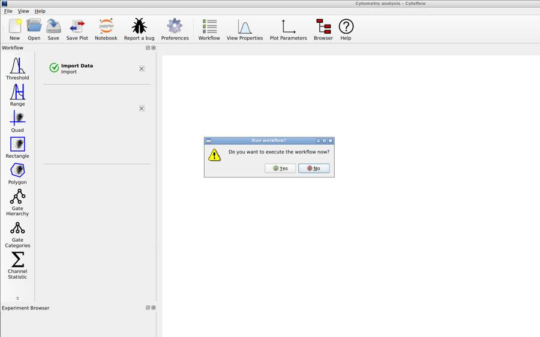
cu click 747 449; sleep 5; free -g | head -2; nproc; ps aux | grep -i cytoflow | head -5
total used free shared buff/cache available Mem: 7 1 4 0 1 5 4 root 838 0.0 0.0 4748 3164 ? S 18:47 0:00 runuser -u cfapp -- env DISPLAY=:1 HOME=/home/cfapp XDG_RUNTIME_DIR=/tmp/runtime-cfapp LANG=C.UTF-8 LC_ALL=C.UTF-8 bash -c umask 002; cd /task; exec start-cytoflow cfapp 839 0.0 0.0 4764 3672 ? S 18:47 0:00 /bin/bash /usr/local/bin/start-cytoflow cfapp 845 6.5 6.6 3615144 541072 ? Sl 18:47 0:04 /opt/cytoflow/cytoflow-1.3.2/cytoflow cfapp 860 0.2 0.4 84344 39416 ? S 18:47 0:00 /opt/cytoflow/cytoflow-1.3.2/cytoflow -B -S -I -c from multiprocessing.resource_tracker import main;main(9) cfapp 862 6.3 11.6 2119712 951656 ? Dl 18:47 0:04 /opt/cytoflow/cytoflow-1.3.2/cytoflow --multiprocessing-fork tracker_fd=10 pipe_handle=14
for i in 1 2 3 4 5 6 7 8 9; do sleep 20; free -m | sed -n 2p; ps -o rss,pcpu,cmd -p 862 | tail -1 | cut -c1-60; done
Mem: 7949 7483 121 15 585 466 6827884 18.8 /opt/cytoflow/cytoflow-1.3.2/cytoflow --multipr Mem: 7949 958 6980 15 304 6991 RSS %CPU CMD Mem: 7949 969 6945 15 342 6980 RSS %CPU CMD Mem: 7949 970 6934 15 352 6979 RSS %CPU CMD Mem: 7949 1057 6800 15 399 6892 RSS %CPU CMD Command did not complete within its 120s timeout and was moved to the background (ID: b3sxi2m38). Output is being written to: /tmp/claude-0/-task/47b9613c-a0fc-4835-99aa-e84af41bfd7d/tasks/b3sxi2m38.output. You will be notified when it completes. If it is still running after 10m in the background, it will be stopped and you will be notified. It is running now: do not start a second copy while it runs. If it is no longer needed, stop it with TaskStop. To check interim output, use Read on that file path.
ps aux | grep -i cytoflow | grep -v grep | cut -c1-200; free -m | sed -n 2,3p; dmesg 2>/dev/null | tail -5; cu screenshot /tmp/screen.png; cat /usr/local/bin/start-cytoflow; ulimit -a | head -20
root 838 0.0 0.0 4748 328 ? S 18:47 0:00 runuser -u cfapp -- env DISPLAY=:1 HOME=/home/cfapp XDG_RUNTIME_DIR=/tmp/runtime-cfapp LANG=C.UTF-8 LC_ALL=C.UTF-8 bash -c umask 002; c
cfapp 839 0.0 0.0 4764 280 ? S 18:47 0:00 /bin/bash /usr/local/bin/start-cytoflow
cfapp 845 2.3 4.7 3574428 384104 ? Sl 18:47 0:04 /opt/cytoflow/cytoflow-1.3.2/cytoflow
cfapp 860 0.0 0.2 84344 22088 ? S 18:47 0:00 /opt/cytoflow/cytoflow-1.3.2/cytoflow -B -S -I -c from multiprocessing.resource_tracker import main;main(9)
cfapp 895 0.0 0.0 209224 7488 ? S 18:47 0:00 /opt/cytoflow/cytoflow-1.3.2/_internal/PyQt5/Qt5/libexec/QtWebEngineProcess --type=zygote --no-zygote-sandbox --application-name=cytofl
cfapp 915 0.0 0.0 209224 7500 ? S 18:47 0:00 /opt/cytoflow/cytoflow-1.3.2/_internal/PyQt5/Qt5/libexec/QtWebEngineProcess --type=zygote --application-name=cytoflow --webengine-schem
cfapp 918 0.0 0.0 209224 7508 ? S 18:47 0:00 /opt/cytoflow/cytoflow-1.3.2/_internal/PyQt5/Qt5/libexec/QtWebEngineProcess --type=zygote --application-name=cytoflow --webengine-schem
cfapp 933 0.0 0.2 5163796 19168 ? Sl 18:47 0:00 /opt/cytoflow/cytoflow-1.3.2/_internal/PyQt5/Qt5/libexec/QtWebEngineProcess --type=zygote --application-name=cytoflow --webengine-schem
Mem: 7949 995 6855 15 407 6954
Swap: 0 0 0
[ 111.859436] [ 1025] 0 1025 1422115 37437 37435 2 0 1007616 0 0 claude
[ 111.859532] [ 1124] 0 1124 1224 92 90 2 0 45056 0 0 bash
[ 111.859622] [ 1134] 0 1134 784 28 27 1 0 40960 0 0 sleep
[ 111.859708] oom-kill:constraint=CONSTRAINT_NONE,nodemask=(null),cpuset=/,mems_allowed=0,global_oom,task_memcg=/,task=cytoflow,pid=862,uid=1002
[ 111.859856] Out of memory: Killed process 862 (cytoflow) total-vm:8566152kB, anon-rss:7316596kB, file-rss:8kB, shmem-rss:28kB, UID:1002 pgtables:14892kB oom_score_adj:0
/tmp/screen.png
#!/bin/bash
# Launch Cytoflow full-screen-ish; restart it if the agent closes it.
BIN=$(find /opt/cytoflow -maxdepth 3 -type f -name 'cytoflow' -perm -u+x | head -1)
[ -z "$BIN" ] && { echo "cytoflow binary not found under /opt/cytoflow"; exit 1; }
while true; do
"$BIN" >/tmp/cytoflow.log 2>&1
sleep 1
done
real-time non-blocking time (microseconds, -R) unlimited
core file size (blocks, -c) 0
data seg size (kbytes, -d) unlimited
scheduling priority (-e) 0
file size (blocks, -f) unlimited
pending signals (-i) 31775
max locked memory (kbytes, -l) 8192
max memory size (kbytes, -m) unlimited
open files (-n) 4096
pipe size (512 bytes, -p) 8
POSIX message queues (bytes, -q) 819200
real-time priority (-r) 0
stack size (kbytes, -s) 8192
cpu time (seconds, -t) unlimited
max user processes (-u) 31775
virtual memory (kbytes, -v) unlimited
file locks (-x) unlimited{
"file_path": "/tmp/screen.png"
}
cu click 925 483; id; df -h / /tmp /task 2>&1; cat /proc/swaps; tail -5 /tmp/cytoflow.log; ls /opt/cytoflow/cytoflow-1.3.2/_internal | grep -i -E "cytoflow|pandas|numexpr" | head
uid=0(root) gid=0(root) groups=0(root) Filesystem Size Used Avail Use% Mounted on /dev/root 504G 4.1G 500G 1% / /dev/root 504G 4.1G 500G 1% / /dev/root 504G 4.1G 500G 1% / Filename Type Size Used Priority QXcbIntegration: Cannot create platform OpenGL context, neither GLX nor EGL are enabled 2026-11-10 18:49:13,993 ERROR:root:Remote process exited with -9 cytoflow-1.3.2.dist-info cytoflow.desktop cytoflowgui numexpr numexpr-2.11.0.dist-info pandas pandas-2.3.3.dist-info
fallocate -l 16G /swapfile && chmod 600 /swapfile && mkswap /swapfile && swapon /swapfile; cat /proc/swaps; cat /proc/sys/vm/swappiness
Setting up swapspace version 1, size = 16 GiB (17179865088 bytes) no label, UUID=9dd62d76-81c3-4f78-bc95-cb839ea79eab Filename Type Size Used Priority /swapfile file 16777212 0 -1 60
cu screenshot /tmp/screen.png; pkill -u cfapp -f "cytoflow-1.3.2/cytoflow$" ; sleep 12; ps aux | grep -i "cytoflow-1.3.2/cytoflow" | grep -v grep | cut -c1-150; cu screenshot /tmp/screen.png
{
"file_path": "/tmp/screen.png"
}/tmp/screen.png cfapp 1250 35.1 6.4 3671960 522372 ? Sl 18:51 0:03 /opt/cytoflow/cytoflow-1.3.2/cytoflow cfapp 1261 1.6 0.4 84344 39276 ? S 18:51 0:00 /opt/cytoflow/cytoflow-1.3.2/cytoflow -B -S -I -c from multiprocessing.resource_track cfapp 1263 29.8 3.8 1458444 314188 ? Sl 18:51 0:02 /opt/cytoflow/cytoflow-1.3.2/cytoflow --multiprocessing-fork tracker_fd=10 pipe_handl /tmp/screen.png

cu click 915 493; sleep 1; cu click 90 75; sleep 2; cu click 1038 744; cu paste "/task/inputs/start.flow"; sleep 1; cu key Return; sleep 3; cu screenshot /tmp/screen.png
{
"file_path": "/tmp/screen.png"
}/tmp/screen.png

cu click 747 449; for i in $(seq 1 10); do sleep 10; echo "$(date +%T) $(free -m | awk 'NR==2{print "used",$3,"avail",$7} NR==3{print "swap",$3}' | tr '\n' ' ') $(ps -o rss=,pcpu= -C cytoflow | tr '\n' ';')"; done18:52:35 used 7521 avail 428 swap 0 0 0.0;544624 10.6;38936 0.3;6776796 34.3; 18:52:45 used 7615 avail 334 swap 0 0 0.0;544636 8.4;38936 0.2;6868148 48.8; 18:52:55 used 7845 avail 104 swap 356 0 0.0;169860 7.0; 2936 0.2;7486628 58.0; 18:53:05 used 7792 avail 157 swap 5183 0 0.0;17136 6.4; 1852 0.1;7240768 62.4; 18:53:15 used 4908 avail 3041 swap 1807 0 0.0;84816 5.7; 1852 0.1;4338360 63.0; 18:53:25 used 4920 avail 3029 swap 1807 0 0.0;84816 5.1; 1852 0.1;4338360 55.6; 18:53:35 used 4906 avail 3043 swap 1807 0 0.0;84816 4.5; 1852 0.1;4338360 49.8; 18:53:45 used 4914 avail 3035 swap 1807 0 0.0;85140 4.1; 1852 0.1;4341604 45.1; 18:53:55 used 4929 avail 3020 swap 1807 0 0.0;85216 3.8; 1852 0.1;4341624 41.2; 18:54:05 used 4944 avail 3005 swap 1807 0 0.0;85236 3.5; 1852 0.1;4341624 37.9;
cu click 240 180; sleep 2; cu screenshot /tmp/screen.png
{
"file_path": "/tmp/screen.png"
}/tmp/screen.png

cu click 652 75; sleep 2; cu screenshot /tmp/screen.png
{
"file_path": "/tmp/screen.png"
}/tmp/screen.png
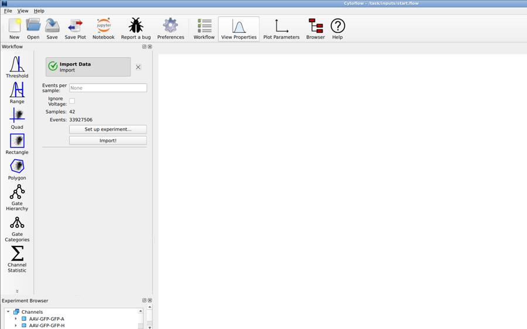
export DISPLAY=:1; which xdotool wmctrl xwininfo xprop 2>&1; xdotool search --name "Cytoflow" 2>/dev/null | head; xwininfo -root -tree 2>/dev/null | grep -i -E "cytoflow|x[0-9]+\+" | head -20
/usr/bin/xdotool
/usr/bin/xwininfo
/usr/bin/xprop
14680068
14680072
14680070
0xe00019 "Qt Clipboard Requestor Window": () 3x3+0+0 +0+0
0xe00008 "cytoflow": () 1x1+0+0 +0+0
0xe00004 "Qt Selection Owner for cytoflow": () 3x3+0+0 +0+0
0xc0000e "Openbox": ("" (none)) 1x1+-100+-100 +-100+-100
0xc00062 (has no name): () 1x1+0+0 +0+0
0xc00063 (has no name): () 1x1+0+0 +1+1
0xc00060 (has no name): () 1x1+0+0 +0+0
0xc00061 (has no name): () 1x1+0+0 +1+1
0xc0005d (has no name): () 1x1+0+0 +0+0
0xc0005e (has no name): () 1x1+0+0 +1+1
0xc00059 (has no name): ("OPENBOX_FOCUS_CYCLE_POPUP" "OPENBOX_FOCUS_CYCLE_POPUP") 1x1+0+0 +0+0
0xc0005c (has no name): () 1x1+0+0 +1+1
0xc0005b (has no name): () 1x1+0+0 +1+1
0xc0005a (has no name): () 1x1+0+0 +1+1
0xc00056 (has no name): () 1x1+0+0 +0+0
0xc00058 (has no name): () 1x1+0+0 +1+1
0xc00057 (has no name): () 1x1+0+0 +1+1
0xc00055 (has no name): () 1x1+0+0 +0+0
0xc00054 (has no name): () 1x1+0+0 +0+0
0xc00053 (has no name): () 1x1+0+0 +0+0export DISPLAY=:1; for w in $(xdotool search --name "Cytoflow"); do xdotool getwindowname $w; xdotool getwindowgeometry $w; done; xdotool getdisplaygeometry
Qt Selection Owner for cytoflow Window 14680068 Position: 0,0 (screen: 0) Geometry: 3x3 cytoflow Window 14680072 Position: 0,0 (screen: 0) Geometry: 1x1 Cytoflow - /task/inputs/start.flow Window 14680070 Position: 2,40 (screen: 0) Geometry: 2082x1171 1440 900
export DISPLAY=:1; xdotool windowsize 14680070 1436 875; xdotool windowmove 14680070 0 0; sleep 2; xdotool getwindowgeometry 14680070; cu screenshot /tmp/screen.png
{
"file_path": "/tmp/screen.png"
}Window 14680070 Position: 1,20 (screen: 0) Geometry: 1436x875 /tmp/screen.png
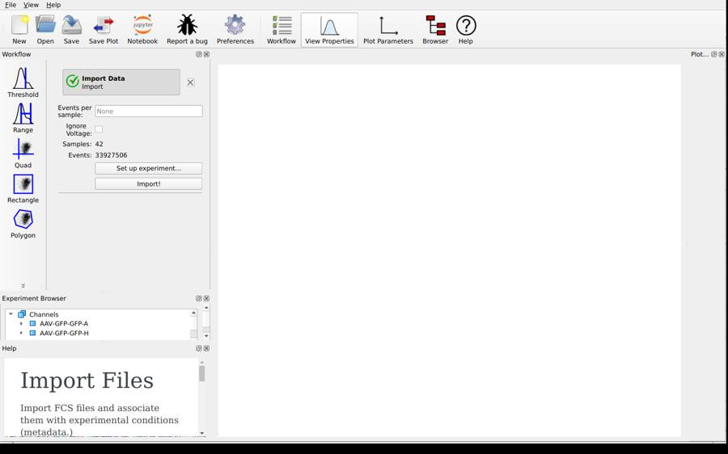
cu click 408 691; sleep 1; cu click 408 592; sleep 1; cu click 651 60; sleep 2; cu screenshot /tmp/screen.png
{
"file_path": "/tmp/screen.png"
}/tmp/screen.png
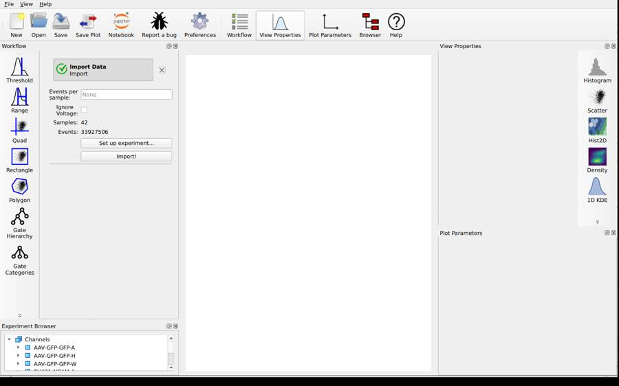
cu click 408 761; sleep 1; cu drag 1018 490 1130 490; sleep 1; cu click 1389 370; sleep 2; cu screenshot /tmp/screen.png
{
"file_path": "/tmp/screen.png"
}/tmp/screen.png
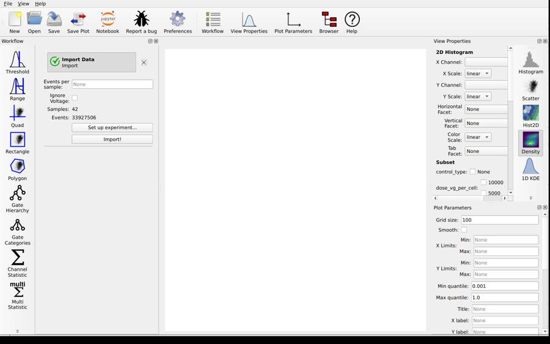
cu drag 1285 529 1285 770; sleep 1; cu click 1272 163; sleep 1; cu screenshot /tmp/screen.png
{
"file_path": "/tmp/screen.png"
}/tmp/screen.png
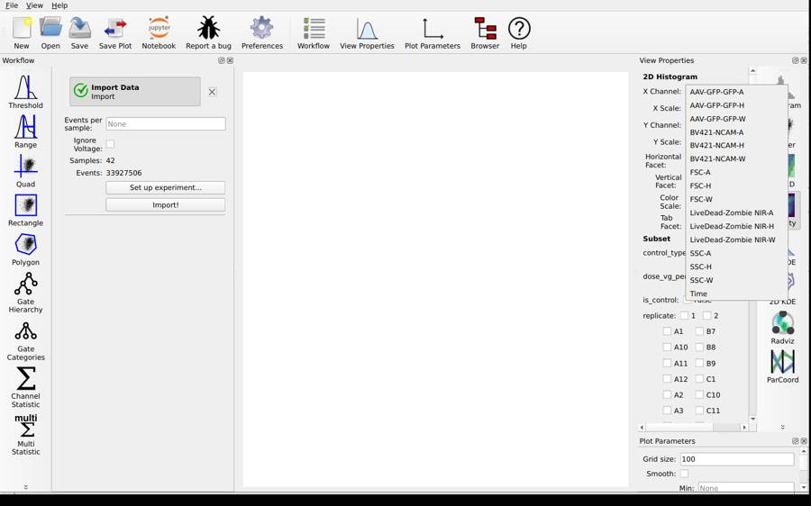
cu click 1244 307; sleep 1; cu click 1272 223; sleep 1; cu screenshot /tmp/screen.png
{
"file_path": "/tmp/screen.png"
}/tmp/screen.png
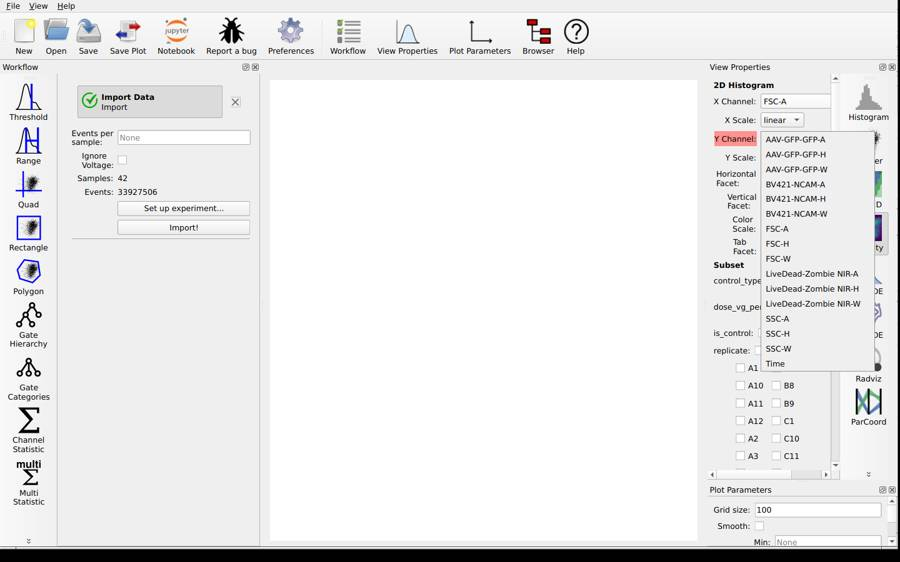
cu click 1244 511; s=$(date +%s); sleep 15; cu screenshot /tmp/screen.png; free -m | sed -n 2,3p
{
"file_path": "/tmp/screen.png"
}/tmp/screen.png Mem: 7949 7823 184 7 157 126 Swap: 16383 4671 11712
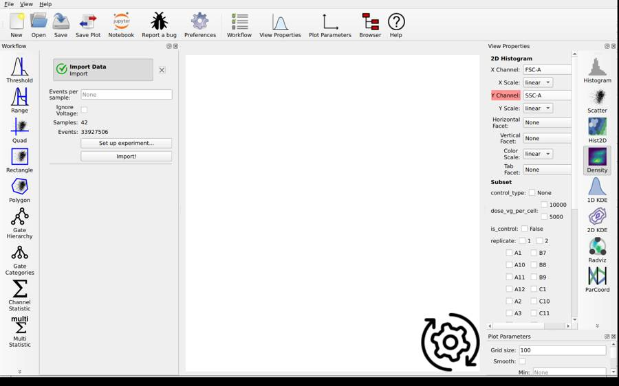
for i in $(seq 1 9); do sleep 10; echo "$(date +%T) $(free -m | awk 'NR==2{print "used",$3,"avail",$7} NR==3{print "swap",$3}' | tr '\n' ' ') $(ps -o rss=,pcpu= -C cytoflow | tr '\n' ';')"; done; cu screenshot /tmp/screen.png{
"file_path": "/tmp/screen.png"
}18:55:44 used 7942 avail 7 swap 8213 0 0.0; 6096 2.7; 400 0.0;7748780 31.9; 18:55:54 used 7930 avail 19 swap 10304 0 0.0; 5124 2.6; 372 0.0;7675440 33.5; 18:56:04 used 4613 avail 3336 swap 6732 0 0.0; 5812 2.5; 304 0.0;4212276 35.2; 18:56:14 used 7905 avail 44 swap 8270 0 0.0; 4836 2.4; 248 0.0;7681128 36.1; 18:56:24 used 7871 avail 78 swap 8698 0 0.0; 5852 2.3; 248 0.0;7587512 36.9; 18:56:34 used 7862 avail 87 swap 11690 0 0.0; 3644 2.2; 248 0.0;7579456 38.0; 18:56:44 used 7919 avail 30 swap 14875 0 0.0; 4100 2.2; 248 0.0;7642404 39.1; 18:56:54 used 392 avail 7557 swap 589 0 0.0;36840 2.1; 8 0.0; 18:57:04 used 395 avail 7554 swap 589 0 0.0;39624 2.0; 8 0.0; /tmp/screen.png
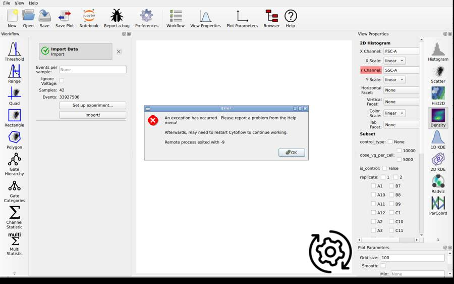
fallocate -l 40G /swapfile2 && chmod 600 /swapfile2 && mkswap /swapfile2 >/dev/null && swapon /swapfile2; cat /proc/swaps; pkill -u cfapp -f "cytoflow-1.3.2/cytoflow$"; sleep 12; export DISPLAY=:1; W=$(xdotool search --name "Cytometry analysis" | tail -1); echo $W; xdotool windowsize $W 1436 875; xdotool windowmove $W 0 0; sleep 1; cu screenshot /tmp/screen.png
{
"file_path": "/tmp/screen.png"
}Filename Type Size Used Priority /swapfile file 16777212 602876 -1 /swapfile2 file 41943036 0 -1 14680070 /tmp/screen.png
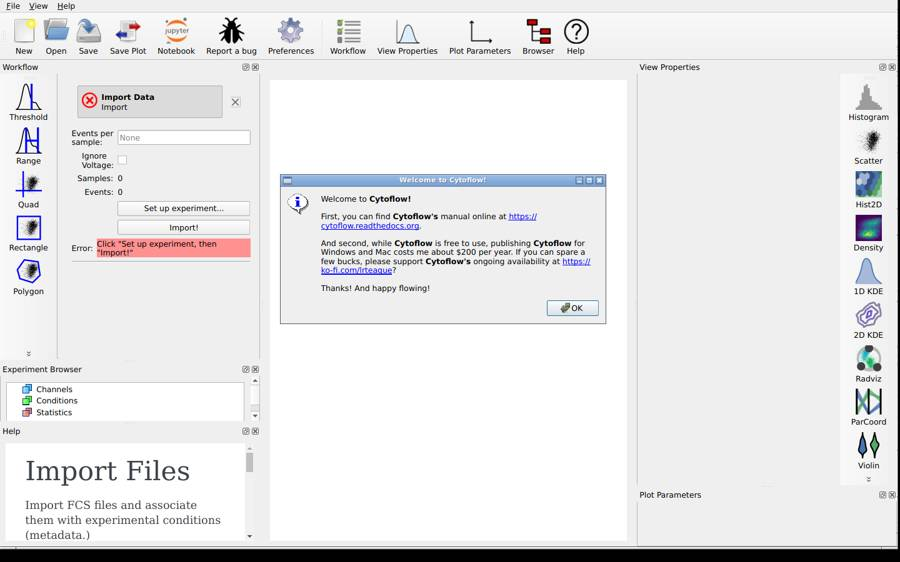
cu click 915 493; sleep 1; cu click 408 691; sleep 1; cu click 408 592; sleep 1; cu click 89 60; sleep 2; cu screenshot /tmp/screen.png
{
"file_path": "/tmp/screen.png"
}/tmp/screen.png
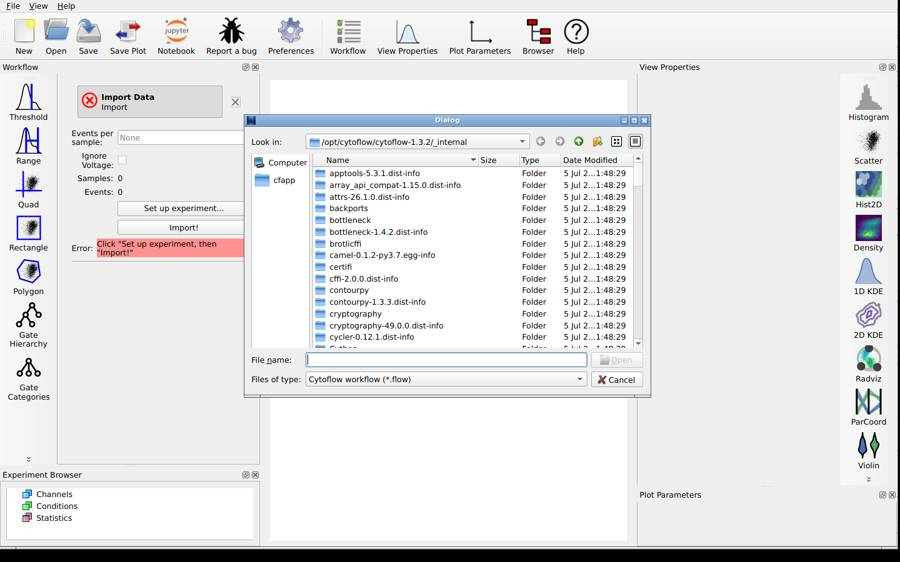
cu click 713 577; cu paste "/task/inputs/start.flow"; sleep 1; cu key Return; sleep 3; cu screenshot /tmp/screen.png
{
"file_path": "/tmp/screen.png"
}/tmp/screen.png
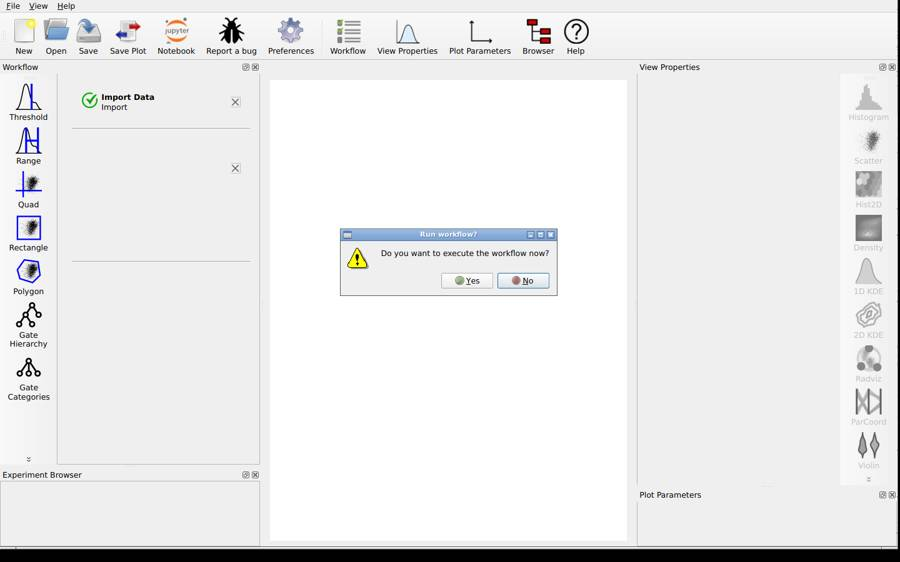
cu click 747 449; sleep 75; free -m | sed -n 2,3p; cu click 408 761; sleep 1; cu drag 1018 490 1130 490; sleep 1; cu click 240 160; sleep 2; cu screenshot /tmp/screen.png
{
"file_path": "/tmp/screen.png"
}Mem: 7949 3949 3959 0 262 4000 Swap: 57343 2524 54819 /tmp/screen.png
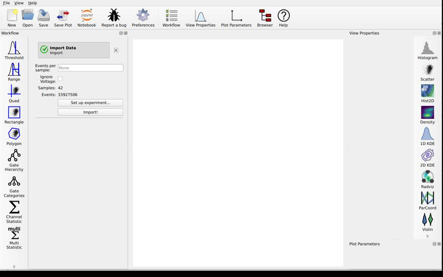
cu click 45 440; sleep 3; cu screenshot /tmp/screen.png
{
"file_path": "/tmp/screen.png"
}/tmp/screen.png
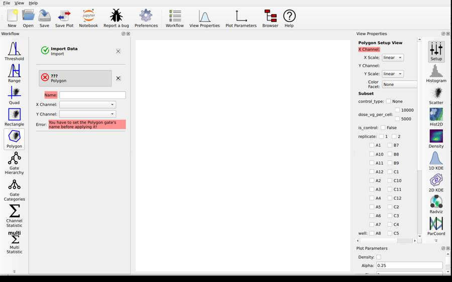
cu click 1207 820; sleep 1; cu click 1185 604; sleep 1; cu click 294 303; cu type "Cells"; cu key Tab; sleep 1; cu click 278 334; sleep 1; cu screenshot /tmp/screen.png
{
"file_path": "/tmp/screen.png"
}/tmp/screen.png
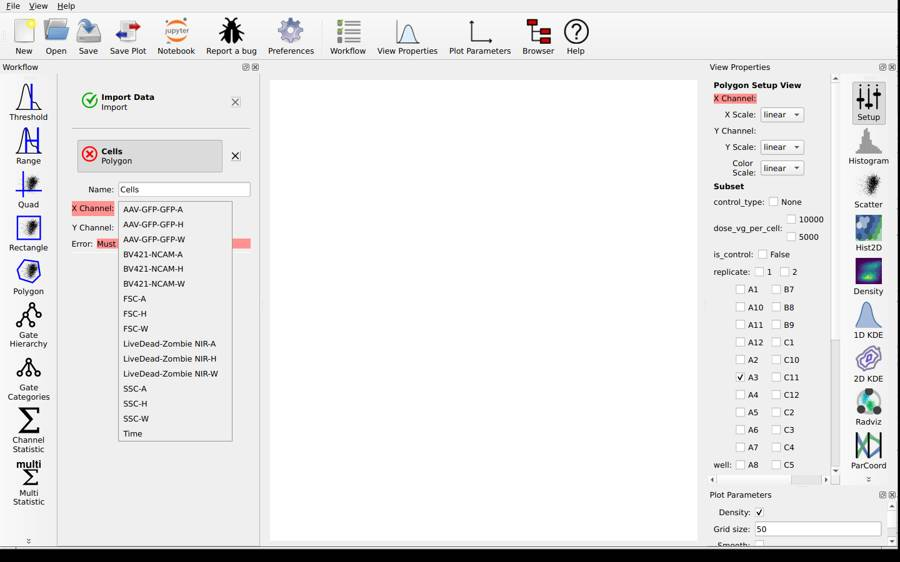
cu click 215 479; sleep 1; cu click 278 364; sleep 1; cu screenshot /tmp/screen.png
{
"file_path": "/tmp/screen.png"
}/tmp/screen.png
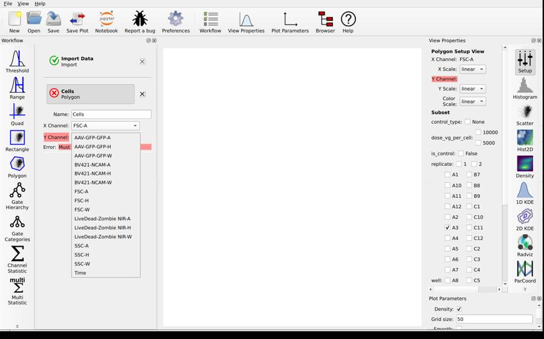
cu click 215 653; sleep 12; free -m | sed -n 2,3p; cu screenshot /tmp/screen.png
{
"file_path": "/tmp/screen.png"
}Mem: 7949 6733 946 4 495 1216 Swap: 57343 2420 54923 /tmp/screen.png
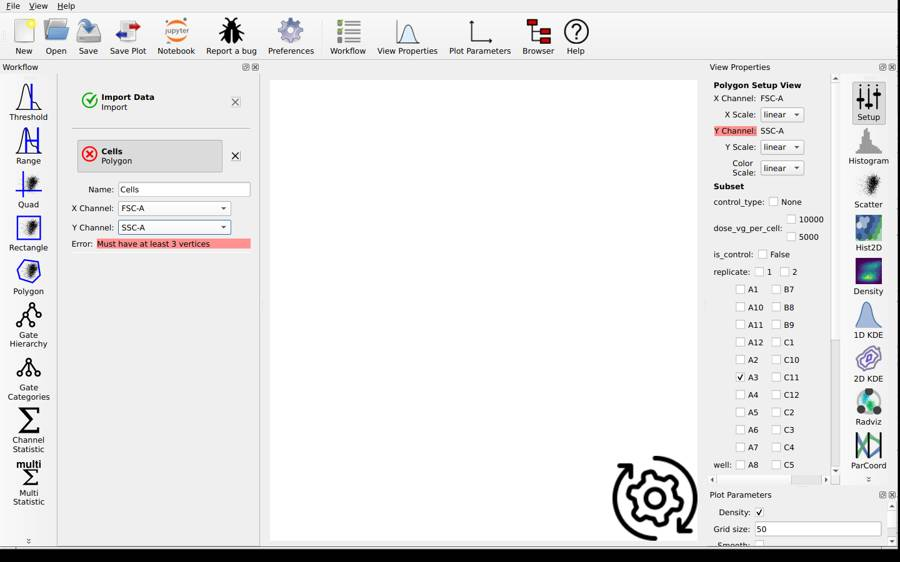
sleep 15; free -m | sed -n 2,3p; cu screenshot /tmp/screen.png
{
"file_path": "/tmp/screen.png"
}Mem: 7949 6253 1424 4 497 1696 Swap: 57343 2420 54923 /tmp/screen.png
cu click 1250 269; sleep 1; cu screenshot /tmp/screen.png
{
"file_path": "/tmp/screen.png"
}/tmp/screen.png
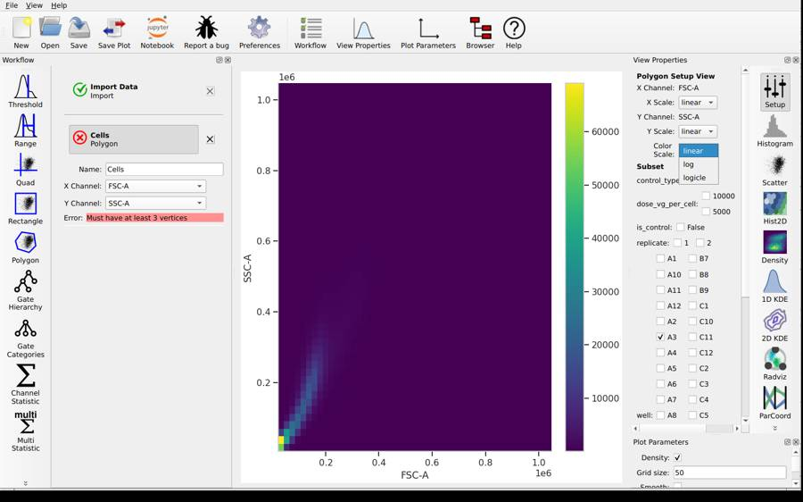
cu click 1235 295; sleep 1; cu click 1300 847 double; cu key ctrl+a; cu type "120"; cu key Tab; sleep 40; cu screenshot /tmp/screen.png
{
"file_path": "/tmp/screen.png"
}/tmp/screen.png
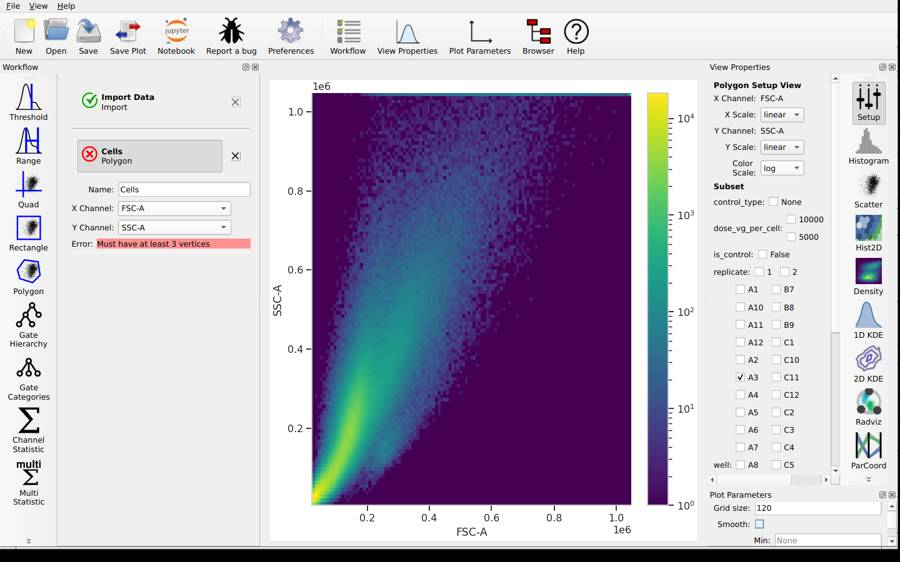
cu click 1250 184; sleep 1; cu click 1235 209; sleep 1; cu screenshot /tmp/s1.png; cu click 1250 236; sleep 1; cu screenshot /tmp/s2.png
{
"file_path": "/tmp/s2.png"
}/tmp/s1.png /tmp/s2.png
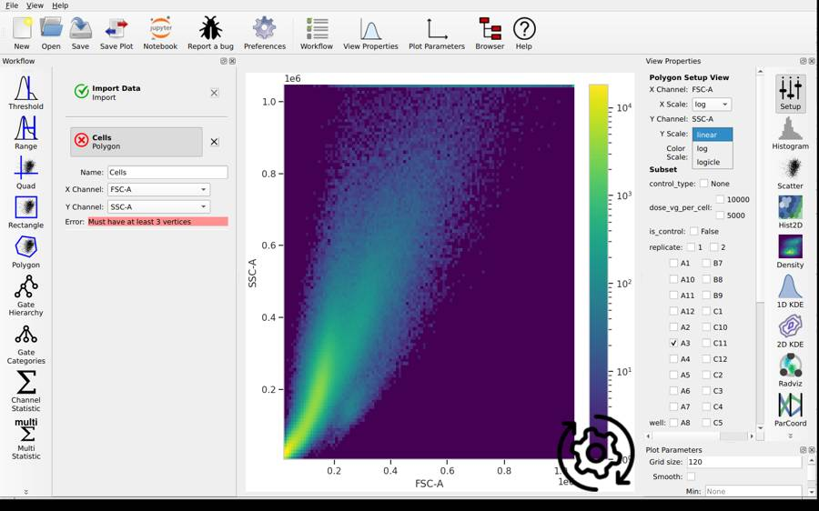
cu click 1235 262; sleep 45; cu screenshot /tmp/screen.png
{
"file_path": "/tmp/screen.png"
}/tmp/screen.png
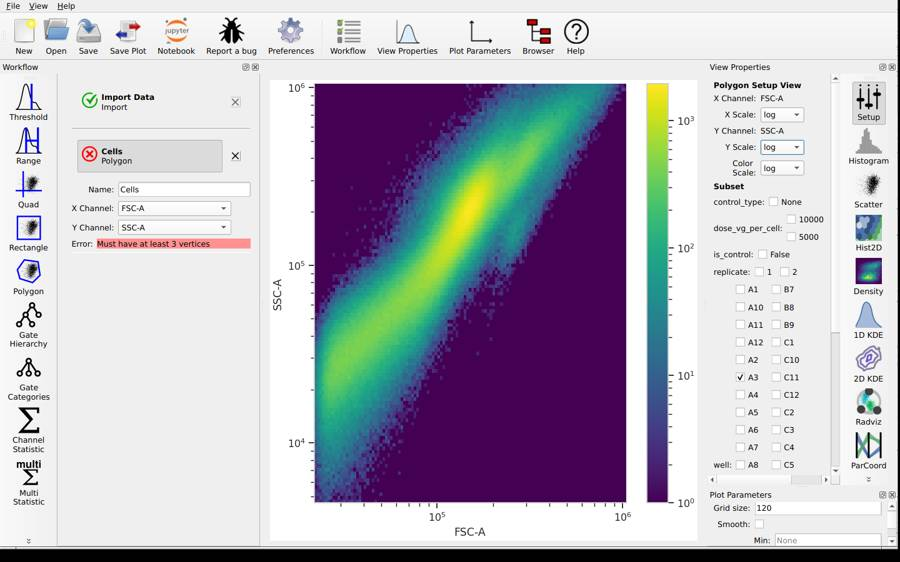
cu click 1250 184; sleep 1; cu click 1235 185; sleep 2; cu click 1250 236; sleep 1; cu click 1235 238; sleep 50; cu screenshot /tmp/screen.png
{
"file_path": "/tmp/screen.png"
}/tmp/screen.png
cu click 1250 184; sleep 1; cu screenshot /tmp/screen.png
{
"file_path": "/tmp/screen.png"
}/tmp/screen.png
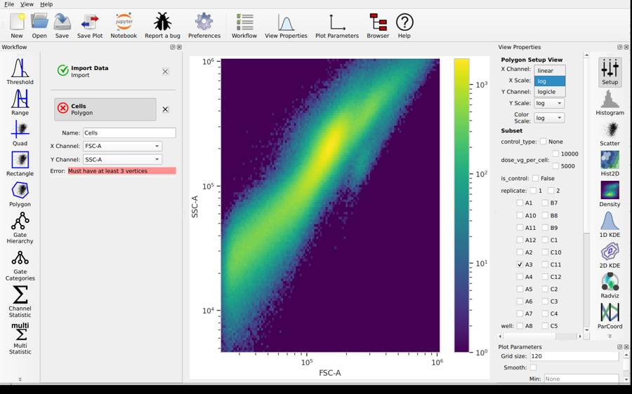
cu click 1242 162; sleep 1; cu click 1250 236; sleep 1; cu click 1242 213; sleep 1; cu click 1242 464; sleep 1; cu click 1242 745; sleep 60; cu screenshot /tmp/screen.png
{
"file_path": "/tmp/screen.png"
}/tmp/screen.png
cd /tmp && python3 -c "
from PIL import Image
im=Image.open('/tmp/screen.png').crop((490,480,760,815)).resize((810,1005),Image.LANCZOS); im.save('/tmp/crop.png')"Shell cwd was reset to /task
{
"file_path": "/tmp/crop.png"
}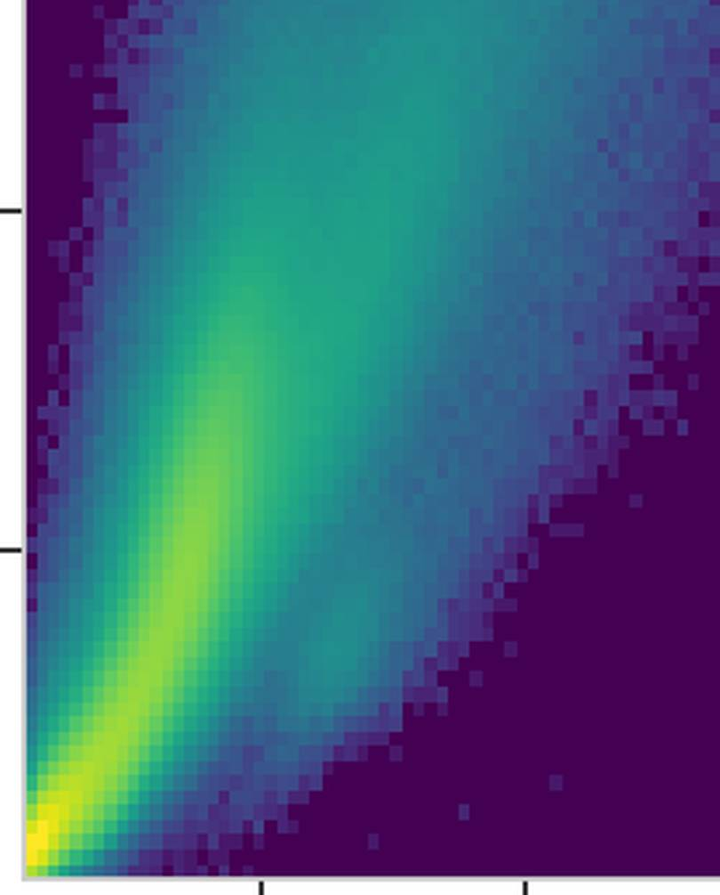
cu click 516 768; sleep 1; cu click 516 654; sleep 1; cu click 548 179; sleep 1; cu click 986 179; sleep 1; cu click 986 464; sleep 1; cu screenshot /tmp/s1.png; cu click 628 768 double; sleep 5; cu screenshot /tmp/screen.png
{
"file_path": "/tmp/screen.png"
}/tmp/s1.png /tmp/screen.png
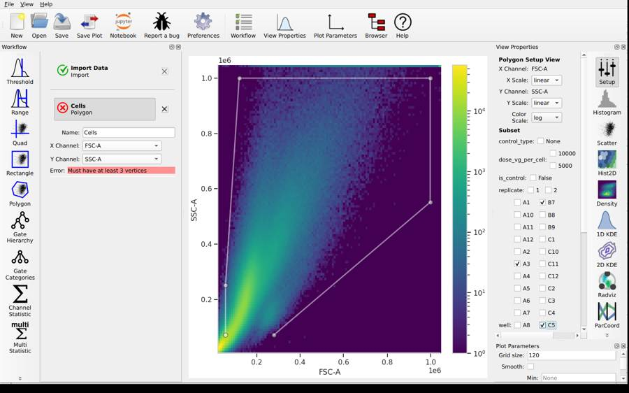
cu click 516 768; sleep 8; cu screenshot /tmp/screen.png
{
"file_path": "/tmp/screen.png"
}/tmp/screen.png
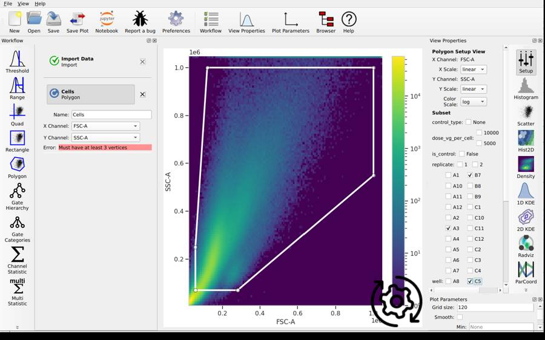
sleep 45; free -m | sed -n 2,3p; cu screenshot /tmp/screen.png
<tool_use_error>Blocked: sleep 45 followed by: free -m sed -n 2,3p cu screenshot /tmp/screen.png. To wait for a condition, use Monitor with an until-loop (e.g. `until <check>; do sleep 2; done`). To wait for a command you started, use run_in_background: true. Do not chain shorter sleeps to work around this block.</tool_use_error>
{
"file_path": "/tmp/screen.png"
}
cat > /tmp/waitidle.sh <<'E'
#!/bin/bash
# wait until all cytoflow processes are idle (cpu ticks stop advancing) for 2 consecutive 3s windows
max=${1:-300}; t0=$(date +%s); idle=0
ticks(){ s=0; for p in $(pgrep -f "cytoflow-1.3.2/cytoflow"); do a=$(awk '{print $14+$15}' /proc/$p/stat 2>/dev/null); s=$((s+${a:-0})); done; echo $s; }
prev=$(ticks)
until [ $idle -ge 2 ] || [ $(( $(date +%s)-t0 )) -ge $max ]; do sleep 3; cur=$(ticks); if [ $((cur-prev)) -lt 25 ]; then idle=$((idle+1)); else idle=0; fi; prev=$cur; done
echo "waited $(( $(date +%s)-t0 ))s; $(free -m | awk 'NR==2{print "avail",$7} NR==3{print "swap",$3}' | tr '\n' ' ')"
cu screenshot /tmp/screen.png >/dev/null
E
chmod +x /tmp/waitidle.sh; /tmp/waitidle.sh 200{
"file_path": "/tmp/screen.png"
}waited 18s; avail 3337 swap 3792
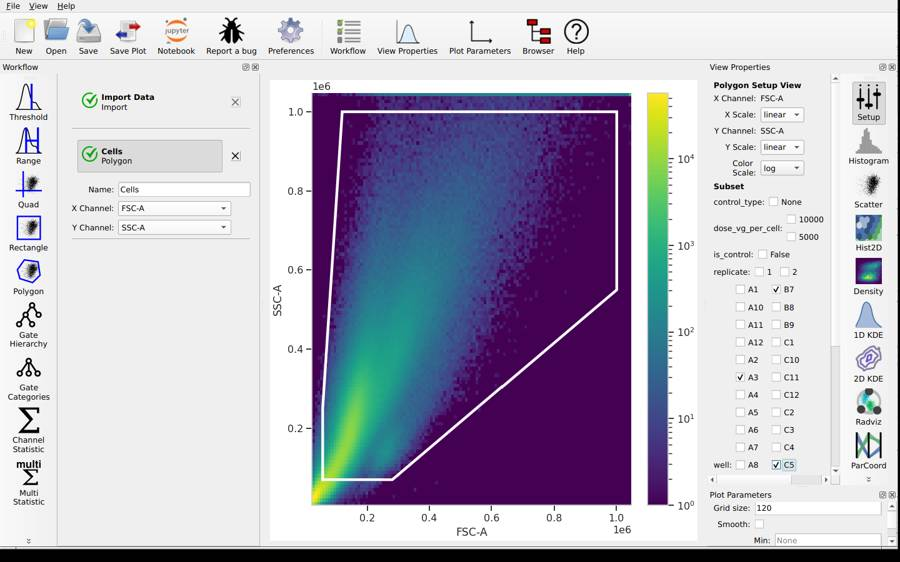
mkdir -p /task/outputs; chmod 777 /task/outputs; ls -ld /task/outputs; cu click 20 10; sleep 1; cu screenshot /tmp/screen.png
{
"file_path": "/tmp/screen.png"
}drwxrwsrwx 2 agent task 4096 Nov 5 08:15 /task/outputs /tmp/screen.png
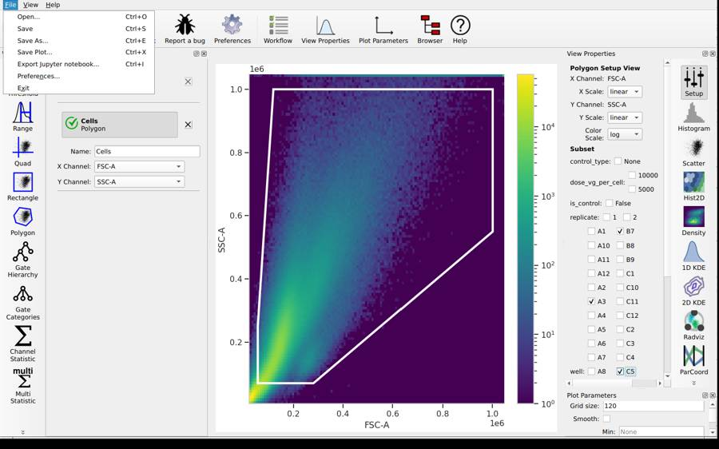
cu click 65 82; sleep 2; cu screenshot /tmp/screen.png
{
"file_path": "/tmp/screen.png"
}/tmp/screen.png
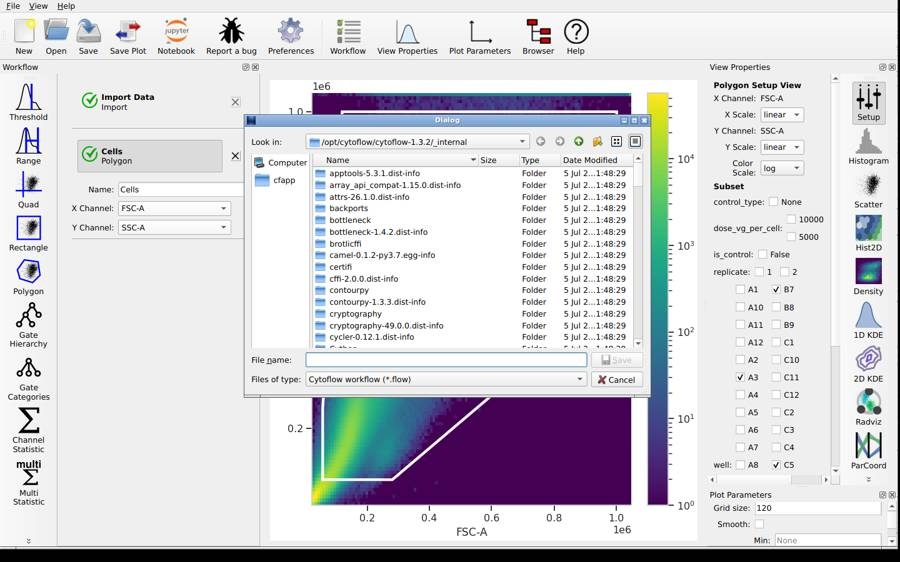
cu click 713 577; cu paste "/task/outputs/workflow.flow"; sleep 1; cu key Return; sleep 3; cu screenshot /tmp/screen.png; ls -la /task/outputs; grep -n -A12 "polygon" /task/outputs/workflow.flow | head -60
/tmp/screen.png total 40 drwxrwsrwx 2 agent task 4096 Nov 10 19:06 . drwxr-xr-x 4 root root 4096 Nov 5 08:15 .. -rw-rw-r-- 1 cfapp task 31904 Nov 10 19:06 workflow.flow 1117: current_view: &id002 !polygon-view;3 1118- current_plot: null 1119- huefacet: '' 1120- huescale: log 1121: op: &id001 !polygon;1 1122- name: Cells 1123- vertices: 1124- - !!python/tuple 1125- - 56002.427081929374 1126- - 69386.33428682313 1127- - !!python/tuple 1128- - 56002.427081929374 1129- - 250370.6449337892 1130- - !!python/tuple 1131- - 118883.01555995448 1132- - 1000632.8781612123 1133- - !!python/tuple -- 1149: plot_params: !polygon-params;1 1150- alpha: 0.25 1151- col_wrap: null 1152- density: true 1153- despine: true 1154- gridsize: 120 1155- huelabel: '' 1156- legend: true 1157- marker: o 1158- max_quantile: 1.0 1159- min_quantile: 0.001 1160- s: 2 1161- sharex: true
cu click 45 440; sleep 3; cu screenshot /tmp/screen.png
{
"file_path": "/tmp/screen.png"
}/tmp/screen.png
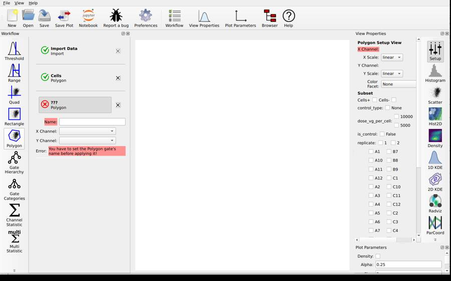
cu click 1207 820; sleep 1; cu click 1196 320; sleep 1; cu click 1185 626; sleep 1; cu click 1242 486; sleep 1; cu click 1242 738; sleep 1; cu click 294 390; cu type "Singlets"; cu key Tab; sleep 1; cu click 278 420; sleep 1; cu screenshot /tmp/screen.png
{
"file_path": "/tmp/screen.png"
}/tmp/screen.png
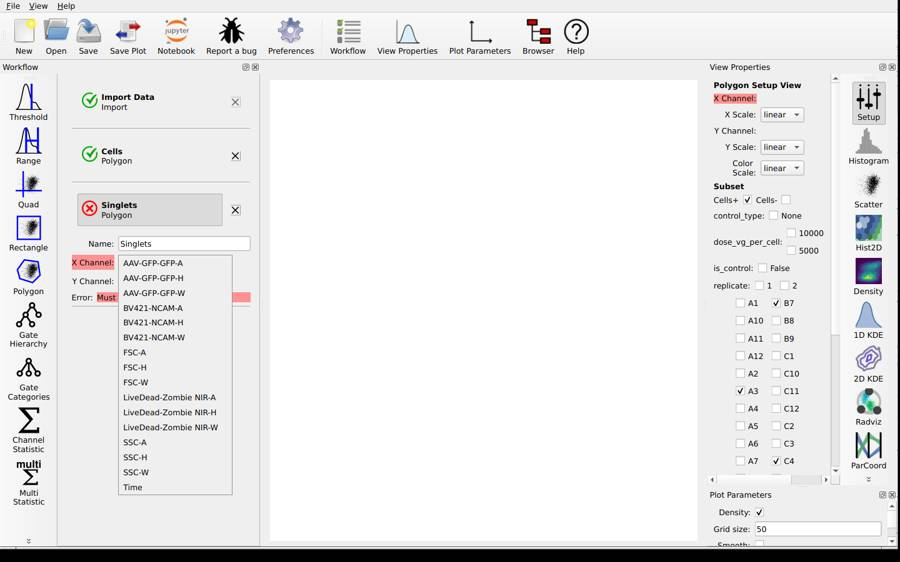
cu click 216 733; sleep 1; cu click 1250 269; sleep 1; cu click 1235 295; sleep 1; cu click 1300 847 double; cu key ctrl+a; cu type "150"; cu key Tab; sleep 1; cu click 278 450; sleep 1; cu screenshot /tmp/screen.png
{
"file_path": "/tmp/screen.png"
}/tmp/screen.png
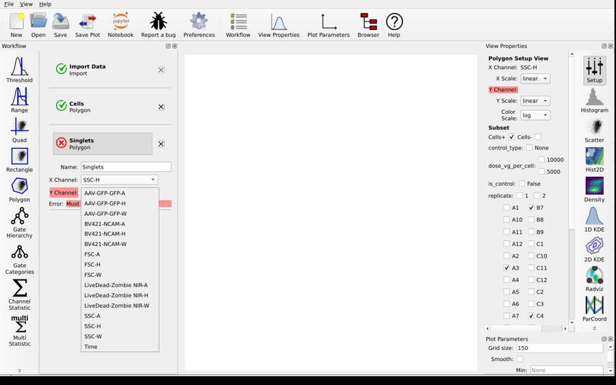
cu click 216 739; /tmp/waitidle.sh 240
{
"file_path": "/tmp/screen.png"
}waited 27s; avail 2135 swap 3816
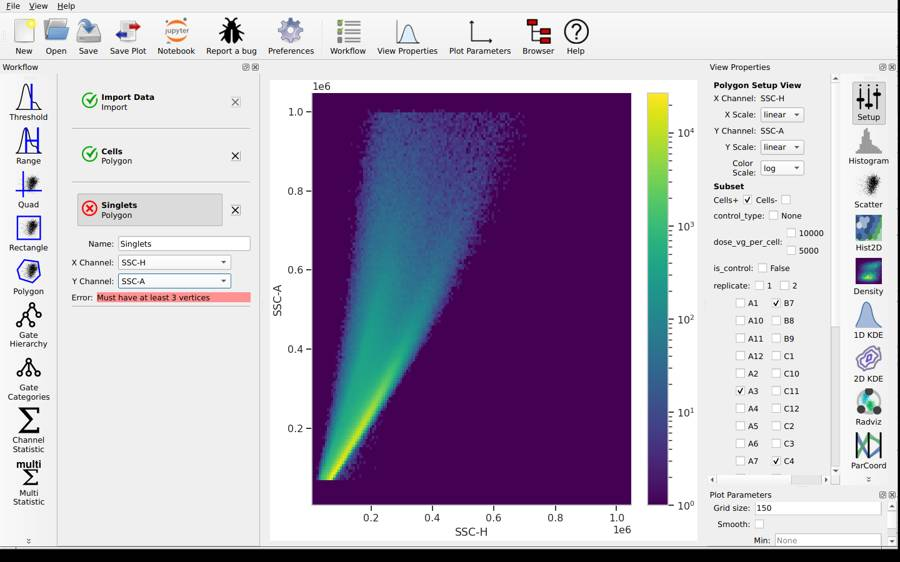
cd /tmp && python3 -c "
from PIL import Image
im=Image.open('/tmp/screen.png').crop((495,150,1010,810)).resize((1030,1320),Image.LANCZOS); im.save('/tmp/crop.png')"Shell cwd was reset to /task
{
"file_path": "/tmp/crop.png"
}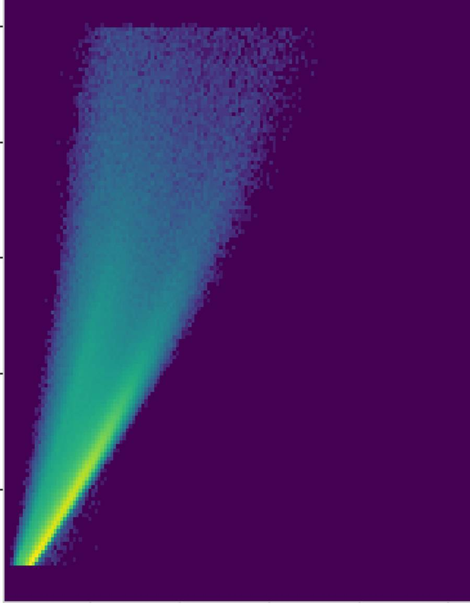
cu click 515 794; sleep 1; cu click 515 777; sleep 1; cu click 815 177; sleep 1; cu click 869 177; sleep 1; cu click 529 794; sleep 1; cu click 515 794; /tmp/waitidle.sh 240
{
"file_path": "/tmp/screen.png"
}waited 36s; avail 2212 swap 3895
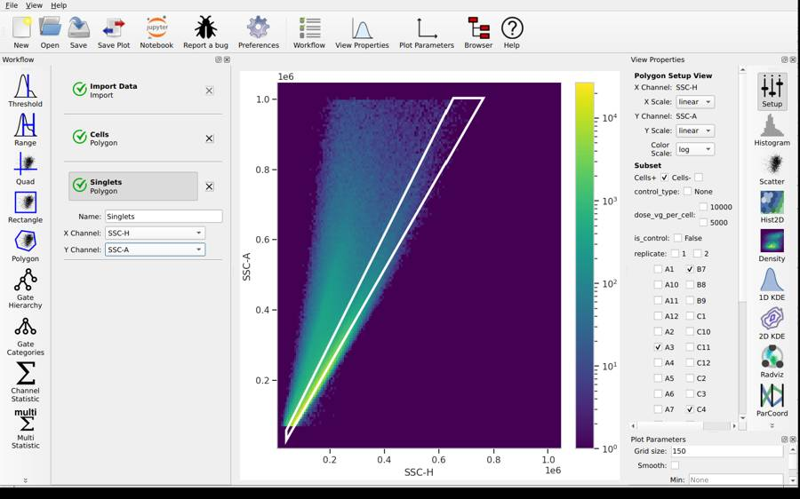
cd /tmp && python3 -c "
from PIL import Image
im=Image.open('/tmp/screen.png').crop((500,500,720,810)).resize((880,1240),Image.LANCZOS); im.save('/tmp/crop.png')"; grep -n -A22 "name: Singlets" /task/outputs/workflow.flow | head -5{
"file_path": "/tmp/crop.png"
}Shell cwd was reset to /task
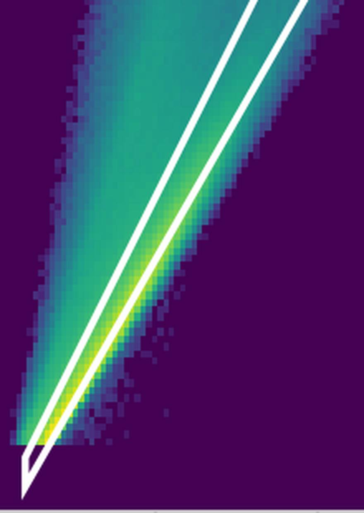
cu click 506 796; sleep 2; cu click 815 177; sleep 2; cu screenshot /tmp/screen.png
{
"file_path": "/tmp/screen.png"
}/tmp/screen.png
cu click 875 177; sleep 2; cu click 543 782; sleep 2; cu screenshot /tmp/s1.png; cu click 506 796; /tmp/waitidle.sh 240
cd /tmp && python3 -c "
from PIL import Image
im=Image.open('/tmp/screen.png').crop((430,130,1120,870)); im.save('/tmp/crop0.png')
im=Image.open('/tmp/screen.png').crop((500,560,680,810)).resize((720,1000),Image.LANCZOS); im.save('/tmp/crop.png')"{
"file_path": "/tmp/crop0.png"
}{
"file_path": "/tmp/crop.png"
}/tmp/s1.png waited 36s; avail 2121 swap 3850
Shell cwd was reset to /task
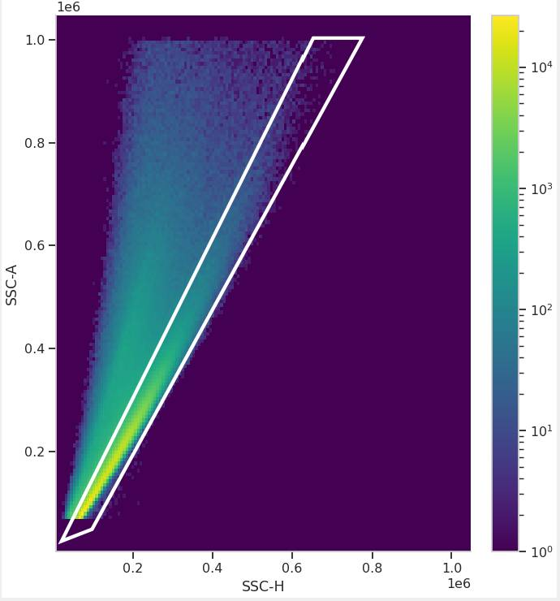
cu key ctrl+s; sleep 3; ls -la /task/outputs; cu click 45 370; sleep 3; cu screenshot /tmp/screen.png
{
"file_path": "/tmp/screen.png"
}total 52 drwxrwsrwx 2 agent task 4096 Nov 10 19:06 . drwxr-xr-x 4 root root 4096 Nov 5 08:15 .. -rw-rw-r-- 1 cfapp task 44465 Nov 10 19:10 workflow.flow /tmp/screen.png
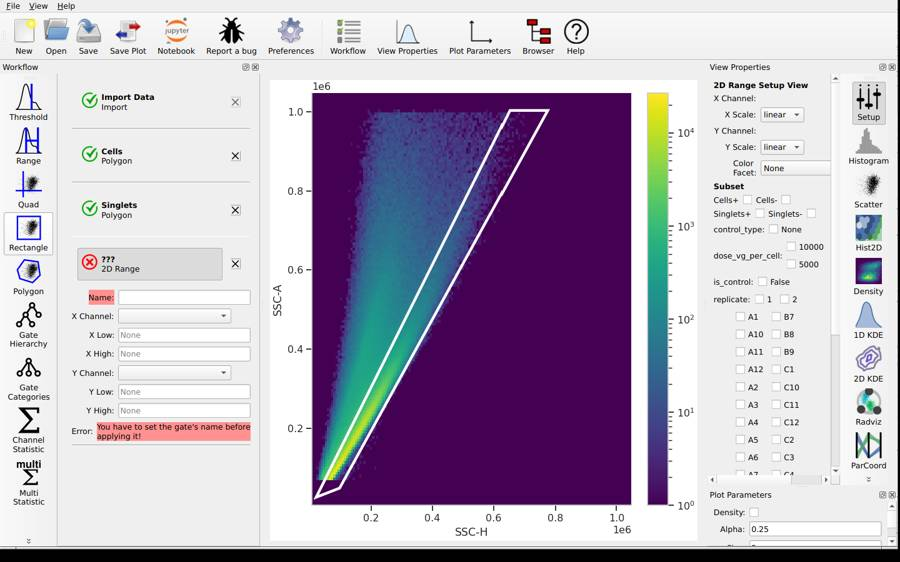
cu click 1207 820; sleep 1; cu click 1196 320; sleep 1; cu click 1216 342; sleep 1; cu click 1185 648; sleep 1; cu click 1242 508; sleep 1; cu click 1242 732; sleep 1; cu click 1250 184; sleep 1; cu click 1240 233; sleep 1; cu click 1250 269; sleep 1; cu click 1235 295; sleep 1; cu click 1300 847 double; cu key ctrl+a; cu type "150"; cu key Tab; sleep 1; cu click 294 477; cu type "Live"; cu key Tab; sleep 1; cu click 278 507; sleep 1; cu screenshot /tmp/screen.png
{
"file_path": "/tmp/screen.png"
}/tmp/screen.png
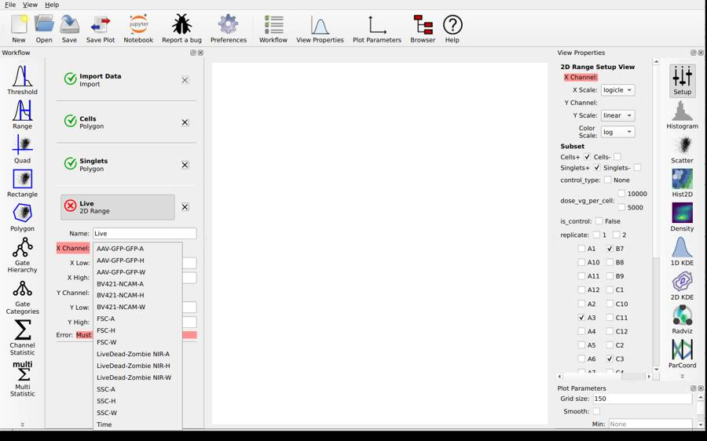
cu click 270 723; sleep 1; cu click 278 598; sleep 1; cu screenshot /tmp/screen.png
{
"file_path": "/tmp/screen.png"
}/tmp/screen.png
cu click 216 816; /tmp/waitidle.sh 240
{
"file_path": "/tmp/screen.png"
}Command did not complete within its 120s timeout and was moved to the background (ID: bsfg8nkjr). Output is being written to: /tmp/claude-0/-task/47b9613c-a0fc-4835-99aa-e84af41bfd7d/tasks/bsfg8nkjr.output. You will be notified when it completes. If it is still running after 10m in the background, it will be stopped and you will be notified. It is running now: do not start a second copy while it runs. If it is no longer needed, stop it with TaskStop. No output had been read from it when it was moved. A program that buffers its output, or a pipe into one such as tail, can keep the output file empty until the command finishes. To check interim output, use Read on that file path.

cu screenshot /tmp/s3.png; free -m | sed -n 2,3p; ps -o pid,pcpu,rss,etime -C cytoflow; tail -3 /tmp/cytoflow.log
{
"file_path": "/tmp/s3.png"
}/tmp/s3.png Mem: 7949 7819 115 0 240 130 Swap: 57343 17443 39900 PID %CPU RSS ELAPSED 860 0.0 0 25:51 1261 0.0 0 21:19 1732 0.8 3940 15:43 1743 0.0 172 15:41 1745 35.4 7520732 15:41 QXcbIntegration: Cannot create platform OpenGL context, neither GLX nor EGL are enabled
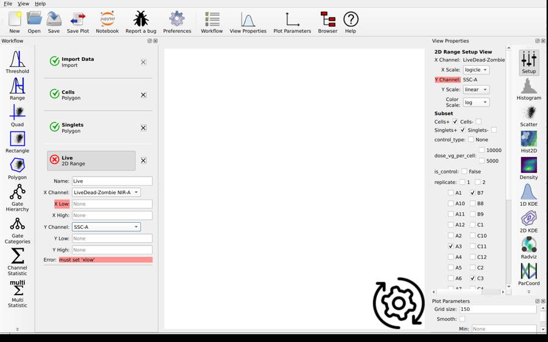
until [ "$(awk '{print $14+$15}' /proc/1745/stat)" = "$(sleep 4; awk '{print $14+$15}' /proc/1745/stat)" ]; do free -m | awk 'NR==3{printf "swap %s ", $3}'; done; echo; free -m | sed -n 2,3p; cu screenshot /tmp/s3.png{
"file_path": "/tmp/s3.png"
}swap 21966 swap 23545 swap 24993 swap 26211 swap 27314 swap 28016 swap 28985 swap 28969 swap 29232 swap 29923 swap 30530 swap 31201 swap 32010 swap 32838 swap 33813 swap 34910 swap 35831 swap 36293 swap 35731 swap 35672 swap 35680 swap 35652 swap 35720 swap 35804 swap 35665 swap 35837 swap 36016 swap 36180 swap 36221 swap 36463 swap 36085 swap 35747 swap 35689 swap 35875 swap 35992 swap 36213 swap 35747 swap 35905 swap 35752 swap 35791 swap 35809 swap 36073 swap 36906 swap 36947 swap 37198 swap 37290 swap 37270 swap 36476 swap 36618 swap 36409 swap 36611 swap 36888 swap 37108 swap 36477 swap 36699 swap 36946 swap 36579 swap 36723 swap 36476 swap 36795 swap 37075 swap 37255 swap 37505 swap 37857 swap 37932 swap 37648 swap 36868 swap 33186 swap 32236 swap 31662 swap 30993 swap 30429 swap 29725 swap 29246 swap 28652 swap 28212 swap 27831 swap 27654 swap 27363 swap 27114 swap 26810 swap 26448 swap 26093 swap 25735 swap 25291 swap 24827 swap 24384 swap 23685 swap 22975 swap 22234 swap 21076 swap 20975 swap 16260 swap 15728 swap 6263 Mem: 7949 615 7364 4 193 7334 Swap: 57343 6263 51080 /tmp/s3.png
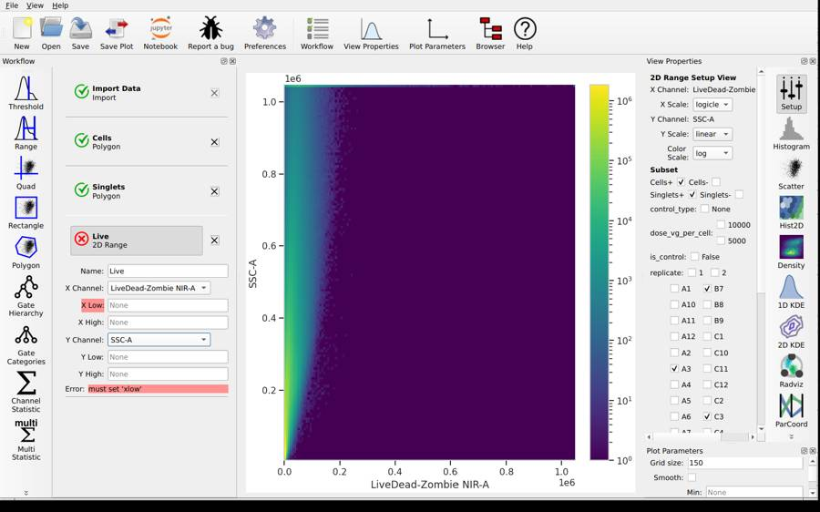
ps -o pid,pcpu,rss,vsz,etime -C cytoflow; cd /tmp && python3 -c "
from PIL import Image
im=Image.open('/tmp/s3.png').crop((495,140,760,300)).resize((1060,640),Image.LANCZOS); im.save('/tmp/crop.png')
im=Image.open('/tmp/s3.png').crop((495,650,760,815)).resize((1060,660),Image.LANCZOS); im.save('/tmp/crop2.png')"PID %CPU RSS VSZ ELAPSED 860 0.0 0 0 32:52 1261 0.0 0 0 28:19 1732 0.6 43176 3608608 22:44 1743 0.0 164 84344 22:41 1745 37.4 63248 7673808 22:41 Shell cwd was reset to /task
{
"file_path": "/tmp/crop.png"
}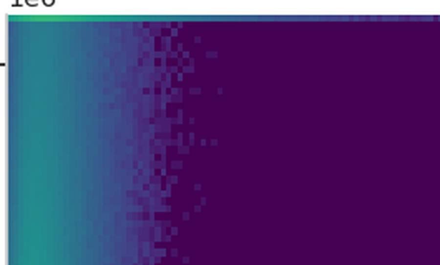
{
"file_path": "/tmp/crop2.png"
}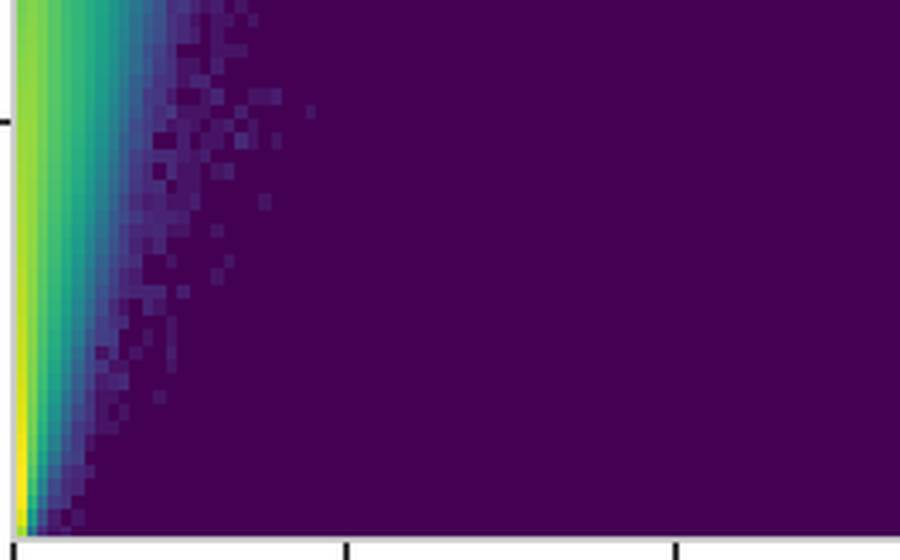
ls /opt/cytoflow/cytoflow-1.3.2/_internal/cytoflowgui | head -30; find /opt/cytoflow -name "*.py" | head -5; find /opt/cytoflow -name "*.pyz" -o -name "PYZ*" | head; grep -c "" /tmp/cytoflow.log; tail -20 /tmp/cytoflow.log | cut -c1-300
editors help op_plugins preferences.ini view_plugins /opt/cytoflow/cytoflow-1.3.2/_internal/cytoflowgui/help/views/stats_2d-1.py /opt/cytoflow/cytoflow-1.3.2/_internal/cytoflowgui/help/views/histogram_2d-1.py /opt/cytoflow/cytoflow-1.3.2/_internal/cytoflowgui/help/views/bar_chart-1.py /opt/cytoflow/cytoflow-1.3.2/_internal/cytoflowgui/help/views/histogram-1.py /opt/cytoflow/cytoflow-1.3.2/_internal/cytoflowgui/help/views/scatterplot-1.py 1 QXcbIntegration: Cannot create platform OpenGL context, neither GLX nor EGL are enabled
cu click 1242 732; for i in 1 2 3 4 5 6 7 8; do sleep 3; free -m | awk 'NR==3{printf "swap %s ", $3}'; done; echo; cu screenshot /tmp/s3.pngswap 6251 swap 6251 swap 6251 swap 6251 swap 6251 swap 6251 swap 6249 swap 6251 /tmp/s3.png
{
"file_path": "/tmp/s3.png"
}
/tmp/waitidle.sh 100; ps -o pid,pcpu,rss -C cytoflow | tail -2
{
"file_path": "/tmp/screen.png"
}waited 100s; avail 31 swap 16903 1743 0.0 168 1745 37.0 7711696
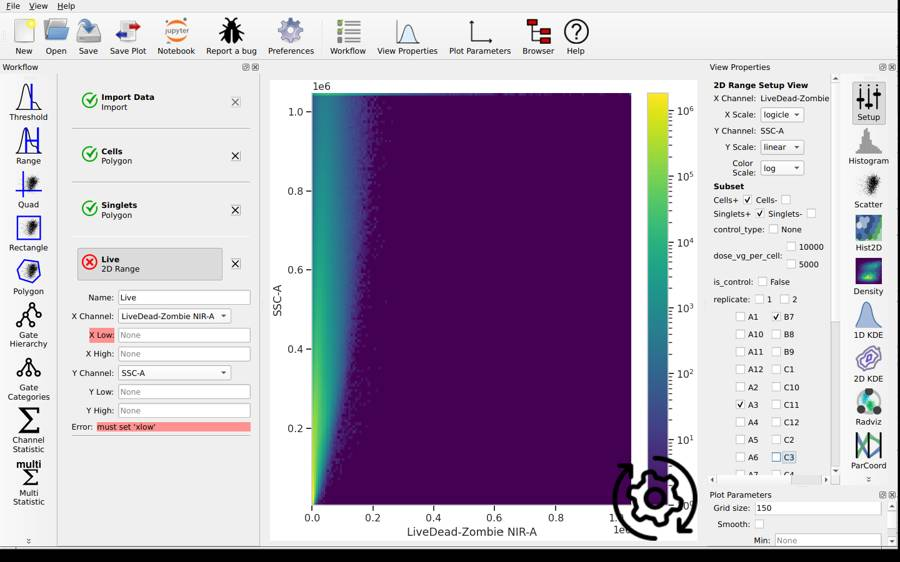
pkill -u cfapp -f "cytoflow-1.3.2/cytoflow"; sleep 10; export DISPLAY=:1; W=$(xdotool search --name "Cytometry analysis" | tail -1); echo $W; xdotool windowsize $W 1436 875; xdotool windowmove $W 0 0; sleep 1; free -m | sed -n 2,3p; cu click 915 493; sleep 1; cu screenshot /tmp/screen.png; grep -n "subset\|xscale\|yscale\|huescale\|name:" /task/outputs/workflow.flow | grep -v "name: 'None'" | head -40
14680070 Mem: 7949 1139 6260 10 782 6810 Swap: 57343 200 57143 /tmp/screen.png 25: name: null 37: name: null 47: name: null 57: name: null 108: name: null 155: fcs_name: AAV-GFP-GFP-A 160: fcs_name: AAV-GFP-GFP-H 165: fcs_name: AAV-GFP-GFP-W 170: fcs_name: BV421-NCAM-A 175: fcs_name: BV421-NCAM-H 180: fcs_name: BV421-NCAM-W 185: fcs_name: FSC-A 190: fcs_name: FSC-H 195: fcs_name: FSC-W 200: fcs_name: LiveDead-Zombie NIR-A 205: fcs_name: LiveDead-Zombie NIR-H 210: fcs_name: LiveDead-Zombie NIR-W 215: fcs_name: SSC-A 220: fcs_name: SSC-H 225: fcs_name: SSC-W 230: fcs_name: Time 882: name: control_type 887: name: dose_vg_per_cell 894: name: is_control 899: name: replicate 905: name: well 981: name: null 990: name: null 1002: name: null 1012: name: null 1022: name: null 1073: name: null 1120: huescale: log 1122: name: Cells 1146: xscale: linear 1148: yscale: linear 1176: subset_list: 1177: - !category-subset;1 1178: name: control_type 1182: - !category-subset;1
sed -n 1120,1150p /task/outputs/workflow.flow; grep -n -B2 -A28 "name: Singlets" /task/outputs/workflow.flow | sed -n 1,45p
huescale: log
op: &id001 !polygon;1
name: Cells
vertices:
- !!python/tuple
- 56002.427081929374
- 69386.33428682313
- !!python/tuple
- 56002.427081929374
- 250370.6449337892
- !!python/tuple
- 118883.01555995448
- 1000632.8781612123
- !!python/tuple
- 1001307.2738682401
- 1000632.8781612123
- !!python/tuple
- 1001307.2738682401
- 549817.4134587694
- !!python/tuple
- 280276.52598688554
- 69386.33428682313
- !!python/tuple
- 280276.52598688554
- 69386.33428682313
xchannel: FSC-A
xscale: linear
ychannel: SSC-A
yscale: linear
plot_params: !polygon-params;1
alpha: 0.25
1888- huescale: log
1889- op: &id005 !polygon;1
1890: name: Singlets
1891- vertices:
1892- - !!python/tuple
1893- - 19995.846724513307
1894- - 24962.912582567806
1895- - !!python/tuple
1896- - 651755.2508919267
1897- - 1003923.5019911571
1898- - !!python/tuple
1899- - 775129.1412680546
1900- - 1003923.5019911571
1901- - !!python/tuple
1902- - 96572.74419935129
1903- - 47997.27939218168
1904- xchannel: SSC-H
1905- xscale: linear
1906- ychannel: SSC-A
1907- yscale: linear
1908- plot_params: !polygon-params;1
1909- alpha: 0.25
1910- col_wrap: null
1911- density: true
1912- despine: true
1913- gridsize: 150
1914- huelabel: ''
1915- legend: true
1916- marker: o
1917- max_quantile: 1.0
1918- min_quantile: 0.001cu click 89 60; sleep 2; cu click 713 577; cu paste "/task/outputs/workflow.flow"; sleep 1; cu key Return; sleep 3; cu screenshot /tmp/screen.png
{
"file_path": "/tmp/screen.png"
}/tmp/screen.png
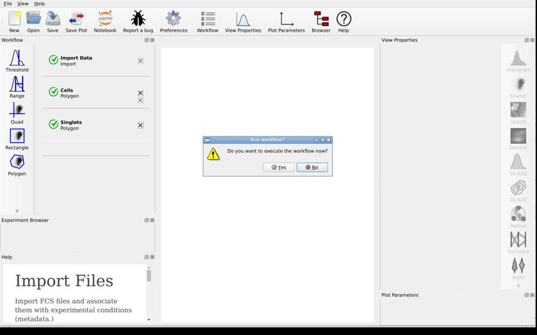
cu click 747 449; sleep 3; cu click 408 691; sleep 1; cu click 408 592; sleep 1; /tmp/waitidle.sh 110
{
"file_path": "/tmp/screen.png"
}waited 88s; avail 1973 swap 2323
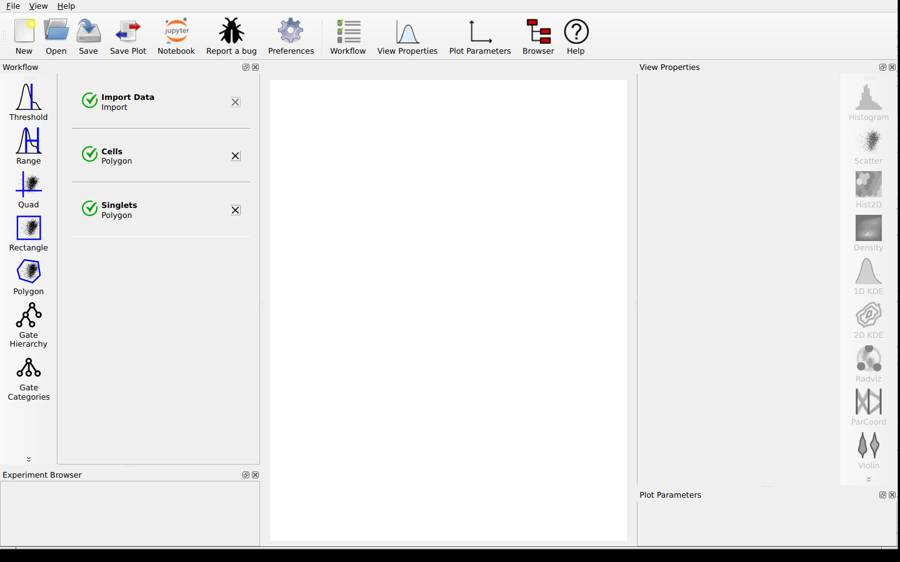
cu click 408 761; sleep 1; cu drag 1018 490 1130 490; sleep 1; cu click 240 335; sleep 2; /tmp/waitidle.sh 90
{
"file_path": "/tmp/screen.png"
}waited 37s; avail 2250 swap 2884
cu click 1389 230; sleep 3; cu screenshot /tmp/screen.png
{
"file_path": "/tmp/screen.png"
}/tmp/screen.png
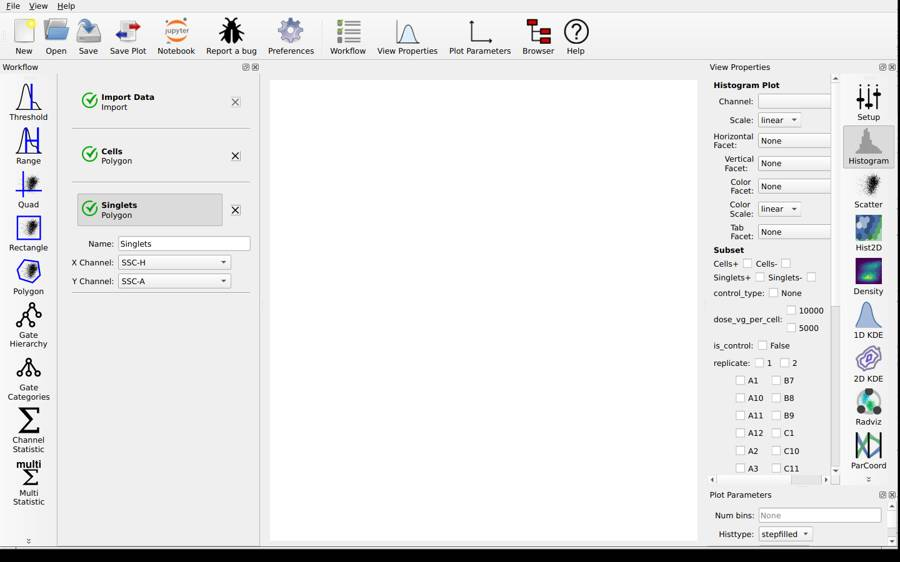
cu click 1196 422; sleep 1; cu click 1216 444; sleep 1; cu click 1185 750; sleep 1; cu click 1242 610; sleep 1; cu click 1242 694; sleep 1; cu click 1270 163; sleep 1; cu screenshot /tmp/screen.png
{
"file_path": "/tmp/screen.png"
}/tmp/screen.png
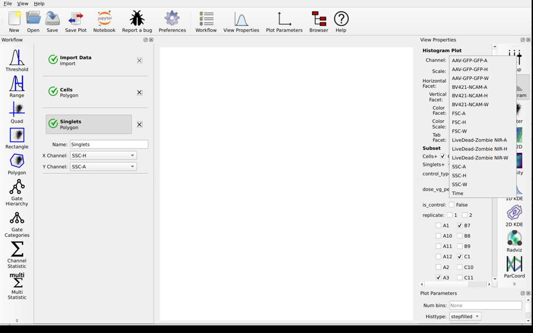
cu click 1294 379; for i in 1 2 3 4 5 6 7 8 9 10; do sleep 3; free -m | awk 'NR==3{printf "swap %s ", $3}'; done; echo; cu screenshot /tmp/screen.png{
"file_path": "/tmp/screen.png"
}swap 2881 swap 2881 swap 2881 swap 2881 swap 2881 swap 2881 swap 2881 swap 2881 swap 2880 swap 2880 /tmp/screen.png
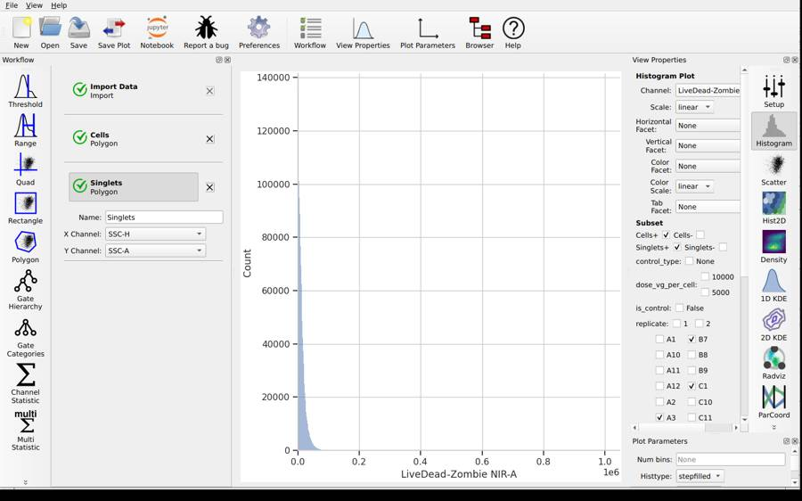
cu click 1247 192; sleep 1; cu click 1240 241; for i in 1 2 3 4 5 6 7 8 9 10; do sleep 3; free -m | awk 'NR==3{printf "swap %s ", $3}'; done; echo; cu screenshot /tmp/screen.png{
"file_path": "/tmp/screen.png"
}swap 2880 swap 2880 swap 2880 swap 2880 swap 2888 swap 2888 swap 2881 swap 2881 swap 2881 swap 2881 /tmp/screen.png
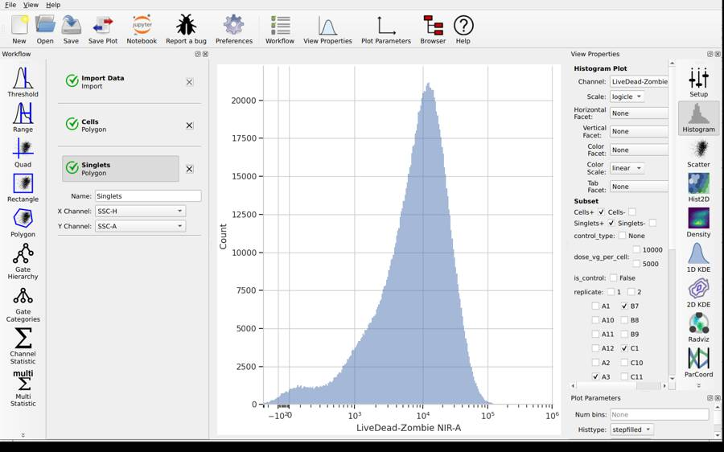
cu click 1389 440; sleep 3; cu screenshot /tmp/screen.png
{
"file_path": "/tmp/screen.png"
}/tmp/screen.png
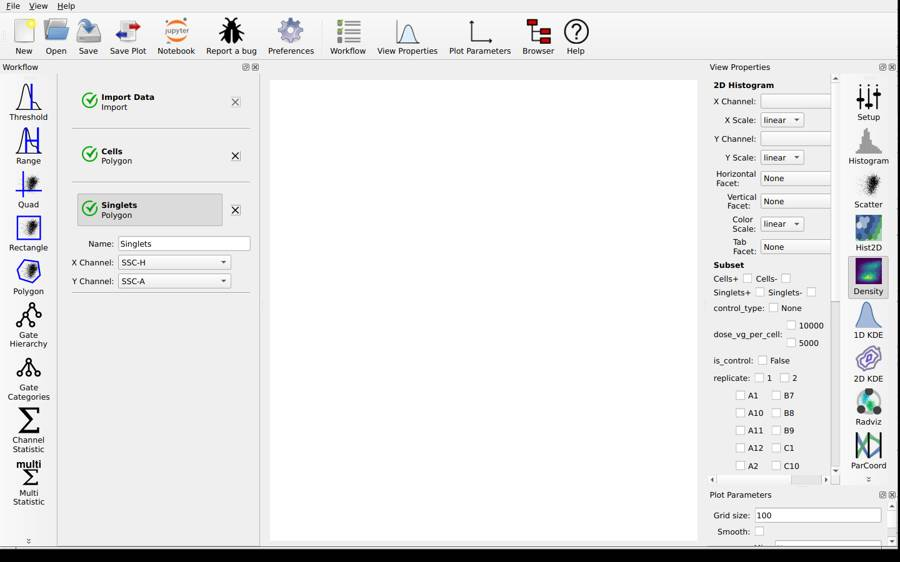
cu click 1196 446; sleep 1; cu click 1216 468; sleep 1; cu click 1185 662; sleep 1; cu click 1242 634; sleep 1; cu click 1242 718; sleep 1; cu click 1272 163; sleep 1; cu click 1294 379; sleep 1; cu click 1272 223; sleep 1; cu click 1244 511; sleep 6; cu screenshot /tmp/s1.png; cu click 1250 192; sleep 1; cu click 1240 241; sleep 5; cu click 1250 359; sleep 1; cu click 1236 384; /tmp/waitidle.sh 100
{
"file_path": "/tmp/screen.png"
}/tmp/s1.png waited 33s; avail 1588 swap 2880
thinking
Zombie NIR vs SSC-A shows one continuous cloud in these wells, so I'm checking Zombie NIR against GFP in the high-dose wells to locate the live cells.
cu click 1185 690; sleep 1; cu click 1185 718; sleep 1; cu click 1185 662; sleep 1; cu click 1242 634; sleep 1; cu click 1242 718; sleep 1; cu click 1272 223; sleep 1; cu screenshot /tmp/s1.png
{
"file_path": "/tmp/s1.png"
}/tmp/s1.png
cu click 1272 14; sleep 2; cu click 1250 253; sleep 1; cu screenshot /tmp/s1.png
{
"file_path": "/tmp/s1.png"
}/tmp/s1.png
cu click 1245 302; /tmp/waitidle.sh 110
{
"file_path": "/tmp/screen.png"
}waited 61s; avail 1719 swap 3367
cu click 1389 230; sleep 4; cu click 1270 299; sleep 1; cu screenshot /tmp/s1.png
{
"file_path": "/tmp/s1.png"
}/tmp/s1.png
cu click 1234 276; /tmp/waitidle.sh 100
{
"file_path": "/tmp/screen.png"
}waited 25s; avail 1488 swap 3289
cu click 1389 440; sleep 3; cu click 1185 690; sleep 1; cu click 1185 718; sleep 1; cu scroll 1240 600 down 10; sleep 2; cu screenshot /tmp/s1.png
{
"file_path": "/tmp/s1.png"
}/tmp/s1.png
/tmp/waitidle.sh 100
{
"file_path": "/tmp/screen.png"
}waited 33s; avail 1934 swap 3410
cu click 1192 735; sleep 0.5; cu click 1137 229; sleep 0.5; cu click 1137 257; sleep 0.5; cu click 1192 229; sleep 0.5; cu click 1192 257; sleep 2; /tmp/waitidle.sh 110
{
"file_path": "/tmp/screen.png"
}waited 60s; avail 1704 swap 3629
cu click 1389 230; sleep 4; cu screenshot /tmp/s1.png
{
"file_path": "/tmp/s1.png"
}/tmp/s1.png
cu click 1192 735; sleep 0.5; cu click 1192 594; sleep 0.5; cu click 1192 566; sleep 0.5; cu click 1137 313; sleep 0.5; cu click 1192 173; sleep 2; /tmp/waitidle.sh 110
{
"file_path": "/tmp/screen.png"
}waited 36s; avail 1419 swap 3523
cu click 45 370; sleep 3; cu screenshot /tmp/s1.png
{
"file_path": "/tmp/s1.png"
}/tmp/s1.png
cu click 1192 713; sleep 1; cu click 1207 820; sleep 1; cu scroll 1240 400 up 15; sleep 2; cu screenshot /tmp/s1.png
{
"file_path": "/tmp/s1.png"
}/tmp/s1.png
cu click 1146 320; sleep 1; cu click 1166 342; sleep 1; cu click 1205 269; sleep 1; cu click 1195 295; sleep 1; cu click 294 477; cu type "Live"; cu key Tab; sleep 1; cu click 278 507; sleep 1; cu click 270 723; sleep 2; cu screenshot /tmp/s1.png
{
"file_path": "/tmp/s1.png"
}/tmp/s1.png
cu click 294 537; cu type "-100000"; cu key Tab; sleep 1; cu click 294 567; cu type "120000"; cu key Tab; sleep 1; cu click 278 598; sleep 1; cu screenshot /tmp/s1.png
{
"file_path": "/tmp/s1.png"
}/tmp/s1.png
cu click 216 816; for i in 1 2 3 4 5; do sleep 3; free -m | awk 'NR==3{printf "swap %s ", $3}'; done; echo; cu screenshot /tmp/s1.png{
"file_path": "/tmp/s1.png"
}swap 3658 swap 4621 swap 5362 swap 5982 swap 6842 /tmp/s1.png
thinking
The 2D Range view is plotting the full plate again instead of the subset, so I'm finishing the Live gate's values, switching it to a harmless view, and restarting Cytoflow.
cu click 294 628; cu type "0"; cu key Tab; sleep 1; cu click 294 658; cu type "1040000"; cu key Tab; sleep 1; cu click 1389 230; sleep 3; cu screenshot /tmp/s1.png; free -m | sed -n 3p
{
"file_path": "/tmp/s1.png"
}/tmp/s1.png Swap: 57343 12675 44668
cu key ctrl+s; sleep 3; ls -la /task/outputs/; grep -n -A8 "name: Live" /task/outputs/workflow.flow | head -20; grep -n "current_view" /task/outputs/workflow.flow
total 64 drwxrwsrwx 2 agent task 4096 Nov 10 19:06 . drwxr-xr-x 4 root root 4096 Nov 5 08:15 .. -rw-rw-r-- 1 cfapp task 53846 Nov 10 19:38 workflow.flow 200: fcs_name: LiveDead-Zombie NIR-A 201- range: 1048576.0 202- type: channel 203- voltage: '300' 204- LiveDead-Zombie NIR-H: 205: fcs_name: LiveDead-Zombie NIR-H 206- range: 1048576.0 207- type: channel 208- voltage: '300' 209- LiveDead-Zombie NIR-W: 210: fcs_name: LiveDead-Zombie NIR-W 211- range: 1024.0 212- type: channel 213- voltage: '300' 214- SSC-A: 215- fcs_name: SSC-A 216- range: 1048576.0 217- type: channel 218- voltage: '300' -- 152: current_view: null 1117: current_view: &id002 !polygon-view;3 1885: current_view: &id006 !histogram;2 2753: current_view: &id043 !histogram;2
date; sed -n 2700,2760p /task/outputs/workflow.flow; grep -n "range2d\|xlow\|xhigh\|ylow\|yhigh" /task/outputs/workflow.flow | head -20
Tue Nov 10 19:38:35 UTC 2026
- B7
- B8
- B9
- C1
- C10
- C11
- C12
- C2
- C3
- C4
- C5
- C6
- C7
- C8
- C9
- D1
- D2
- D3
- D4
- D5
- D6
xchannel: LiveDead-Zombie NIR-A
xfacet: ''
xscale: logicle
ychannel: AAV-GFP-GFP-A
yfacet: ''
yscale: logicle
- !workflow-item;5
channels:
- AAV-GFP-GFP-A
- AAV-GFP-GFP-H
- AAV-GFP-GFP-W
- BV421-NCAM-A
- BV421-NCAM-H
- BV421-NCAM-W
- FSC-A
- FSC-H
- FSC-W
- LiveDead-Zombie NIR-A
- LiveDead-Zombie NIR-H
- LiveDead-Zombie NIR-W
- SSC-A
- SSC-H
- SSC-W
- Time
conditions:
Cells: *id007
Singlets: *id008
control_type: *id009
dose_vg_per_cell: *id010
is_control: *id011
replicate: *id012
well: *id013
current_view: &id043 !histogram;2
channel: ''
current_plot: null
huefacet: ''
huescale: linear
plot_params: !histogram-params;4
alpha: 0.5
col_wrap: null
2893: operation: &id040 !range2d;1
2896: xhigh: 120000.0
2897: xlow: -100000.0
2899: yhigh: 1040000.0
2900: ylow: 0.0
2904: - !range2d-view;3
2909: plot_params: !range2d-params;1sed -n 2890,2903p /task/outputs/workflow.flow; pkill -u cfapp -f "cytoflow-1.3.2/cytoflow"; sleep 10; export DISPLAY=:1; W=$(xdotool search --name "Cytometry analysis" | tail -1); xdotool windowsize $W 1436 875; xdotool windowmove $W 0 0; sleep 1; cu click 915 493; sleep 1; cu click 408 691; sleep 1; cu click 408 592; sleep 1; cu click 89 60; sleep 2; cu click 713 577; cu paste "/task/outputs/workflow.flow"; sleep 1; cu key Return; sleep 3; cu click 747 449; sleep 2; cu screenshot /tmp/s1.png
{
"file_path": "/tmp/s1.png"
} name_metadata: $PnS
replicate: *id037
well: *id038
operation: &id040 !range2d;1
name: Live
xchannel: LiveDead-Zombie NIR-A
xhigh: 120000.0
xlow: -100000.0
ychannel: SSC-A
yhigh: 1040000.0
ylow: 0.0
statistics:
Conditions: *id039
views:
/tmp/s1.pngcu click 408 761; sleep 1; cu drag 1018 490 1130 490; sleep 1; /tmp/waitidle.sh 110
{
"file_path": "/tmp/screen.png"
}waited 88s; avail 1934 swap 2288
cu click 240 422; sleep 4; cu screenshot /tmp/s1.png
{
"file_path": "/tmp/s1.png"
}/tmp/s1.png
cu click 1196 422; sleep 0.5; cu click 1192 444; sleep 0.5; cu click 1216 466; sleep 0.5; cu click 1185 744; sleep 0.5; cu click 1242 716; sleep 0.5; cu click 1242 632; sleep 0.5; cu click 1270 299; sleep 1; cu click 1234 276; sleep 1; cu click 1270 163; sleep 1; cu click 1268 163; sleep 5; cu click 1247 192; sleep 1; cu click 1240 241; sleep 2; /tmp/waitidle.sh 100
{
"file_path": "/tmp/screen.png"
}waited 24s; avail 1412 swap 2189
thinking
I'm setting the GFP cut-off at 2000 and adding the GFP_pos rectangle, since GFP-negative live cells sit around 1.6e3–2e3 in low-dose wells.
cu click 45 370; sleep 3; cu click 1389 257; sleep 3; cu screenshot /tmp/s1.png
{
"file_path": "/tmp/s1.png"
}/tmp/s1.png
cu click 294 563; cu type "GFP_pos"; cu key Tab; sleep 1; cu click 278 593; sleep 1; cu screenshot /tmp/s1.png
{
"file_path": "/tmp/s1.png"
}/tmp/s1.png
cu click 245 529; sleep 1; cu click 294 624; cu type "2000"; cu key Tab; sleep 1; cu click 294 654; cu type "1048576"; cu key Tab; sleep 1; cu click 278 684; sleep 1; cu screenshot /tmp/s1.png
{
"file_path": "/tmp/s1.png"
}/tmp/s1.png

cu click 216 816; sleep 2; cu click 294 714; cu type "0"; cu key Tab; sleep 1; cu click 294 744; cu type "1040000"; cu key Tab; sleep 3; for i in 1 2 3 4; do sleep 3; free -m | awk 'NR==3{printf "swap %s ", $3}'; done; echo; /tmp/waitidle.sh 60; cu key ctrl+s; sleep 2; ls -la /task/outputs{
"file_path": "/tmp/screen.png"
}swap 2189 swap 2189 swap 2189 swap 2189 waited 6s; avail 1391 swap 2189 total 88 drwxrwsrwx 2 agent task 4096 Nov 10 19:06 . drwxr-xr-x 4 root root 4096 Nov 5 08:15 .. -rw-rw-r-- 1 cfapp task 78777 Nov 10 19:42 workflow.flow
cu click 45 690; sleep 3; cu screenshot /tmp/s1.png
{
"file_path": "/tmp/s1.png"
}/tmp/s1.png
cu click 288 650; cu type "counts"; cu key Tab; sleep 1; cu click 185 739; sleep 0.5; cu click 185 767; sleep 0.5; cu click 185 795; sleep 0.5; cu click 185 823; sleep 0.5; cu click 298 823; sleep 0.5; cu click 268 680; sleep 1; cu screenshot /tmp/s1.png
{
"file_path": "/tmp/s1.png"
}/tmp/s1.png
cu click 205 672; sleep 2; cu click 253 710; sleep 1; cu screenshot /tmp/s1.png
{
"file_path": "/tmp/s1.png"
}/tmp/s1.png
cu click 205 577; sleep 2; /tmp/waitidle.sh 100; free -m | sed -n 3p
{
"file_path": "/tmp/screen.png"
}waited 70s; avail 4310 swap 6242 Swap: 57343 6242 51101
cu key ctrl+s; sleep 2; cu click 1389 768; sleep 2; cu screenshot /tmp/s1.png
{
"file_path": "/tmp/s1.png"
}/tmp/s1.png
cu click 1395 595; sleep 3; cu screenshot /tmp/s1.png
{
"file_path": "/tmp/s1.png"
}/tmp/s1.png
cu click 1237 163; sleep 1; cu screenshot /tmp/s1.png
{
"file_path": "/tmp/s1.png"
}/tmp/s1.png
cu click 1232 188; sleep 2; /tmp/waitidle.sh 60
{
"file_path": "/tmp/screen.png"
}waited 6s; avail 4202 swap 6191
sleep 3; cu click 1251 192; sleep 2; cu screenshot /tmp/s1.png
{
"file_path": "/tmp/s1.png"
}/tmp/s1.png
mkdir -p /tmp/cf; chmod 777 /tmp/cf; cu click 715 589; cu paste "/tmp/cf/counts_export.csv"; sleep 1; cu key Return; sleep 4; cu screenshot /tmp/s1.png; ls -la /tmp/cf; head -20 /tmp/cf/counts_export.csv; wc -l /tmp/cf/counts_export.csv
/tmp/s1.png total 20 drwxrwxrwx 2 root root 4096 Nov 10 19:45 . drwxrwxrwx 17 root root 4096 Nov 10 19:45 .. -rw-rw-r-- 1 cfapp cfapp 10068 Nov 10 19:45 counts_export.csv Cells,GFP_pos,Live,Singlets,well,FSC-A 0,0,0,0,A1,12468.0 0,0,0,0,A10,5829.0 0,0,0,0,A11,3384.0 0,0,0,0,A12,5451.0 0,0,0,0,A2,4940.0 0,0,0,0,A3,4530.0 0,0,0,0,A4,4976.0 0,0,0,0,A5,6391.0 0,0,0,0,A6,2781.0 0,0,0,0,A7,4811.0 0,0,0,0,A8,3327.0 0,0,0,0,A9,10974.0 0,0,0,0,B1,3680.0 0,0,0,0,B10,6977.0 0,0,0,0,B11,4564.0 0,0,0,0,B12,3666.0 0,0,0,0,B2,4121.0 0,0,0,0,B3,2548.0 0,0,0,0,B4,2065.0 573 /tmp/cf/counts_export.csv
cd /tmp/cf && python3 - <<'E'
import pandas as pd
d=pd.read_csv('counts_export.csv'); d=d.rename(columns={'FSC-A':'n'})
lay=pd.read_csv('/task/inputs/plate_layout.csv')
rows=[]
for w,g in d.groupby('well'):
tot=g.n.sum(); c=g[g.Cells==1].n.sum(); s=g[(g.Cells==1)&(g.Singlets==1)].n.sum()
l=g[(g.Cells==1)&(g.Singlets==1)&(g.Live==1)].n.sum(); gp=g[(g.Cells==1)&(g.Singlets==1)&(g.Live==1)&(g.GFP_pos==1)].n.sum()
rows.append((w,int(tot),int(c),int(s),int(l),int(gp)))
r=pd.DataFrame(rows,columns=['well','total','Cells','Singlets','Live','GFP']).set_index('well').loc[lay.well]
r['dose']=lay.dose_vg_per_cell.values
r['%Cells']=100*r.Cells/r.total; r['%Sing']=100*r.Singlets/r.Cells; r['%Live']=100*r.Live/r.Singlets; r['%GFP']=100*r.GFP/r.Live
pd.set_option('display.width',200); print(r.round(2).to_string()); print(r.total.sum())
Etotal Cells Singlets Live GFP dose %Cells %Sing %Live %GFP well A1 978726 689052 457408 457397 485 5000 70.40 66.38 100.00 0.11 A2 935707 636809 491577 491522 690 5000 68.06 77.19 99.99 0.14 A3 925910 639051 501987 501972 1086 10000 69.02 78.55 100.00 0.22 A4 892332 621017 484776 484716 1051 10000 69.59 78.06 99.99 0.22 A5 986514 679084 522647 522625 1129 50000 68.84 76.96 100.00 0.22 A6 755396 525367 428412 428392 1107 50000 69.55 81.55 100.00 0.26 A7 848859 559695 433188 433041 587 5000 65.93 77.40 99.97 0.14 A8 710140 485048 392724 392480 879 5000 68.30 80.97 99.94 0.22 A9 958681 619030 455381 455241 523 10000 64.57 73.56 99.97 0.11 A10 870505 581993 447842 447712 608 10000 66.86 76.95 99.97 0.14 A11 844586 551942 440186 440160 882 50000 65.35 79.75 99.99 0.20 A12 947510 625525 485171 485164 1281 50000 66.02 77.56 100.00 0.26 B1 733754 438434 334458 334431 52 5000 59.75 76.28 99.99 0.02 B2 728886 435035 332808 332674 38 5000 59.68 76.50 99.96 0.01 B3 667298 407068 327129 326903 177 10000 61.00 80.36 99.93 0.05 B4 598212 361527 299370 299287 67 10000 60.43 82.81 99.97 0.02 B5 837561 531269 418998 418993 147 50000 63.43 78.87 100.00 0.04 B6 877336 556449 433157 433143 148 50000 63.42 77.84 100.00 0.03 B7 954909 620493 475135 475023 241 5000 64.98 76.57 99.98 0.05 B8 918778 589964 457567 457452 400 5000 64.21 77.56 99.97 0.09 B9 862070 566486 444148 444024 479 10000 65.71 78.40 99.97 0.11 B10 1083648 708926 536056 535813 557 10000 65.42 75.62 99.95 0.10 B11 988574 642338 500340 500273 634 50000 64.98 77.89 99.99 0.13 B12 904103 582071 458306 458233 983 50000 64.38 78.74 99.98 0.21 C1 624718 381666 324421 324253 169 5000 61.09 85.00 99.95 0.05 C2 695572 424507 351596 351472 277 5000 61.03 82.82 99.96 0.08 C3 656321 390097 314884 314705 156 10000 59.44 80.72 99.94 0.05 C4 679504 426422 351922 351831 230 10000 62.75 82.53 99.97 0.07 C5 689593 434144 362363 362315 430 50000 62.96 83.47 99.99 0.12 C6 891011 563708 446940 446857 505 50000 63.27 79.29 99.98 0.11 C7 649735 379763 315166 315058 122 5000 58.45 82.99 99.97 0.04 C8 639518 387953 323707 323598 354 5000 60.66 83.44 99.97 0.11 C9 801299 511623 406529 406499 295 10000 63.85 79.46 99.99 0.07 C10 927162 608311 473823 473795 312 10000 65.61 77.89 99.99 0.07 C11 868685 566271 448172 448073 229 50000 65.19 79.14 99.98 0.05 C12 578214 371124 315788 315643 173 50000 64.18 85.09 99.95 0.05 D1 800840 504968 407355 407230 242 5000 63.05 80.67 99.97 0.06 D2 894591 577650 458245 458207 556 5000 64.57 79.33 99.99 0.12 D3 915097 582774 447085 447022 268 10000 63.68 76.72 99.99 0.06 D4 925805 608514 473820 473706 423 10000 65.73 77.87 99.98 0.09 D5 153195 94126 89842 89598 86 50000 61.44 95.45 99.73 0.10 D6 726651 464688 389106 388966 491 50000 63.95 83.73 99.96 0.13 33927506 Shell cwd was reset to /task
thinking
GFP+ is only about 0.01–0.26% of Live, so my Cells gate is probably admitting mostly debris. I'm checking where the GFP-bright events fall in FSC/SSC to locate the real cell population.
cu click 240 509; sleep 4; cu click 1389 398; sleep 3; cu screenshot /tmp/s1.png
{
"file_path": "/tmp/s1.png"
}/tmp/s1.png
cu click 1219 504; sleep 1; cu click 1272 163; sleep 1; cu click 1244 307; sleep 1; cu click 1272 223; sleep 1; cu click 1244 511; sleep 2; /tmp/waitidle.sh 100
{
"file_path": "/tmp/screen.png"
}waited 21s; avail 1624 swap 6052
thinking
GFP+ events sit where they should in the Cells gate and transduction is low, so the gates stand. Binning Time per well for event-rate profiles is next.
cu key ctrl+s; sleep 2; cu click 240 806; sleep 3; cu click 45 867; sleep 2; cu screenshot /tmp/s1.png
{
"file_path": "/tmp/s1.png"
}/tmp/s1.png
cu click 129 470; sleep 3; cu click 1389 230; sleep 3; cu screenshot /tmp/s1.png
{
"file_path": "/tmp/s1.png"
}/tmp/s1.png
cu click 285 736; cu type "tbin"; cu key Tab; sleep 1; cu click 285 827; cu type "4000"; cu key Tab; sleep 1; cu click 275 766; sleep 1; cu screenshot /tmp/s1.png
{
"file_path": "/tmp/s1.png"
}/tmp/s1.png
cu click 208 888; sleep 3; for i in 1 2 3 4 5 6; do sleep 3; free -m | awk 'NR==3{printf "swap %s ", $3}'; done; echo; /tmp/waitidle.sh 80{
"file_path": "/tmp/screen.png"
}swap 5898 swap 5898 swap 5882 swap 5882 swap 5882 swap 5882 waited 6s; avail 1333 swap 5866
cu click 45 690; sleep 3; cu click 1389 230; sleep 1; cu screenshot /tmp/s1.png
{
"file_path": "/tmp/s1.png"
}/tmp/s1.png
cu scroll 250 600 down 10; sleep 2; cu screenshot /tmp/s1.png
{
"file_path": "/tmp/s1.png"
}/tmp/s1.png
cu click 288 573; cu type "rate"; cu key Tab; sleep 1; cu click 298 747; sleep 0.5; cu click 298 775; sleep 0.5; cu click 253 633; sleep 1; cu screenshot /tmp/s1.png
{
"file_path": "/tmp/s1.png"
}/tmp/s1.png
cu click 205 577; sleep 2; /tmp/waitidle.sh 100; cu screenshot /tmp/s1.png
{
"file_path": "/tmp/s1.png"
}waited 76s; avail 4212 swap 6583 /tmp/s1.png
cu click 1389 768; sleep 2; cu click 1395 595; sleep 3; cu click 1237 163; sleep 1; cu screenshot /tmp/s1.png
{
"file_path": "/tmp/s1.png"
}/tmp/s1.png
cu click 1224 212; sleep 2; /tmp/waitidle.sh 60; cu click 1251 192; sleep 2; cu click 715 589; cu paste "/tmp/cf/rate_export.csv"; sleep 1; cu key Return; sleep 4; cu screenshot /tmp/s1.png; ls -la /tmp/cf; head -5 /tmp/cf/rate_export.csv; wc -l /tmp/cf/rate_export.csv
waited 6s; avail 4202 swap 6581 /tmp/s1.png total 40 drwxrwxrwx 2 root root 4096 Nov 10 19:51 . drwxrwxrwx 17 root root 4096 Nov 10 19:50 .. -rw-rw-r-- 1 cfapp cfapp 10068 Nov 10 19:45 counts_export.csv -rw-rw-r-- 1 cfapp cfapp 17587 Nov 10 19:51 rate_export.csv tbin,well,BV421-NCAM-W 0,A1,89491.0 0,A10,35958.0 0,A11,31651.0 0,A12,38641.0 1038 /tmp/cf/rate_export.csv
cd /tmp/cf && python3 - <<'E'
import pandas as pd, numpy as np
d=pd.read_csv('rate_export.csv'); d.columns=['tbin','well','n']
lay=pd.read_csv('/task/inputs/plate_layout.csv')
p=d.pivot(index='well',columns='tbin',values='n').loc[lay.well]
pd.set_option('display.width',300); pd.set_option('display.max_columns',40)
print(sorted(d.tbin.unique()))
print((p/1000).round(1).fillna(-1).to_string())
E[0, 4000, 8000, 12000, 16000, 20000, 24000, 28000, 32000, 36000, 40000, 44000, 48000, 52000, 56000, 60000, 64000, 68000, 72000, 76000, 80000, 84000, 88000, 92000, 96000] tbin 0 4000 8000 12000 16000 20000 24000 28000 32000 36000 40000 44000 48000 52000 56000 60000 64000 68000 72000 76000 80000 84000 88000 92000 96000 well A1 89.5 87.8 88.2 87.4 86.6 87.8 86.7 83.1 81.6 79.1 76.8 44.1 -1.0 -1.0 -1.0 -1.0 -1.0 -1.0 -1.0 -1.0 -1.0 -1.0 -1.0 -1.0 -1.0 A2 37.8 42.7 40.7 39.1 39.4 40.0 39.8 39.5 38.9 39.2 38.9 39.5 39.5 39.0 36.7 36.8 38.1 36.8 36.6 38.3 38.9 36.1 33.6 35.6 14.4 A3 37.1 42.1 40.7 38.5 39.6 39.7 39.6 39.1 39.4 39.8 40.1 39.7 39.7 38.8 37.8 37.4 37.6 37.2 36.4 38.6 38.8 33.8 32.1 32.3 10.0 A4 33.2 39.4 38.7 36.8 37.3 38.1 38.2 37.6 37.8 37.7 38.6 38.0 37.9 37.4 36.5 35.2 34.7 35.0 34.7 34.9 36.0 36.9 34.6 32.2 14.9 A5 37.7 44.4 43.2 40.8 41.5 41.5 41.9 41.3 41.6 41.5 41.8 41.6 41.9 41.2 40.2 38.4 38.4 38.6 38.1 37.8 39.8 41.3 38.8 34.8 18.3 A6 28.8 33.9 32.3 31.4 31.7 32.2 32.5 32.8 32.7 32.4 32.9 32.9 32.7 32.2 30.9 29.2 29.6 30.2 29.6 28.4 30.9 32.0 28.2 27.1 8.0 A7 32.0 37.4 36.8 34.7 35.5 35.9 36.5 36.3 36.0 35.6 36.1 36.1 35.7 35.1 34.3 33.4 32.0 33.3 32.8 33.0 34.4 36.3 33.9 30.7 15.0 A8 22.3 28.4 29.5 28.6 29.2 29.8 30.2 30.2 30.1 30.2 30.8 30.8 30.8 30.6 29.3 27.8 27.6 28.4 28.3 28.2 29.5 31.3 29.8 25.1 13.3 A9 37.5 42.8 40.8 38.9 40.1 40.4 40.8 41.0 40.7 40.5 41.1 40.8 41.0 40.1 39.2 36.9 37.4 38.2 38.2 36.5 38.8 39.7 36.4 33.6 17.4 A10 36.0 40.0 38.4 37.2 37.8 37.7 37.8 37.2 37.6 37.4 37.3 37.6 36.8 35.3 34.0 33.8 34.5 34.2 33.6 35.5 36.0 32.3 32.3 30.9 9.3 A11 31.7 37.0 36.3 34.6 34.5 35.5 35.5 35.7 35.6 35.9 36.0 36.0 35.9 35.6 34.1 32.5 32.7 33.2 32.9 32.5 34.5 35.9 32.7 30.9 16.9 A12 38.6 43.3 41.9 39.2 39.7 40.0 40.4 40.2 40.5 40.2 40.6 40.7 39.9 38.4 38.2 38.4 38.2 37.2 37.7 40.1 39.8 35.0 34.6 34.0 10.6 B1 26.5 32.2 32.1 30.3 30.4 31.4 31.5 31.1 30.8 31.1 30.8 31.2 31.2 30.0 29.5 28.8 28.5 28.3 28.3 28.6 30.7 30.9 27.3 26.9 15.3 B2 27.6 32.2 31.9 29.7 30.0 30.6 30.5 30.2 30.9 31.0 31.2 31.0 31.2 29.9 28.7 27.7 27.7 27.9 28.2 28.7 31.0 31.7 27.9 27.4 14.1 B3 23.9 28.8 28.9 27.5 27.7 28.2 28.2 28.1 28.4 28.2 28.4 28.4 28.0 28.1 27.0 24.9 24.8 25.9 26.0 26.5 28.3 29.3 26.5 24.1 13.0 B4 23.2 27.2 26.4 25.1 25.4 26.1 26.1 25.7 25.3 26.0 25.4 25.2 25.1 24.4 23.1 23.8 24.1 23.9 24.1 25.7 24.9 22.4 23.1 20.4 6.0 B5 32.9 37.9 37.2 35.1 35.5 35.7 36.1 36.2 36.2 36.2 35.8 35.6 35.3 34.1 33.4 32.9 33.3 32.9 32.8 34.2 35.1 31.5 32.5 29.6 9.7 B6 35.0 40.1 38.7 36.4 37.3 37.9 38.2 38.0 37.8 37.8 36.2 35.4 35.7 36.1 34.5 35.1 35.5 34.7 35.8 36.6 35.2 34.7 36.0 29.8 8.6 B7 5.7 23.8 33.1 38.4 51.1 46.6 44.9 59.3 45.5 42.4 42.8 41.9 39.4 38.4 34.8 34.9 40.0 39.6 38.6 40.2 43.0 41.7 36.5 34.6 17.8 B8 3.0 24.0 56.0 48.3 41.3 40.4 40.0 40.1 40.5 40.4 41.1 40.8 40.1 39.1 37.0 37.2 37.5 37.8 37.8 40.8 40.7 34.5 37.5 32.8 10.1 B9 30.8 36.5 36.1 34.4 34.7 36.1 36.2 36.1 36.6 36.7 36.7 36.8 36.2 36.2 34.2 33.3 33.4 34.5 33.9 34.1 36.5 37.6 33.8 32.3 18.1 B10 44.2 49.7 47.4 44.9 45.2 46.6 46.3 46.0 46.5 46.7 46.9 46.3 46.4 43.9 42.7 43.9 44.1 42.9 42.5 45.2 45.1 39.7 42.6 37.0 11.0 B11 39.2 44.7 42.8 40.6 41.2 42.4 42.4 42.4 42.4 42.8 42.5 43.0 42.5 40.8 38.7 38.8 39.0 38.6 39.0 41.5 41.3 36.4 38.2 35.3 12.1 B12 33.6 39.9 38.9 37.0 37.1 37.9 38.4 38.0 38.3 38.5 38.8 38.9 38.6 37.8 36.2 34.9 35.6 36.3 35.7 35.1 37.2 37.5 33.4 35.5 15.2 C1 22.1 26.9 26.7 25.2 25.8 26.0 26.2 26.4 26.4 26.7 26.8 26.5 26.6 26.1 25.2 24.7 24.8 25.3 24.6 24.2 26.3 26.0 24.2 23.5 11.6 C2 25.9 30.9 30.6 29.2 29.4 30.1 30.2 30.3 30.2 30.0 30.0 30.4 29.9 29.1 28.6 28.5 27.8 27.0 27.7 28.4 28.8 25.7 28.0 22.5 6.6 C3 25.3 29.7 29.1 27.5 27.9 28.3 28.4 28.4 28.3 28.8 28.5 28.7 28.4 27.3 25.9 26.8 26.6 26.1 26.9 28.7 26.7 24.8 27.3 17.7 4.1 C4 26.7 31.0 30.3 28.3 28.6 29.2 29.1 29.2 29.3 29.2 29.4 29.4 29.0 27.3 27.3 28.4 28.1 27.1 28.6 29.2 27.9 25.1 26.6 19.5 5.6 C5 24.5 29.7 29.8 27.8 28.1 29.0 29.2 29.0 29.2 29.1 29.3 29.6 29.7 28.6 28.2 26.5 26.7 27.3 27.3 26.9 28.2 29.4 26.9 26.3 13.4 C6 40.2 39.9 38.7 36.5 37.0 38.3 38.0 37.7 37.5 37.9 38.4 38.6 38.2 36.8 35.0 36.0 36.4 35.2 35.4 38.1 36.7 32.4 37.0 27.6 7.4 C7 22.8 27.8 28.0 26.1 26.9 27.3 27.4 27.6 27.1 … [2,118 more characters not shown]
cp /task/outputs/workflow.flow /tmp/cf/workflow_backup_4gates_counts.flow; cu click 20 10; sleep 1; cu click 65 82; sleep 2; cu click 713 577; cu paste "/tmp/cf/qc.flow"; sleep 1; cu key Return; sleep 3; ls -la /tmp/cf /task/outputs; cu screenshot /tmp/s1.png
{
"file_path": "/tmp/s1.png"
}/task/outputs: total 164 drwxrwsrwx 2 agent task 4096 Nov 10 19:06 . drwxr-xr-x 4 root root 4096 Nov 5 08:15 .. -rw-rw-r-- 1 cfapp task 158828 Nov 10 19:47 workflow.flow /tmp/cf: total 568 drwxrwxrwx 2 root root 4096 Nov 10 19:52 . drwxrwxrwx 17 root root 4096 Nov 10 19:51 .. -rw-rw-r-- 1 cfapp cfapp 10068 Nov 10 19:45 counts_export.csv -rw-rw-r-- 1 cfapp cfapp 379987 Nov 10 19:52 qc.flow -rw-rw-r-- 1 cfapp cfapp 17587 Nov 10 19:51 rate_export.csv -rw-r--r-- 1 root root 158828 Nov 10 19:52 workflow_backup_4gates_counts.flow /tmp/s1.png
cu click 240 431; sleep 3; cu screenshot /tmp/s1.png
{
"file_path": "/tmp/s1.png"
}/tmp/s1.png
cat > /tmp/qcexp.sh <<'E' #!/bin/bash # usage: qcexp.sh <outfile> (assumes tbin step is selected/expanded); selects rate step, exports table, reselects tbin out=$1 /tmp/waitidle.sh 150 cu click 240 820; sleep 3 /tmp/waitidle.sh 60 cu click 1251 192; sleep 2 cu click 715 589; cu paste "$out"; sleep 1; cu key Return; sleep 4 ls -la "$out"; wc -l "$out"; head -3 "$out" cu click 240 612; sleep 3 E chmod +x /tmp/qcexp.sh cu click 285 758 double; cu key ctrl+a; cu type "1000"; cu key Tab; sleep 2; /tmp/qcexp.sh /tmp/cf/rate1s.csv
waited 151s; avail 50 swap 10183 waited 52s; avail 5736 swap 7180 -rw-rw-r-- 1 cfapp cfapp 65257 Nov 10 19:56 /tmp/cf/rate1s.csv 4025 /tmp/cf/rate1s.csv tbin,well,BV421-NCAM-W 0,A1,22307.0 0,A10,9119.0
cd /tmp/cf && python3 - <<'E'
import pandas as pd, numpy as np
d=pd.read_csv('rate1s.csv'); d.columns=['tbin','well','n']
lay=pd.read_csv('/task/inputs/plate_layout.csv')
p=d.pivot(index='well',columns='tbin',values='n').loc[lay.well].fillna(0)
p.columns=[int(c/1000) for c in p.columns]
print(p.shape, list(p.columns)[-5:])
for w,r in p.iterrows():
v=r.values
last=np.nonzero(v)[0].max()
med=np.median(v[5:last-3])
core=v[1:last] # exclude first partial sec and last partial sec
lo=[(i+1,int(x)) for i,x in enumerate(core) if x<0.7*med]
hi=[(i+1,int(x)) for i,x in enumerate(core) if x>1.3*med]
print(f"{w:4s} tot={int(v.sum()):8d} dur={last+1:3d}s med/s={med:7.0f} first3={v[:3].astype(int)} last3={v[last-2:last+1].astype(int)} min={int(core.min())} max={int(core.max())} cv={core.std()/core.mean():.3f} low(<70%)={lo[:12]} high(>130%)={hi[:14]}")
E(42, 97) [92, 93, 94, 95, 96] A1 tot= 978726 dur= 47s med/s= 21572 first3=[22307 22801 22638] last3=[19119 19631 5374] min=17413 max=22801 cv=0.054 low(<70%)=[] high(>130%)=[] A2 tot= 928837 dur= 97s med/s= 9738 first3=[9349 9050 9569] last3=[9261 7499 7536] min=7499 max=10799 cv=0.055 low(<70%)=[] high(>130%)=[] A3 tot= 922014 dur= 97s med/s= 9756 first3=[9208 8581 9279] last3=[8646 6937 6127] min=6937 max=10654 cv=0.070 low(<70%)=[] high(>130%)=[] A4 tot= 886226 dur= 97s med/s= 9285 first3=[8105 7766 8123] last3=[7951 8554 8768] min=7735 max=10070 cv=0.054 low(<70%)=[] high(>130%)=[] A5 tot= 977824 dur= 97s med/s= 10301 first3=[9073 9182 9250] last3=[ 8354 10300 9577] min=7319 max=11297 cv=0.059 low(<70%)=[] high(>130%)=[] A6 tot= 754532 dur= 97s med/s= 7985 first3=[6840 6692 7346] last3=[6976 7175 7154] min=5864 max=8592 cv=0.062 low(<70%)=[] high(>130%)=[] A7 tot= 841097 dur= 97s med/s= 8884 first3=[7771 7712 7913] last3=[8336 7663 7288] min=6996 max=9594 cv=0.054 low(<70%)=[] high(>130%)=[] A8 tot= 704016 dur= 97s med/s= 7408 first3=[5384 5351 5354] last3=[6202 7088 7154] min=5351 max=7962 cv=0.067 low(<70%)=[] high(>130%)=[] A9 tot= 951200 dur= 97s med/s= 9985 first3=[9237 8836 9376] last3=[7920 9085 9941] min=7823 max=10923 cv=0.057 low(<70%)=[] high(>130%)=[] A10 tot= 866859 dur= 97s med/s= 9158 first3=[9119 8405 8760] last3=[6931 6544 5688] min=6544 max=10137 cv=0.073 low(<70%)=[] high(>130%)=[] A11 tot= 836401 dur= 97s med/s= 8800 first3=[7755 7601 7768] last3=[7644 8435 8745] min=7212 max=9747 cv=0.054 low(<70%)=[] high(>130%)=[] A12 tot= 942940 dur= 97s med/s= 9868 first3=[9573 9208 9513] last3=[8151 6730 5996] min=6730 max=11012 cv=0.065 low(<70%)=[(95, 6730)] high(>130%)=[] B1 tot= 726370 dur= 97s med/s= 7656 first3=[6589 6329 6433] last3=[7193 7271 7904] min=5352 max=8350 cv=0.061 low(<70%)=[(92, 5352)] high(>130%)=[] B2 tot= 722500 dur= 97s med/s= 7547 first3=[6712 6753 6687] last3=[7054 7417 7742] min=6130 max=8294 cv=0.056 low(<70%)=[] high(>130%)=[] B3 tot= 660901 dur= 97s med/s= 6980 first3=[5882 5875 5716] last3=[6238 6203 6558] min=5716 max=7468 cv=0.059 low(<70%)=[] high(>130%)=[] B4 tot= 595721 dur= 97s med/s= 6301 first3=[5741 5569 5779] last3=[4606 3945 3530] min=3945 max=6960 cv=0.071 low(<70%)=[(95, 3945)] high(>130%)=[] B5 tot= 833340 dur= 97s med/s= 8803 first3=[8097 7836 8101] last3=[6640 5790 5475] min=5790 max=9646 cv=0.069 low(<70%)=[(95, 5790)] high(>130%)=[] B6 tot= 874013 dur= 97s med/s= 9096 first3=[8620 8313 8723] last3=[6700 5944 5265] min=5944 max=10142 cv=0.065 low(<70%)=[(95, 5944)] high(>130%)=[] B7 tot= 947111 dur= 97s med/s= 10306 first3=[ 312 1784 1782] last3=[8729 8542 9976] min=1782 max=17476 cv=0.259 low(<70%)=[(1, 1784), (2, 1782), (3, 1821), (4, 5517), (5, 6581), (6, 4917), (7, 6822), (11, 6766), (12, 5301), (13, 5149), (61, 3885)] high(>130%)=[(14, 13961), (15, 13981), (16, 13534), (29, 14671), (30, 17476), (31, 16078)] B8 tot= 914869 dur= 97s med/s= 10000 first3=[646 92 34] last3=[7417 6548 6179] min=34 max=15194 cv=0.224 low(<70%)=[(1, 92), (2, 34), (3, 2202), (4, 6262), (5, 6101), (6, 5643), (7, 6008), (95, 6548)] high(>130%)=[(9, 15194), (10, 14707), (11, 14229), (12, 13547)] B9 tot= 853823 dur= 97s med/s= 8995 first3=[7452 7490 7485] last3=[8333 8625 9855] min=7352 max=9530 cv=0.051 low(<70%)=[] high(>130%)=[] B10 tot= 1079373 dur= 97s med/s= 11426 first3=[10985 10373 11127] last3=[8581 7303 6720] min=7303 max=12541 cv=0.070 low(<70%)=[(95, 7303)] high(>130%)=[] B11 tot= 983421 dur= 97s med/s= 10362 first3=[9671 9304 9837] last3=[7696 7036 6899] min=7036 max=11430 cv=0.067 low(<70%)=[(95, 7036)] high(>130%)=[] B12 tot= 897870 dur= 97s med/s= 9398 first3=[8250 8075 8263] last3=[9100 9302 8937] min=7958 max=10284 cv=0.049 low(<70%)=[] high(>130%)=[] C1 tot= 619423 dur= 97s med/s= 6495 first3=[5318 5332 5433] last3=[6227 6093 6282] min=5270 max=7068 cv=0.050 low(<70%)=[] high(>130%)=[] C2 tot= 693052 dur= 97s med/s= 7345 first3=[6570 6067 6316] last3=[5089 4430 4114] min=4430 max=7898 cv=0.076 low(<70%)=[(94, 5089), (95, 4430)] high(>130%)=[] C3 tot= 654949 dur= 97s med/s= 7004 first3=[6178 6043 6257] last3=[4100 3652 2686] min=3652 max=7636 cv=0.091 low(<70%)=[(93, 4723), (94, 4100), (95, 3652)] high(>130%)=[] C4 tot= 677306 dur= 97s med/s= 7200 first3=[6671 6221 6564] last3=[4561 4122 3417] min=4122 max=7826 cv=0.083 low(<70%)=[(94, 4561), (95, 4122)] high(>130%)=[] C5 tot= 683538 dur= 97s med/s= 7172 first3=[5835 5901 5981] last3=[6614 7061 7380] min=5901 max=7691 cv=0.050 low(<70%)=[] high(>130%)=[] C6 tot= 888563 dur= 97s med/s= 9341 first3=[8931 8299 9002] last3=[6383 6224 4949] min=6224 max=14018 cv=0.091 low(<70%)=[(94, 6383), (95, 6224)] high(>130%)=[(3, 14018)] C7 tot= 644415 dur= 97s med/s= 6688 first3=[5593 5463 5552] last3=[6855 7253 6675] min=5463 max=7350 cv=0.045 low(<70%)=[] high(>130%)=[] C8 tot= 633706 dur= 97s med/s= 6667 first3=[5439 5366 5343] last3=[6249 6514 6601] min=5175 max=7167 cv=0.056 low(<70%)=[] high(>130%)=[] C9 tot= 794558 dur= 97s med/s= 8316 first3=[6717 6800 6918] last3=[8282 8571 8094] min=6769 max=8806 cv=0.055 low(<70%)=[] high(>130%)=[] C10 tot= 924959 dur= 97s med/s= 9788 first3=[9318 8768 9340] last3=[6281 5779 5153] min=5779 max=10901 cv=0.085 low(<70%)=[(93, 6351), (94, 6281), (95, 5779)] high(>130%)=[] C11 tot= 864302 dur= 97s med/s= 9049 first3=[8005 7705 8270] last3=[7670 7712 7632] min=7670 max=12986 cv=0.071 low(<70%)=[] high(>130%)=[(3, 12986)] C12 tot= 574738 dur= 97s med/s= 6046 first3=[5921 5482 5595] last3=[5829 6850 5005] min=4786 max=6850 cv=0.065 low(<70%)=[] high(>130%)=[] D1 tot= 794122 dur= 97s med/s= 8344 first3=[7449 7446 7390] last3=[7191 7228 6970] min=7191 max=9276 cv=0.047 low(<70%)=[] high(>130%)=[] D2 tot= 887620 dur= 97s med/s= 9330 first3=[8108 8049 8064] last3=[8343 8309 6996] min=8049 ma … [657 more characters not shown]
cu click 240 820; sleep 3; cu scroll 250 500 down 10; sleep 2; cu screenshot /tmp/s1.png
{
"file_path": "/tmp/s1.png"
}/tmp/s1.png
cu click 253 502; sleep 1; cu screenshot /tmp/s1.png
{
"file_path": "/tmp/s1.png"
}/tmp/s1.png
cu click 205 384; sleep 1; cu click 185 615; sleep 0.5; cu click 185 531; sleep 1; cu click 240 300; sleep 3; cu screenshot /tmp/s1.png
{
"file_path": "/tmp/s1.png"
}/tmp/s1.png
cu click 285 758 double; cu key ctrl+a; cu type "16384"; cu key Tab; sleep 1; cu click 275 698; sleep 1; cu screenshot /tmp/s1.png
{
"file_path": "/tmp/s1.png"
}/tmp/s1.png
cu click 212 627; sleep 2; /tmp/qcexp.sh /tmp/cf/ssc_lin.csv
waited 151s; avail 40 swap 12258 waited 61s; avail 1027 swap 7255 -rw-rw-r-- 1 cfapp cfapp 260203 Nov 10 20:01 /tmp/cf/ssc_lin.csv 4025 /tmp/cf/ssc_lin.csv tbin,well,Geo.Mean,*SD,/SD 0,A1,30.15057631485764,56.63393535147959,16.051458308102635 0,A10,26.50181877191335,45.0070080783176,15.605267450730599
/tmp/waitidle.sh 280; ps -o pcpu,rss,etime -C cytoflow | tail -3
{
"file_path": "/tmp/screen.png"
}waited 281s; avail 891 swap 7290 0.9 59136 28:15 0.0 252 28:12 49.1 6456500 28:12
cat > /tmp/waitgreen.sh <<'E'
#!/bin/bash
# wait until no blue "running" icon is visible in the workflow panel (x 125-160), max $1 s
max=${1:-300}; t0=$(date +%s)
while true; do
cu screenshot /tmp/wg.png >/dev/null
n=$(python3 -c "
from PIL import Image
im=Image.open('/tmp/wg.png').convert('RGB').crop((125,120,162,870))
px=im.getdata()
print(sum(1 for r,g,b in px if b>170 and r<110 and g<160))")
if [ "$n" -lt 30 ]; then sleep 2; break; fi
if [ $(( $(date +%s)-t0 )) -ge $max ]; then echo timeout; break; fi
sleep 4
done
echo "green-wait $(( $(date +%s)-t0 ))s"
E
chmod +x /tmp/waitgreen.sh; /tmp/waitgreen.sh 280timeout green-wait 280s
ps -o pcpu,rss,etime,time -C cytoflow | tail -3; free -m | sed -n 2,3p; python3 -c "
from PIL import Image
im=Image.open('/tmp/wg.png').convert('RGB').crop((100,560,410,870)); im.save('/tmp/crop.png')"{
"file_path": "/tmp/crop.png"
}0.9 61668 33:11 00:00:18 0.0 40 33:08 00:00:00 54.1 6635468 33:08 00:17:56 Mem: 7949 7206 631 4 336 743 Swap: 57343 7068 50275
mkdir -p /tmp/work && cat > /tmp/work/make_counts.py <<'E'
import pandas as pd, sys
src = sys.argv[1] if len(sys.argv)>1 else '/tmp/cf/counts_export.csv'
d = pd.read_csv(src)
valcol = [c for c in d.columns if c not in ('Cells','Singlets','Live','GFP_pos','well')][0]
d = d.rename(columns={valcol:'n'})
lay = pd.read_csv('/task/inputs/plate_layout.csv', dtype=str)
rows=[]
for _,r in lay.iterrows():
g = d[d.well==r.well]
assert len(g)>0, r.well
tot = int(g.n.sum())
m = pd.Series(True,index=g.index); parent_n = tot; parent='all_events'
for pop in ['Cells','Singlets','Live','GFP_pos']:
m = m & (g[pop].astype(int)==1)
n = int(g.n[m].sum())
rows.append(dict(file=r.file, well=r.well, population=pop, count=n, parent_population=parent,
pct_of_parent=round(100.0*n/parent_n,4) if parent_n else 0.0))
parent_n = n; parent = pop
out = pd.DataFrame(rows, columns=['file','well','population','count','parent_population','pct_of_parent'])
out.to_csv('/task/outputs/counts.csv', index=False)
print(out.shape, out['count'].dtype); print(out.head(8).to_string())
tot = d.groupby('well').n.sum(); print('total events', int(tot.sum()))
E
python3 /tmp/work/make_counts.py; ls -la /task/outputs(168, 6) int64
file well population count parent_population pct_of_parent
0 Serotype panel_2_Rep2_Group_A1.fcs A1 Cells 689052 all_events 70.4030
1 Serotype panel_2_Rep2_Group_A1.fcs A1 Singlets 457408 Cells 66.3822
2 Serotype panel_2_Rep2_Group_A1.fcs A1 Live 457397 Singlets 99.9976
3 Serotype panel_2_Rep2_Group_A1.fcs A1 GFP_pos 485 Live 0.1060
4 Serotype panel_2_Rep2_Group_A2.fcs A2 Cells 636809 all_events 68.0565
5 Serotype panel_2_Rep2_Group_A2.fcs A2 Singlets 491577 Cells 77.1938
6 Serotype panel_2_Rep2_Group_A2.fcs A2 Live 491522 Singlets 99.9888
7 Serotype panel_2_Rep2_Group_A2.fcs A2 GFP_pos 690 Live 0.1404
total events 33927506
total 176
drwxrwsrwx 2 agent task 4096 Nov 10 20:12 .
drwxr-xr-x 4 root root 4096 Nov 5 08:15 ..
-rw-r--r-- 1 root task 11322 Nov 10 20:12 counts.csv
-rw-rw-r-- 1 cfapp task 158828 Nov 10 19:47 workflow.flow/tmp/waitgreen.sh 240; ps -o pcpu,time -C cytoflow | tail -1
timeout green-wait 240s 49.5 00:18:42
for i in 1 2 3; do awk '{print $14+$15}' /proc/$(pgrep -f "multiprocessing-fork" | head -1)/stat; sleep 5; done; free -m | sed -n 2,3p; vmstat 1 3 2>/dev/null | tail -3; ls -la /tmp/cf/112261 112261 112261 Mem: 7949 3247 4496 4 430 4701 Swap: 57343 6789 50554 0 0 6952524 4604360 1400 438988 66061 65220 75099 65371 42309 24 7 9 80 4 0 0 0 0 6952524 4604360 1400 439156 0 0 0 16 203 173 0 0 100 0 0 0 0 0 6952524 4604360 1400 439156 0 0 0 0 135 135 0 0 100 0 0 0 total 888 drwxrwxrwx 2 root root 4096 Nov 10 20:01 . drwxrwxrwx 18 root root 4096 Nov 10 20:16 .. -rw-rw-r-- 1 cfapp cfapp 10068 Nov 10 19:45 counts_export.csv -rw-rw-r-- 1 cfapp cfapp 379987 Nov 10 19:52 qc.flow -rw-rw-r-- 1 cfapp cfapp 65257 Nov 10 19:56 rate1s.csv -rw-rw-r-- 1 cfapp cfapp 17587 Nov 10 19:51 rate_export.csv -rw-rw-r-- 1 cfapp cfapp 260203 Nov 10 20:01 ssc_lin.csv -rw-r--r-- 1 root root 158828 Nov 10 19:52 workflow_backup_4gates_counts.flow
cu screenshot /tmp/s1.png; python3 -c "
from PIL import Image
im=Image.open('/tmp/s1.png').convert('RGB').crop((100,560,410,870)); im.save('/tmp/crop.png')"{
"file_path": "/tmp/crop.png"
}/tmp/s1.png
cat > /tmp/qcexp2.sh <<'E' #!/bin/bash # assumes tbin expanded and computation finished: select rate, export, reselect tbin out=$1 cu click 240 820; sleep 4 cu click 1251 192; sleep 2 cu click 715 589; cu paste "$out"; sleep 1; cu key Return; sleep 4 ls -la "$out"; wc -l "$out"; head -3 "$out" cu click 240 612; sleep 3 E chmod +x /tmp/qcexp2.sh; /tmp/qcexp2.sh /tmp/cf/ssc_lin.csv; cu click 275 698; sleep 1; cu click 268 555; sleep 1; cu screenshot /tmp/s1.png
{
"file_path": "/tmp/s1.png"
}-rw-rw-r-- 1 cfapp cfapp 260203 Nov 10 20:01 /tmp/cf/ssc_lin.csv 4025 /tmp/cf/ssc_lin.csv tbin,well,Geo.Mean,*SD,/SD 0,A1,30.15057631485764,56.63393535147959,16.051458308102635 0,A10,26.50181877191335,45.0070080783176,15.605267450730599 /tmp/s1.png
cu click 695 432; sleep 4; head -3 /tmp/cf/ssc_lin.csv; wc -l /tmp/cf/ssc_lin.csv; cu click 240 612; sleep 3; cu click 275 698; sleep 1; cu click 268 555; sleep 2; cu screenshot /tmp/s1.png
{
"file_path": "/tmp/s1.png"
}tbin,well,Singlets,Cells,BV421-NCAM-W 0,A1,0,0,24190.0 0,A10,0,0,20749.0 799 /tmp/cf/ssc_lin.csv /tmp/s1.png
cd /tmp/cf && python3 - <<'E'
import pandas as pd, numpy as np
d=pd.read_csv('ssc_lin.csv'); d.columns=['bin','well','Singlets','Cells','n']
lay=pd.read_csv('/task/inputs/plate_layout.csv')
print(sorted(d.bin.unique())[:3], sorted(d.bin.unique())[-4:], d.bin.isna().sum())
tot=d.groupby('well').n.sum()
p=d.groupby(['well','bin']).n.sum().unstack(fill_value=0).loc[lay.well]
top=p.columns.max()
res=pd.DataFrame({'tot':tot.loc[lay.well],'top_bin_pct':100*p[top]/p.sum(axis=1),'prev_bin_pct':100*p[p.columns[-2]]/p.sum(axis=1),'low_bin0_pct':100*p[p.columns[0]]/p.sum(axis=1),
'median_bin':[p.columns[np.searchsorted(np.cumsum(r.values),r.sum()/2)] for _,r in p.iterrows()]})
pd.set_option('display.width',200); print(res.round(2).to_string())
E[0, 16380, 32770] [49150, 65540, 81920, 98300] 0
tot top_bin_pct prev_bin_pct low_bin0_pct median_bin
well
A1 390666.0 10.56 11.29 6.19 49150
A2 407462.0 10.01 10.53 5.12 32770
A3 398781.0 10.35 11.16 4.56 49150
A4 370465.0 9.91 10.59 5.09 32770
A5 416645.0 9.77 10.68 4.88 32770
A6 314849.0 9.76 10.58 4.68 32770
A7 390449.0 9.29 10.24 4.97 32770
A8 310434.0 9.93 10.89 4.91 32770
A9 452578.0 9.26 10.50 5.52 32770
A10 394135.0 9.88 10.81 5.26 32770
A11 396736.0 9.36 10.48 4.98 32770
A12 432121.0 9.39 10.24 5.29 32770
B1 389933.0 8.30 9.48 5.32 32770
B2 379324.0 7.73 8.87 6.20 32770
B3 340742.0 8.16 9.17 5.34 32770
B4 309363.0 7.97 9.14 5.98 32770
B5 408486.0 8.74 9.90 5.50 32770
B6 433220.0 9.37 10.35 4.71 32770
B7 457260.0 10.54 11.53 4.29 49150
B8 442353.0 9.16 10.18 4.94 32770
B9 407717.0 9.88 10.80 4.41 32770
B10 501031.0 9.17 10.22 4.70 32770
B11 460919.0 8.80 9.97 4.72 32770
B12 425659.0 8.69 9.60 4.63 32770
C1 323130.0 8.37 9.61 4.45 32770
C2 358016.0 8.35 9.38 4.63 32770
C3 347246.0 7.91 8.96 5.14 32770
C4 340317.0 8.94 9.88 4.27 32770
C5 341383.0 8.63 9.83 4.07 32770
C6 434313.0 8.60 9.96 4.05 32770
C7 357852.0 8.33 9.50 4.76 32770
C8 333622.0 8.38 9.56 4.68 32770
C9 396374.0 9.49 10.63 4.66 32770
C10 434849.0 9.59 10.74 4.28 32770
C11 411620.0 9.44 10.58 4.39 32770
C12 290277.0 10.32 11.09 3.97 49150
D1 402413.0 9.17 10.47 4.38 32770
D2 426786.0 8.99 10.13 4.57 32770
D3 451634.0 9.35 10.58 4.65 32770
D4 435097.0 9.81 10.80 4.32 32770
D5 80204.0 8.98 10.14 4.03 32770
D6 352371.0 8.75 10.04 4.00 32770
Shell cwd was reset to /task/tmp/waitgreen.sh 270; cu click 240 820; sleep 4; cu screenshot /tmp/s1.png
{
"file_path": "/tmp/s1.png"
}timeout green-wait 270s /tmp/s1.png
cu click 1300 288 double; cu key ctrl+a; cu type "2000000"; cu key Tab; sleep 4; cu screenshot /tmp/s1.png; cu click 1251 192; sleep 2; cu click 715 589; cu paste "/tmp/cf/fsc_lin.csv"; sleep 1; cu key Return; sleep 4; wc -l /tmp/cf/fsc_lin.csv; head -3 /tmp/cf/fsc_lin.csv; tail -2 /tmp/cf/fsc_lin.csv
{
"file_path": "/tmp/s1.png"
}/tmp/s1.png 907 /tmp/cf/fsc_lin.csv tbin,well,Singlets,Cells,BV421-NCAM-W 0,A1,0,0,239.0 0,A1,1,0,12.0 98300,D6,1,0,1824.0 98300,D6,1,1,45941.0
cd /tmp/cf && python3 - <<'E'
import pandas as pd
d=pd.read_csv('fsc_lin.csv'); d.columns=['bin','well','Singlets','Cells','n']
print(sorted(d.bin.unique()))
print(d.groupby('well').n.sum().loc[['A1','A2','D5']])
print(d[d.well=='A2'].groupby('bin').n.sum())
print(d[d.well=='A2'].groupby(['bin','Cells']).n.sum().unstack())
E[0, 16380, 32770, 49150, 65540, 81920, 98300] well A1 425387.0 A2 437865.0 D5 87826.0 Name: n, dtype: float64 bin 0 44.0 16380 79774.0 32770 104768.0 49150 68943.0 65540 58942.0 81920 59949.0 98300 65445.0 Name: n, dtype: float64 Cells 0 1 bin 0 44.0 NaN 16380 79774.0 NaN 32770 104768.0 NaN 49150 61010.0 7933.0 65540 31683.0 27259.0 81920 12272.0 47677.0 98300 2988.0 62457.0 Shell cwd was reset to /task
cu click 1251 192; sleep 2; cu click 715 589; cu paste "/tmp/cf/fsc_lin2.csv"; sleep 1; cu key Return; sleep 4; wc -l /tmp/cf/fsc_lin2.csv; tail -2 /tmp/cf/fsc_lin2.csv
907 /tmp/cf/fsc_lin2.csv 98300,D6,1,0,1824.0 98300,D6,1,1,45941.0
cu click 240 612; sleep 3; cu click 285 667 double; cu key ctrl+a; cu type "fbin"; cu key Tab; sleep 1; cu click 275 698; sleep 1; cu screenshot /tmp/s1.png
{
"file_path": "/tmp/s1.png"
}/tmp/s1.png
cu click 240 529; sleep 2; cu click 215 728; sleep 1; cu screenshot /tmp/s1.png
{
"file_path": "/tmp/s1.png"
}/tmp/s1.png
cu click 203 753; sleep 2; cu click 285 758 double; cu key ctrl+a; cu type "0.1"; cu key Tab; sleep 3; /tmp/waitidle.sh 200; cu screenshot /tmp/s1.png
{
"file_path": "/tmp/s1.png"
}waited 175s; avail 3826 swap 7172 /tmp/s1.png
cu click 240 820; sleep 3; cu scroll 108 600 down 10; sleep 2; cu screenshot /tmp/s1.png
{
"file_path": "/tmp/s1.png"
}/tmp/s1.png
cu click 298 246; sleep 3; /tmp/waitidle.sh 240; cu click 1251 192; sleep 2; cu click 715 589; cu paste "/tmp/cf/gfp_log.csv"; sleep 1; cu key Return; sleep 4; wc -l /tmp/cf/gfp_log.csv; head -3 /tmp/cf/gfp_log.csv; tail -2 /tmp/cf/gfp_log.csv
waited 87s; avail 3795 swap 7196 8533 /tmp/cf/gfp_log.csv well,Singlets,Cells,fbin,BV421-NCAM-W A1,0,0,0.001,23641.0 A1,0,0,1,694.0 D6,1,1,794300,2.0 D6,1,1,1e+06,4.0
cu scroll 108 500 up 10; sleep 2; cu screenshot /tmp/s1.png
{
"file_path": "/tmp/s1.png"
}/tmp/s1.png
cu click 240 612; sleep 3; cu click 275 698; sleep 1; cu screenshot /tmp/s1.png; python3 -c "
from PIL import Image
im=Image.open('/tmp/s1.png').crop((100,480,410,900)); im.save('/tmp/crop.png')"{
"file_path": "/tmp/crop.png"
}/tmp/s1.png
cu click 265 743; sleep 2; cd /tmp/cf && python3 - <<'E'
import pandas as pd, numpy as np
d=pd.read_csv('gfp_log.csv'); d.columns=['well','Singlets','Cells','bin','n']
lay=pd.read_csv('/task/inputs/plate_layout.csv')
print(sorted(d.bin.unique()))
s=d[(d.Singlets==1)&(d.Cells==1)]
p=s.groupby(['well','bin']).n.sum().unstack(fill_value=0).loc[lay.well]
tot=p.sum(axis=1)
# tail fractions above thresholds (bin lower edges)
edges=[b for b in p.columns if b>=300]
tail=pd.DataFrame({f'>={int(e)}':100*p.loc[:,[c for c in p.columns if c>=e]].sum(axis=1)/tot for e in edges if e<=20000})
tail['dose']=lay.dose_vg_per_cell.values; tail['n']=tot.astype(int)
pd.set_option('display.width',250); pd.set_option('display.max_columns',40)
print(tail.round(3).to_string())
print('top bin (>=1e6) all events %:')
a=d.groupby(['well','bin']).n.sum().unstack(fill_value=0).loc[lay.well]
print((100*a[a.columns.max()]/a.sum(axis=1)).round(4).to_dict())
E[0.001, 1.0, 1.995, 2.512, 3.981, 5.012, 6.31, 7.943, 10.0, 12.59, 15.85, 19.95, 25.12, 31.62, 39.81, 50.12, 63.1, 79.43, 100.0, 125.9, 158.5, 199.5, 251.2, 316.2, 398.1, 501.2, 631.0, 794.3, 1000.0, 1259.0, 1585.0, 1995.0, 2512.0, 3162.0, 3981.0, 5012.0, 6310.0, 7943.0, 10000.0, 12590.0, 15850.0, 19950.0, 25120.0, 31620.0, 39810.0, 50120.0, 63100.0, 79430.0, 100000.0, 125900.0, 158500.0, 199500.0, 251200.0, 316200.0, 398100.0, 501200.0, 631000.0, 794300.0, 1000000.0]
>=316 >=398 >=501 >=631 >=794 >=1000 >=1259 >=1585 >=1995 >=2512 >=3162 >=3981 >=5012 >=6310 >=7943 >=10000 >=12590 >=15850 >=19950 dose n
well
A1 11.344 7.277 4.752 2.959 1.616 0.762 0.350 0.169 0.106 0.079 0.061 0.053 0.044 0.035 0.029 0.024 0.019 0.015 0.012 5000 457408
A2 9.645 6.201 4.046 2.447 1.269 0.610 0.307 0.190 0.141 0.108 0.092 0.076 0.064 0.055 0.046 0.038 0.032 0.027 0.022 5000 491577
A3 10.449 6.936 4.639 2.898 1.613 0.830 0.454 0.287 0.218 0.173 0.143 0.118 0.097 0.080 0.065 0.052 0.043 0.036 0.030 10000 501987
A4 10.615 6.676 4.286 2.575 1.377 0.713 0.409 0.275 0.218 0.179 0.150 0.126 0.107 0.092 0.078 0.066 0.057 0.047 0.038 10000 484776
A5 10.906 7.209 4.687 2.793 1.450 0.744 0.413 0.276 0.216 0.181 0.151 0.127 0.110 0.095 0.082 0.068 0.059 0.050 0.042 50000 522647
A6 10.746 6.758 4.326 2.624 1.484 0.799 0.473 0.330 0.259 0.213 0.179 0.152 0.127 0.106 0.090 0.077 0.064 0.054 0.048 50000 428412
A7 12.834 8.114 5.291 3.269 1.766 0.829 0.380 0.203 0.136 0.106 0.088 0.073 0.059 0.050 0.038 0.031 0.026 0.021 0.018 5000 433188
A8 9.842 6.500 4.411 2.806 1.585 0.839 0.476 0.309 0.225 0.181 0.146 0.125 0.104 0.086 0.072 0.061 0.049 0.040 0.035 5000 392724
A9 11.999 7.472 4.688 2.712 1.374 0.625 0.292 0.164 0.115 0.093 0.077 0.065 0.050 0.045 0.038 0.031 0.028 0.023 0.020 10000 455381
A10 10.466 6.771 4.353 2.539 1.268 0.612 0.299 0.187 0.137 0.113 0.095 0.083 0.070 0.058 0.048 0.040 0.034 0.028 0.025 10000 447842
A11 11.308 7.316 4.675 2.740 1.423 0.712 0.393 0.257 0.201 0.170 0.145 0.122 0.106 0.093 0.083 0.073 0.062 0.054 0.044 50000 440186
A12 11.973 8.011 5.355 3.335 1.800 0.935 0.529 0.346 0.264 0.216 0.185 0.156 0.130 0.113 0.099 0.083 0.071 0.060 0.050 50000 485171
B1 10.964 6.933 4.505 2.726 1.380 0.567 0.183 0.049 0.016 0.004 0.002 0.001 0.001 0.000 0.000 0.000 0.000 0.000 0.000 5000 334458
B2 10.415 6.391 4.019 2.326 1.181 0.466 0.155 0.046 0.012 0.006 0.003 0.002 0.001 0.001 0.001 0.000 0.000 0.000 0.000 5000 332808
B3 11.655 7.435 4.735 2.799 1.408 0.588 0.230 0.098 0.055 0.041 0.034 0.027 0.022 0.020 0.016 0.013 0.012 0.009 0.006 10000 327129
B4 11.803 7.819 5.180 3.215 1.626 0.676 0.243 0.070 0.023 0.012 0.008 0.005 0.004 0.002 0.001 0.001 0.001 0.000 0.000 10000 299370
B5 13.050 8.413 5.422 3.192 1.588 0.639 0.238 0.085 0.035 0.019 0.011 0.009 0.006 0.004 0.003 0.002 0.001 0.001 0.001 50000 418998
B6 11.832 7.659 4.962 2.964 1.511 0.641 0.240 0.085 0.035 0.020 0.015 0.012 0.006 0.003 0.002 0.001 0.001 0.001 0.000 50000 433157
B7 11.341 7.087 4.460 2.654 1.329 0.576 0.224 0.094 0.051 0.035 0.027 0.022 0.019 0.016 0.014 0.013 0.012 0.010 0.007 5000 475135
B8 11.781 7.345 4.610 2.718 1.395 0.625 0.266 0.138 0.088 0.068 0.053 0.044 0.035 0.029 0.025 0.021 0.017 0.015 0.011 5000 457567
B9 10.494 6.376 3.965 2.349 1.238 0.579 0.294 0.163 0.109 0.077 0.057 0.045 0.035 0.031 0.025 0.021 0.018 0.016 0.011 10000 444148
B10 12.713 8.441 5.584 3.454 1.850 0.845 0.366 0.174 0.105 0.074 0.061 0.050 0.042 0.035 0.029 0.024 0.020 0.016 0.014 10000 536056
B11 14.140 9.497 6.310 3.910 2.067 0.946 0.411 0.203 0.129 0.096 0.082 0.068 0.057 0.049 0.041 0.037 0.032 0.025 0.022 50000 500340
B12 13.802 9.304 6.260 3.878 2.107 1.017 0.508 0.297 0.215 0.168 0.138 0.115 0.091 0.079 0.067 0.054 0.046 0.039 0.034 50000 458306
C1 10.347 6.954 4.701 2.950 1.563 0.673 0.244 0.094 0.053 0.038 0.031 0.025 0.019 0.014 0.013 0.010 0.007 0.006 0.005 5000 324421
C2 11.440 7.562 4.992 3.084 1.623 0.686 0.276 0.122 0.080 0.061 0.048 0.040 0.034 0.028 0.023 0.019 0.015 0.012 0.009 5000 351596
C3 11.589 7.432 4.717 2.806 1.383 0.589 0.235 0.099 0.051 0.042 0.033 0.029 0.026 0.021 0.018 0.015 0.012 0.009 0.008 10000 314884
C4 10.426 6.367 3.907 2.217 1.076 0.461 0.195 0.100 0.066 0.050 0.042 0.036 0.032 0.027 0.023 0.018 0.016 0.014 0.013 10000 351922
C5 9.494 6.100 3.881 2.286 1.173 0.550 0.283 0.172 0.121 0.095 0.079 0.064 0.052 0.044 0.037 0.032 0.026 0.022 0.020 50000 362363
C6 10.723 6.646 4.125 2.402 1.234 0.597 0.278 0.157 0.113 0.088 0.074 0.060 0.049 0.038 0.030 0.026 0.021 0.018 0.016 50000 446940
C7 10.502 6.869 4.
… [2,659 more characters not shown]/tmp/waitidle.sh 200; cu screenshot /tmp/s1.png; python3 -c "
from PIL import Image
im=Image.open('/tmp/s1.png').crop((100,560,410,870)); im.save('/tmp/crop.png')"{
"file_path": "/tmp/crop.png"
}waited 75s; avail 3993 swap 7198 /tmp/s1.png
cu click 240 820; sleep 4; cu click 1251 192; sleep 2; cu click 715 589; cu paste "/tmp/cf/zombie_log.csv"; sleep 1; cu key Return; sleep 4; wc -l /tmp/cf/zombie_log.csv; tail -1 /tmp/cf/zombie_log.csv; cu click 240 612; sleep 3; cu click 275 698; sleep 1; cu screenshot /tmp/s1.png; python3 -c "
from PIL import Image
im=Image.open('/tmp/s1.png').crop((100,300,410,900)); im.save('/tmp/crop.png')"{
"file_path": "/tmp/crop.png"
}8768 /tmp/cf/zombie_log.csv D6,1,1,199500,4.0 /tmp/s1.png
cu click 215 769; sleep 2; cd /tmp/cf && python3 - <<'E'
import pandas as pd, numpy as np
d=pd.read_csv('zombie_log.csv'); d.columns=['well','Singlets','Cells','bin','n']
lay=pd.read_csv('/task/inputs/plate_layout.csv')
s=d[(d.Singlets==1)&(d.Cells==1)]
p=s.groupby(['well','bin']).n.sum().unstack(fill_value=0).loc[lay.well]
tot=p.sum(axis=1)
pd.set_option('display.width',280); pd.set_option('display.max_columns',60)
cols=[c for c in p.columns if c>=10000]
print('histogram (% of singlets per 0.1-decade bin), bins >=1e4')
h=(100*p[cols].div(tot,axis=0)); h.columns=[f'{c/1000:.0f}k' for c in cols]
print(h.round(3).to_string())
# mode bin and low fraction
lowc=[c for c in p.columns if c<1000]
res=pd.DataFrame({'mode_bin':p.idxmax(axis=1),'pct<1e3':100*p[lowc].sum(axis=1)/tot,
'pct>=5e4':100*p[[c for c in p.columns if c>=50000]].sum(axis=1)/tot,
'pct>=1e5':100*p[[c for c in p.columns if c>=100000]].sum(axis=1)/tot,
'pct>=1.26e5':100*p[[c for c in p.columns if c>=125000]].sum(axis=1)/tot,
'pct>=2e5':100*p[[c for c in p.columns if c>=199000]].sum(axis=1)/tot})
print(res.round(3).to_string())
a=d.groupby(['well','bin']).n.sum().unstack(fill_value=0).loc[lay.well]
print('all-events top bin>=1e6 %', (100*a[[c for c in a.columns if c>=1e6]].sum(axis=1)/a.sum(axis=1)).round(4).max())
# plate-wide low end
allp=p.sum(); print((100*allp/allp.sum()).round(3).to_string())
Ehistogram (% of singlets per 0.1-decade bin), bins >=1e4
10k 13k 16k 20k 25k 32k 40k 50k 63k 79k 100k 126k 158k 200k 251k 316k 398k 501k
well
A1 8.747 7.475 5.589 3.610 2.232 1.308 0.643 0.280 0.082 0.020 0.005 0.002 0.000 0.000 0.000 0.000 0.000 0.0
A2 9.081 7.827 5.980 4.319 2.993 2.053 1.329 0.713 0.274 0.091 0.025 0.007 0.002 0.000 0.000 0.000 0.000 0.0
A3 8.552 7.123 5.234 3.679 2.434 1.493 0.723 0.255 0.092 0.026 0.008 0.002 0.000 0.000 0.000 0.000 0.000 0.0
A4 9.709 9.118 7.553 5.444 3.603 2.302 1.368 0.683 0.267 0.074 0.023 0.008 0.001 0.000 0.000 0.000 0.000 0.0
A5 7.925 6.668 5.007 3.540 2.432 1.600 0.877 0.377 0.122 0.043 0.012 0.001 0.000 0.000 0.000 0.000 0.000 0.0
A6 9.514 8.280 6.538 5.021 3.742 2.507 1.347 0.515 0.165 0.051 0.014 0.002 0.000 0.000 0.000 0.000 0.000 0.0
A7 9.718 11.431 11.416 9.609 6.806 4.264 2.669 1.483 0.677 0.249 0.080 0.019 0.004 0.001 0.000 0.000 0.000 0.0
A8 10.063 10.527 9.502 7.569 5.306 3.688 2.248 1.161 0.475 0.187 0.067 0.031 0.013 0.005 0.002 0.001 0.001 0.0
A9 9.081 9.626 8.926 6.847 4.521 2.768 1.717 0.918 0.399 0.140 0.048 0.017 0.007 0.001 0.000 0.000 0.000 0.0
A10 9.862 9.594 8.077 5.851 3.866 2.486 1.725 1.054 0.506 0.197 0.063 0.013 0.005 0.001 0.000 0.000 0.000 0.0
A11 8.908 7.714 5.756 3.935 2.662 1.774 1.017 0.483 0.165 0.055 0.019 0.003 0.001 0.000 0.000 0.000 0.000 0.0
A12 7.392 5.089 3.478 2.401 1.473 0.750 0.299 0.104 0.034 0.011 0.003 0.001 0.000 0.000 0.000 0.000 0.000 0.0
B1 9.405 9.506 8.357 6.324 4.290 2.700 1.469 0.675 0.239 0.068 0.022 0.004 0.000 0.001 0.000 0.000 0.000 0.0
B2 7.567 8.193 8.694 7.838 5.974 4.066 2.562 1.427 0.680 0.251 0.078 0.026 0.005 0.001 0.000 0.000 0.000 0.0
B3 8.181 9.272 9.804 9.299 7.617 5.496 3.611 2.043 0.983 0.417 0.123 0.042 0.011 0.002 0.000 0.000 0.000 0.0
B4 8.199 8.687 8.521 7.325 5.516 3.876 2.415 1.275 0.566 0.207 0.061 0.018 0.003 0.000 0.000 0.000 0.000 0.0
B5 8.950 7.930 6.242 4.458 2.925 1.694 0.838 0.312 0.114 0.033 0.007 0.001 0.000 0.000 0.000 0.000 0.000 0.0
B6 7.535 6.337 4.796 3.522 2.543 1.568 0.824 0.327 0.099 0.028 0.010 0.002 0.000 0.000 0.000 0.000 0.000 0.0
B7 10.277 10.569 9.518 7.491 5.350 3.613 2.224 1.210 0.512 0.174 0.058 0.012 0.005 0.000 0.000 0.000 0.000 0.0
B8 10.138 10.039 8.798 6.899 4.943 3.428 2.268 1.245 0.540 0.193 0.057 0.015 0.003 0.001 0.000 0.000 0.000 0.0
B9 9.321 9.813 9.285 7.831 5.995 4.064 2.585 1.424 0.607 0.218 0.066 0.016 0.004 0.000 0.000 0.000 0.000 0.0
B10 9.470 8.925 7.712 6.128 4.416 3.268 2.259 1.400 0.703 0.277 0.092 0.027 0.007 0.002 0.000 0.000 0.000 0.0
B11 9.505 8.270 6.400 4.504 3.071 2.151 1.379 0.741 0.299 0.100 0.032 0.009 0.002 0.000 0.000 0.000 0.000 0.0
B12 9.904 8.771 6.839 4.927 3.458 2.496 1.652 0.885 0.354 0.125 0.030 0.009 0.003 0.000 0.000 0.000 0.000 0.0
C1 9.156 10.224 10.514 9.810 7.811 5.791 3.790 2.049 0.933 0.338 0.107 0.031 0.006 0.002 0.000 0.000 0.000 0.0
C2 9.248 10.199 10.157 8.896 6.832 4.830 3.168 1.637 0.724 0.245 0.072 0.023 0.004 0.001 0.000 0.000 0.000 0.0
C3 8.409 9.544 9.845 9.183 7.367 5.325 3.414 1.915 0.912 0.375 0.104 0.030 0.009 0.002 0.000 0.001 0.000 0.0
C4 9.609 9.946 9.456 7.716 5.628 3.781 2.406 1.271 0.537 0.192 0.053 0.016 0.003 0.001 0.000 0.000 0.000 0.0
C5 10.229 9.850 8.526 6.584 4.681 3.167 1.852 0.857 0.308 0.091 0.029 0.008 0.002 0.000 0.000 0.000 0.000 0.0
C6 9.114 7.768 5.983 4.402 3.288 2.456 1.577 0.828 0.306 0.100 0.036 0.010 0.002 0.000 0.000 0.000 0.000 0.0
C7 9.131 10.255 10.457 9.410 7.299 5.281 3.335 1.708 0.704 0.234 0.071 0.020 0.003 0.000 0.000 0.000 0.000 0.0
C8 9.022 10.020 10.044 9.061 7.167 5.264 3.406 1.736 0.689 0.242 0.074 0.020 0.005 0.000 0.000 0.000 0.000 0.0
C9 8.900 8.945 8.165 6.407 4.630 3.094 1.778 0.800 0.283 0.081 0.023 0.004 0.000 0.000 0.000 0.000 0.000 0.0
C10 8.741 8.006 6.644 4.974 3.541 2.388 1.401 0.641 0.202 0.061 0.019 0.003 0.000 0.000 0.000 0.000 0.000 0.0
C11 9.014 8.079 6.475 4.732 3.460 2.591 1.789 1.001 0.416 0.144 0.043 0.014 0.003 0.000 0.000 0.000 0.000 0.0
C12 6.832 5.591 4.282 3.339 2.895 2.545 2.109 1.375 0.687 0.238 0.085 0.026 0.004 0.002 0.000 0.000 0.000 0.0
D1 9.575 9.606 8.473 6.558 4.618 3.236 2.129 1.182 0.513 0.182 0.055 0.016 0.006 0.001 0.000 0.000 0.000 0.0
D2 10.291 9.845 8.368 6.335 4.511 2.896 1.605 0.711 0.245 0.077 0.021 0.005 0.000 0.000 0.000 0.000 0.000 0.0
D3 8.755 8.670 7.685 5.886 4.038 2.616 1.609 0.831 0.338 0.099 0.028 0.009 0.002 0.000 0.000 0.000 0.000 0.0
D4 9.539 9.099 7.715 5.699 3.934 2.656 1.700 0.925 0.397 0.129 0.042 0.018 0.002 0.000 0.000 0.000 0.000 0.0
D5 9.138 10.258 10.118 9.369 7.548 6.050 4.866 3.892 2.468 1.321 0.476 0.146 0.050 0.012 0.002 0.000 0.000 0.0
D6 9.616 9.965 9.374 8.316 6.791 5.178 3.403 1.833 0.747 0.249 0.077 0.022 0.003 0.001 0.000 0.000 0.000 0.0
mode_bin pct<1e3 pct>=5e4 pct>=1e5 pct>=1.26e5 pct>=2e5
well
… [4,042 more characters not shown]/tmp/waitidle.sh 150; cu click 240 820; sleep 4; cu click 1251 192; sleep 2; cu click 715 589; cu paste "/tmp/cf/ssc_log.csv"; sleep 1; cu key Return; sleep 4; wc -l /tmp/cf/ssc_log.csv; tail -1 /tmp/cf/ssc_log.csv; cu screenshot /tmp/s1.png
waited 151s; avail 110 swap 11233 3534 /tmp/cf/ssc_log.csv D6,1,1,794300,356.0 /tmp/s1.png
cd /tmp/cf && python3 - <<'E'
import pandas as pd, numpy as np
d=pd.read_csv('ssc_log.csv'); d.columns=['well','Singlets','Cells','bin','n']
lay=pd.read_csv('/task/inputs/plate_layout.csv')
print(sorted(d.bin.unique())[:4], sorted(d.bin.unique())[-4:])
a=d.groupby(['well','bin']).n.sum().unstack(fill_value=0).loc[lay.well]
tot=a.sum(axis=1)
hdr=pd.read_csv('/tmp/cf/counts_export.csv'); T=hdr.groupby('well')[hdr.columns[-1]].sum().loc[lay.well]
res=pd.DataFrame({'tot_binned':tot.astype(int),'tot':T.astype(int),'pct>=1e6':100*a[[c for c in a.columns if c>=1e6]].sum(axis=1)/tot,
'pct_794k-1e6':100*a[[c for c in a.columns if 794000<=c<1e6]].sum(axis=1)/tot,'pct_631k':100*a[[c for c in a.columns if 631000<=c<794000]].sum(axis=1)/tot})
pd.set_option('display.width',200); print(res.round(3).to_string())
E[0.001, 1.0, 1.995, 3.981] [501200.0, 631000.0, 794300.0, 1000000.0]
tot_binned tot pct>=1e6 pct_794k-1e6 pct_631k
well
A1 978726 978726 1.379 1.368 2.264
A2 935707 935707 0.590 0.737 1.373
A3 925910 925910 0.559 0.711 1.369
A4 892332 892332 0.626 0.773 1.468
A5 986514 986514 0.724 0.819 1.508
A6 755396 755396 0.422 0.582 1.185
A7 848859 848859 0.627 0.721 1.322
A8 710140 710140 0.528 0.613 1.214
A9 958681 958681 1.232 0.978 1.593
A10 870505 870505 0.739 0.760 1.385
A11 844586 844586 0.451 0.585 1.160
A12 947510 947510 0.644 0.742 1.367
B1 733754 733754 0.554 0.594 1.076
B2 728886 728886 0.616 0.619 1.123
B3 667298 667298 0.410 0.466 0.942
B4 598212 598212 0.363 0.412 0.826
B5 837561 837561 0.484 0.604 1.150
B6 877336 877336 0.560 0.646 1.214
B7 954909 954909 0.645 0.634 1.136
B8 918778 918778 0.450 0.591 1.157
B9 862070 862070 0.474 0.613 1.193
B10 1083648 1083648 0.705 0.830 1.494
B11 988574 988574 0.526 0.694 1.355
B12 904103 904103 0.459 0.605 1.196
C1 624718 624718 0.188 0.296 0.678
C2 695572 695572 0.242 0.354 0.789
C3 656321 656321 0.335 0.412 0.853
C4 679504 679504 0.248 0.382 0.867
C5 689593 689593 0.229 0.357 0.803
C6 891011 891011 0.380 0.541 1.118
C7 649735 649735 0.223 0.285 0.625
C8 639518 639518 0.279 0.380 0.788
C9 801299 801299 0.386 0.513 1.050
C10 927162 927162 0.501 0.640 1.270
C11 868685 868685 0.411 0.545 1.108
C12 578214 578214 0.210 0.275 0.636
D1 800840 800840 0.331 0.460 0.968
D2 894591 894591 0.393 0.564 1.151
D3 915097 915097 0.559 0.656 1.241
D4 925805 925805 0.513 0.663 1.275
D5 153195 153195 0.094 0.118 0.309
D6 726651 726651 0.245 0.376 0.846
Shell cwd was reset to /taskcu key ctrl+s; sleep 3; ls -la /tmp/cf/qc.flow /task/outputs/; cu screenshot /tmp/s1.png
{
"file_path": "/tmp/s1.png"
}-rw-rw-r-- 1 cfapp cfapp 653964 Nov 10 20:36 /tmp/cf/qc.flow /task/outputs/: total 176 drwxrwsrwx 2 agent task 4096 Nov 10 20:12 . drwxr-xr-x 4 root root 4096 Nov 5 08:15 .. -rw-r--r-- 1 root task 11322 Nov 10 20:12 counts.csv -rw-rw-r-- 1 cfapp task 158828 Nov 10 19:47 workflow.flow /tmp/s1.png
cu click 397 700; sleep 3; cu screenshot /tmp/s1.png
{
"file_path": "/tmp/s1.png"
}/tmp/s1.png
cu click 377 682; sleep 3; cu click 240 422; sleep 4; cu screenshot /tmp/s1.png
{
"file_path": "/tmp/s1.png"
}/tmp/s1.png
cu click 294 567 double; cu key ctrl+a; cu type "45000"; cu key Tab; sleep 2; cu click 240 720; sleep 4; cu click 294 624 double; cu key ctrl+a; cu type "2500"; cu key Tab; sleep 3; cu screenshot /tmp/s1.png
{
"file_path": "/tmp/s1.png"
}/tmp/s1.png
cu click 925 506; sleep 2; /tmp/waitidle.sh 200; cu screenshot /tmp/s1.png
{
"file_path": "/tmp/s1.png"
}waited 99s; avail 4463 swap 6986 /tmp/s1.png
cu click 925 566; sleep 2; cu click 240 806; sleep 4; /tmp/waitidle.sh 60; cu screenshot /tmp/s1.png
{
"file_path": "/tmp/s1.png"
}waited 6s; avail 4367 swap 6980 /tmp/s1.png
cu click 1251 192; sleep 2; cu click 715 589; cu paste "/tmp/cf/counts_final.csv"; sleep 1; cu key Return; sleep 4; wc -l /tmp/cf/counts_final.csv; head -3 /tmp/cf/counts_final.csv cu click 20 10; sleep 1; cu click 65 82; sleep 2; cu click 713 577; cu paste "/task/outputs/workflow.flow"; sleep 1; cu key Return; sleep 2; cu screenshot /tmp/s1.png
{
"file_path": "/tmp/s1.png"
}629 /tmp/cf/counts_final.csv Cells,GFP_pos,Live,Singlets,well,FSC-A 0,0,0,0,A1,13105.0 0,0,0,0,A10,6223.0 /tmp/s1.png
cu click 700 420; sleep 4; ls -la /task/outputs/; grep -n "^- !workflow-item\|^ operation:\|^ name: \|xlow\|xhigh\|ylow\|yhigh\|events:\|function\|^ by:" /task/outputs/workflow.flow | head -60; grep -n -A6 "^ by:" /task/outputs/workflow.flow | head -12; grep -c "binning\|fbin\|tbin" /task/outputs/workflow.flow; python3 /tmp/work/make_counts.py /tmp/cf/counts_final.csv | tail -3
total 184 drwxrwsrwx 2 agent task 4096 Nov 10 20:12 . drwxr-xr-x 4 root root 4096 Nov 5 08:15 .. -rw-r--r-- 1 root task 11322 Nov 10 20:12 counts.csv -rw-rw-r-- 1 cfapp task 165325 Nov 10 20:40 workflow.flow 1:- !workflow-item;5 315: operation: !import;4 323: events: null 956:- !workflow-item;5 1418: operation: *id001 1713:- !workflow-item;5 2185: operation: &id003 !polygon;1 2186: name: Singlets 2727:- !workflow-item;5 3221: operation: &id008 !range2d;1 3222: name: Live 3224: xhigh: 45000.0 3225: xlow: -100000.0 3227: yhigh: 1040000.0 3228: ylow: 0.0 3634:- !workflow-item;5 4152: operation: &id012 !range2d;1 4153: name: GFP_pos 4155: xhigh: 1048576.0 4156: xlow: 2500.0 4158: yhigh: 1040000.0 4159: ylow: 0.0 4703:- !workflow-item;5 5164: operation: !channel-statistic;2 5165: by: 5172: function_name: Count 5173: name: counts 5165: by: 5166- - Cells 5167- - GFP_pos 5168- - Live 5169- - Singlets 5170- - well 5171- channel: FSC-A 0 6 Serotype panel_2_Rep2_Group_A2.fcs A2 Live 483447 Singlets 98.3461 7 Serotype panel_2_Rep2_Group_A2.fcs A2 GFP_pos 490 Live 0.1014 total events 33927506
date; cd /tmp/cf && python3 - <<'E'
import pandas as pd
c=pd.read_csv('/task/outputs/counts.csv')
p=c.pivot(index='well',columns='population',values='pct_of_parent')[['Cells','Singlets','Live','GFP_pos']]
n=c.pivot(index='well',columns='population',values='count')[['Cells','Singlets','Live','GFP_pos']]
lay=pd.read_csv('/task/inputs/plate_layout.csv')
pd.set_option('display.width',200)
print(pd.concat([n.loc[lay.well],p.loc[lay.well].round(3).add_prefix('%')],axis=1).to_string())
print(p.describe().round(3))
ETue Nov 10 20:40:27 UTC 2026 population Cells Singlets Live GFP_pos %Cells %Singlets %Live %GFP_pos well A1 689052 457408 454566 344 70.403 66.382 99.379 0.076 A2 636809 491577 483447 490 68.056 77.194 98.346 0.101 A3 639051 501987 498737 845 69.019 78.552 99.353 0.169 A4 621017 484776 477028 800 69.595 78.062 98.402 0.168 A5 679084 522647 518007 903 68.837 76.964 99.112 0.174 A6 525367 428412 423120 871 69.549 81.545 98.765 0.206 A7 559695 433188 417677 413 65.935 77.397 96.419 0.099 A8 485048 392724 381510 658 68.303 80.966 97.145 0.172 A9 619030 455381 445258 389 64.571 73.564 97.777 0.087 A10 581993 447842 436309 446 66.857 76.950 97.425 0.102 A11 551942 440186 435239 707 65.351 79.752 98.876 0.162 A12 625525 485171 483945 1043 66.018 77.562 99.747 0.216 B1 438434 334458 329195 11 59.752 76.285 98.426 0.003 B2 435035 332808 321132 19 59.685 76.501 96.492 0.006 B3 407068 327129 310529 130 61.002 80.362 94.926 0.042 B4 361527 299370 290112 34 60.435 82.807 96.908 0.012 B5 531269 418998 415770 79 63.430 78.867 99.230 0.019 B6 556449 433157 429853 86 63.425 77.843 99.237 0.020 B7 620493 475135 461476 152 64.979 76.574 97.125 0.033 B8 589964 457567 443913 294 64.212 77.558 97.016 0.066 B9 566486 444148 429095 317 65.712 78.404 96.611 0.074 B10 708926 536056 517547 357 65.420 75.615 96.547 0.069 B11 642338 500340 491623 455 64.976 77.894 98.258 0.093 B12 582071 458306 448860 720 64.381 78.737 97.939 0.160 C1 381666 324421 308138 119 61.094 85.001 94.981 0.039 C2 424507 351596 337663 208 61.030 82.824 96.037 0.062 C3 390097 314884 300071 127 59.437 80.719 95.296 0.042 C4 426422 351922 341228 173 62.755 82.529 96.961 0.051 C5 434144 362363 355081 324 62.957 83.466 97.990 0.091 C6 563708 446940 438402 374 63.266 79.286 98.090 0.085 C7 379763 315166 302335 77 58.449 82.990 95.929 0.026 C8 387953 323707 310311 266 60.663 83.440 95.862 0.086 C9 511623 406529 398949 239 63.849 79.459 98.135 0.060 C10 608311 473823 466857 255 65.610 77.892 98.530 0.055 C11 566271 448172 437616 187 65.187 79.144 97.645 0.043 C12 371124 315788 305327 143 64.184 85.090 96.687 0.047 D1 504968 407355 395820 148 63.055 80.670 97.168 0.037 D2 577650 458245 450542 406 64.571 79.329 98.319 0.090 D3 582774 447085 438397 192 63.684 76.717 98.057 0.044 D4 608514 473820 463413 305 65.728 77.865 97.804 0.066 D5 94126 89842 80394 57 61.442 95.449 89.484 0.071 D6 464688 389106 372326 289 63.949 83.735 95.688 0.078 population Cells Singlets Live GFP_pos count 42.000 42.000 42.000 42.000 mean 64.305 79.475 97.336 0.081 std 2.984 4.198 1.766 0.055 min 58.449 66.382 89.484 0.003 25% 62.805 77.438 96.563 0.042 50% 64.296 78.802 97.711 0.070 75% 65.724 81.400 98.388 0.097 max 70.403 95.449 99.747 0.216 Shell cwd was reset to /task
cu click 20 10; sleep 1; cu click 65 82; sleep 2; cu click 713 577; cu paste "/tmp/cf/qc2.flow"; sleep 1; cu key Return; sleep 3; ls -la /tmp/cf/qc2.flow; cu click 45 867; sleep 2; cu click 129 470; sleep 3; cu click 1389 230; sleep 2; cu screenshot /tmp/s1.png
{
"file_path": "/tmp/s1.png"
}-rw-rw-r-- 1 cfapp cfapp 165325 Nov 10 20:40 /tmp/cf/qc2.flow /tmp/s1.png

cu click 285 736; cu type "vbin"; cu key Tab; sleep 1; cu click 275 766; sleep 1; cu click 240 600; sleep 2; cu click 215 797; sleep 1; cu screenshot /tmp/s1.png; python3 -c "
from PIL import Image
im=Image.open('/tmp/s1.png').crop((100,640,410,880)); im.save('/tmp/crop.png')"{
"file_path": "/tmp/crop.png"
}/tmp/s1.png
cu click 203 822; sleep 2; cu click 285 827 double; cu key ctrl+a; cu type "0.1"; cu key Tab; sleep 3; cu click 45 690; sleep 3; cu click 1389 230; sleep 1; cu scroll 108 600 down 10; sleep 2; cu screenshot /tmp/s1.png
{
"file_path": "/tmp/s1.png"
}/tmp/s1.png
cu click 288 198; cu type "vstat"; cu key Tab; sleep 1; cu click 185 287; sleep 0.5; cu click 185 371; sleep 0.5; cu click 298 371; sleep 0.5; cu click 268 228; sleep 1; cu screenshot /tmp/s1.png; python3 -c "
from PIL import Image
im=Image.open('/tmp/s1.png').crop((100,100,410,640)); im.save('/tmp/crop.png')"{
"file_path": "/tmp/crop.png"
}/tmp/s1.png
cu click 298 371; sleep 1; cu click 268 227; sleep 1; cu screenshot /tmp/s1.png; python3 -c "
from PIL import Image
im=Image.open('/tmp/s1.png').crop((100,100,410,640)); im.save('/tmp/crop.png')"{
"file_path": "/tmp/crop.png"
}/tmp/s1.png

sleep 3; cu screenshot /tmp/s1.png; python3 -c "
from PIL import Image
im=Image.open('/tmp/s1.png').crop((100,100,410,900)); im.save('/tmp/crop.png')"; date{
"file_path": "/tmp/crop.png"
}/tmp/s1.png Tue Nov 10 20:42:03 UTC 2026
cu click 298 371; sleep 2; cu screenshot /tmp/s1.png; python3 -c "
from PIL import Image
im=Image.open('/tmp/s1.png').crop((100,100,410,440)); im.save('/tmp/crop.png')"{
"file_path": "/tmp/crop.png"
}/tmp/s1.png
{
"file_path": "/tmp/s1.png"
}thinking
The Cytoflow error dialog was blocking the GUI, so I'm restarting it and reloading the saved workflow to confirm the file reproduces the exported counts.
cu click 925 566; sleep 1; pkill -u cfapp -f "cytoflow-1.3.2/cytoflow"; sleep 12; export DISPLAY=:1; W=$(xdotool search --name "Cytometry analysis" | tail -1); xdotool windowsize $W 1436 875; xdotool windowmove $W 0 0; sleep 1; cu click 915 493; sleep 1; cu click 408 691; sleep 1; cu click 408 592; sleep 1; cu click 89 60; sleep 2; cu click 713 577; cu paste "/task/outputs/workflow.flow"; sleep 1; cu key Return; sleep 3; cu click 747 449; sleep 3; cu click 408 761; sleep 1; cu drag 1018 490 1130 490; sleep 1; cu screenshot /tmp/s1.png; date
{
"file_path": "/tmp/s1.png"
}/tmp/s1.png Tue Nov 10 20:43:05 UTC 2026
cat > /tmp/work/make_flags.py <<'E'
import pandas as pd, numpy as np, csv
lay = pd.read_csv('/task/inputs/plate_layout.csv', dtype=str)
c = pd.read_csv('/task/outputs/counts.csv')
n = c.pivot(index='well', columns='population', values='count')
pc = c.pivot(index='well', columns='population', values='pct_of_parent')
tot = (n['Cells']*100/pc['Cells']).round().astype(int)
r = pd.read_csv('/tmp/cf/rate1s.csv'); r.columns=['t','well','n']
R = r.pivot(index='well', columns='t', values='n').fillna(0); R.columns=[int(x/1000) for x in R.columns]
s = pd.read_csv('/tmp/cf/ssc_log.csv'); s.columns=['well','Singlets','Cells','bin','n']
sa = s.groupby(['well','bin']).n.sum().unstack(fill_value=0)
sscmax = 100*sa[[x for x in sa.columns if x>=1e6]].sum(axis=1)/sa.sum(axis=1)
med_tot = int(np.median(tot.values))
rows=[]; summ=[]
for _,L in lay.iterrows():
w=L.well; v=R.loc[w].values; last=np.nonzero(v)[0].max()
core=v[1:last]; med=np.median(v[5:last-3]); cv=core.std()/core.mean()
end3=v[last-2:last+1].mean(); endpct=100*end3/med
base=(f"total events {tot[w]}; Cells {n.loc[w,'Cells']}, Singlets {n.loc[w,'Singlets']}, Live {n.loc[w,'Live']}, GFP_pos {n.loc[w,'GFP_pos']}; "
f"run {last+1} s, median rate {med:.0f} events/s, 1-s rate range {core.min():.0f}-{core.max():.0f} (CV {cv:.2f}); "
f"end-of-run rate (last 3 full s) {end3:.0f}/s = {endpct:.0f}% of median; SSC-A at scale max (>=1e6) {sscmax[w]:.2f}% of events, BL1-A and RL3-A at max <0.02%")
usable='yes'; cat='ok'; ev=base
if w=='B7':
usable='no'; cat='clog_or_interrupted_flow'
ev=(f"Unstable flow for the first ~32 s of a {last+1} s run: rate {v[0]:.0f}, {v[1]:.0f}, {v[2]:.0f}, {v[3]:.0f} events/s at 0-3 s (3-18% of the {med:.0f}/s median), "
f"4,900-6,800/s at 4-13 s, bursts of {v[14]:.0f}-{v[16]:.0f}/s at 14-16 s and {v[29]:.0f}-{v[30]:.0f}/s at 29-31 s (up to 170% of median), and a further dip to {v[61]:.0f}/s at 61 s; "
f"1-s rate CV {cv:.2f} vs plate median 0.06. " + base + ". confidence: high")
if w=='B8':
usable='no'; cat='clog_or_interrupted_flow'
ev=(f"Flow interrupted at the start (next well after B7): {v[0]:.0f}, {v[1]:.0f}, {v[2]:.0f} events/s at 0-2 s (<7% of the {med:.0f}/s median), {v[3]:.0f}/s at 3 s, "
f"5,600-6,300/s at 4-7 s, then a burst of {v[12]:.0f}-{v[9]:.0f}/s at 9-12 s (135-152% of median); stable at 9,000-10,800/s from 13 s onward; 1-s rate CV {cv:.2f} vs plate median 0.06. "
"Disturbance is confined to the first ~13 s (about 11% of events), so the well could be rescued with a Time gate, which this workflow does not apply. " + base + ". confidence: medium")
if w=='D5':
usable='no'; cat='too_few_events'
ev=(f"Only {tot[w]} events = {100*tot[w]/med_tot:.0f}% of the plate median ({med_tot}); next-lowest well has {sorted(tot.values)[1]}. Flow itself was steady ({med:.0f} events/s for {last+1} s, CV {cv:.2f}, no gaps), "
f"so the sample contained ~5-6x fewer particles than every other well. Gated counts: Cells {n.loc[w,'Cells']}, Singlets {n.loc[w,'Singlets']}, Live {n.loc[w,'Live']}, GFP_pos {n.loc[w,'GFP_pos']}. "
f"The well is also the plate outlier for Zombie NIR: {100-pc.loc[w,'Live']:.1f}% of Singlets above the 45,000 cut-off (other wells 0.3-5.1%), with a bright shoulder at 4e4-1e5, "
f"and Singlets are {pc.loc[w,'Singlets']:.1f}% of Cells (other wells 66-85%). Absolute Live count is still adequate for a percentage, hence medium. "
f"End-of-run rate {endpct:.0f}% of median; SSC-A at scale max {sscmax[w]:.2f}%. confidence: medium")
if w=='A1':
ev=base+("; note: only well acquired at 200 uL/min (#FLOWRATE in FCS header; 100 uL/min for the other 41), so it ran at ~2.2x the event rate for half the time; "
"rate was steady with no gaps, total events are normal, but Singlets are the lowest on the plate (66.4% of Cells vs 77.2% in duplicate A2) - kept, compare its Singlets fraction with care")
if w in ('C6','C11','D4') :
ev=base+f"; single 1-s burst of {v[3]:.0f}/s at 3 s, otherwise steady"
rows.append(dict(file=L.file, well=w, usable=usable, reason_category=cat, evidence=ev))
summ.append((w,tot[w],med,cv,endpct,sscmax[w]))
out=pd.DataFrame(rows, columns=['file','well','usable','reason_category','evidence'])
out.to_csv('/task/outputs/flags.csv', index=False, quoting=csv.QUOTE_MINIMAL)
S=pd.DataFrame(summ,columns=['well','tot','med','cv','endpct','sscmax']).set_index('well')
print(out.usable.value_counts().to_dict(), out.reason_category.value_counts().to_dict())
print(S.describe().round(2).to_string())
print(S[S.endpct<70].round(1).to_string())
for w in ['A1','B7','B8','D5','C3']: print(out[out.well==w].evidence.values[0], '\n')
E
python3 /tmp/work/make_flags.py{'yes': 39, 'no': 3} {'ok': 39, 'clog_or_interrupted_flow': 2, 'too_few_events': 1}
tot med cv endpct sscmax
count 42.00 42.00 42.00 42.00 42.00
mean 807797.74 8731.42 0.07 82.20 0.49
std 163403.90 2647.05 0.04 14.40 0.24
min 153195.00 1607.00 0.04 49.68 0.09
25% 699213.75 7360.88 0.05 68.53 0.34
50% 855464.50 8939.50 0.06 86.88 0.47
75% 924048.25 9702.75 0.07 93.52 0.58
max 1083648.00 21572.50 0.26 103.58 1.38
tot med cv endpct sscmax
well
A1 978725 21572.5 0.1 68.2 1.4
A10 870506 9158.0 0.1 69.7 0.7
B4 598212 6301.0 0.1 63.9 0.4
B5 837561 8803.0 0.1 67.8 0.5
B6 877337 9095.5 0.1 65.6 0.6
B8 918778 10000.5 0.2 67.1 0.5
B10 1083648 11426.5 0.1 65.9 0.7
B11 988574 10361.5 0.1 69.6 0.5
C2 695572 7345.0 0.1 61.9 0.2
C3 656321 7004.0 0.1 49.7 0.3
C4 679504 7199.5 0.1 56.0 0.2
C6 891011 9341.0 0.1 62.6 0.4
C10 927162 9787.5 0.1 58.6 0.5
total events 978725; Cells 689052, Singlets 457408, Live 454566, GFP_pos 344; run 47 s, median rate 21572 events/s, 1-s rate range 17413-22801 (CV 0.05); end-of-run rate (last 3 full s) 14708/s = 68% of median; SSC-A at scale max (>=1e6) 1.38% of events, BL1-A and RL3-A at max <0.02%; note: only well acquired at 200 uL/min (#FLOWRATE in FCS header; 100 uL/min for the other 41), so it ran at ~2.2x the event rate for half the time; rate was steady with no gaps, total events are normal, but Singlets are the lowest on the plate (66.4% of Cells vs 77.2% in duplicate A2) - kept, compare its Singlets fraction with care
Unstable flow for the first ~32 s of a 97 s run: rate 312, 1784, 1782, 1821 events/s at 0-3 s (3-18% of the 10306/s median), 4,900-6,800/s at 4-13 s, bursts of 13961-13534/s at 14-16 s and 14671-17476/s at 29-31 s (up to 170% of median), and a further dip to 3885/s at 61 s; 1-s rate CV 0.26 vs plate median 0.06. total events 954909; Cells 620493, Singlets 475135, Live 461476, GFP_pos 152; run 97 s, median rate 10306 events/s, 1-s rate range 1782-17476 (CV 0.26); end-of-run rate (last 3 full s) 9082/s = 88% of median; SSC-A at scale max (>=1e6) 0.65% of events, BL1-A and RL3-A at max <0.02%. confidence: high
Flow interrupted at the start (next well after B7): 646, 92, 34 events/s at 0-2 s (<7% of the 10000/s median), 2202/s at 3 s, 5,600-6,300/s at 4-7 s, then a burst of 13547-15194/s at 9-12 s (135-152% of median); stable at 9,000-10,800/s from 13 s onward; 1-s rate CV 0.22 vs plate median 0.06. Disturbance is confined to the first ~13 s (about 11% of events), so the well could be rescued with a Time gate, which this workflow does not apply. total events 918778; Cells 589964, Singlets 457567, Live 443913, GFP_pos 294; run 97 s, median rate 10000 events/s, 1-s rate range 34-15194 (CV 0.22); end-of-run rate (last 3 full s) 6715/s = 67% of median; SSC-A at scale max (>=1e6) 0.45% of events, BL1-A and RL3-A at max <0.02%. confidence: medium
Only 153195 events = 18% of the plate median (855464); next-lowest well has 578214. Flow itself was steady (1607 events/s for 97 s, CV 0.06, no gaps), so the sample contained ~5-6x fewer particles than every other well. Gated counts: Cells 94126, Singlets 89842, Live 80394, GFP_pos 57. The well is also the plate outlier for Zombie NIR: 10.5% of Singlets above the 45,000 cut-off (other wells 0.3-5.1%), with a bright shoulder at 4e4-1e5, and Singlets are 95.4% of Cells (other wells 66-85%). Absolute Live count is still adequate for a percentage, hence medium. End-of-run rate 84% of median; SSC-A at scale max 0.09%. confidence: medium
total events 656321; Cells 390097, Singlets 314884, Live 300071, GFP_pos 127; run 97 s, median rate 7004 events/s, 1-s rate range 3652-7636 (CV 0.09); end-of-run rate (last 3 full s) 3479/s = 50% of median; SSC-A at scale max (>=1e6) 0.34% of events, BL1-A and RL3-A at max <0.02%cd /tmp/work && python3 - <<'E'
import re
p=open('make_flags.py').read()
p=p.replace("tot = (n['Cells']*100/pc['Cells']).round().astype(int)",
"_d = pd.read_csv('/tmp/cf/counts_final.csv'); tot = _d.groupby('well')[_d.columns[-1]].sum().astype(int)")
p=p.replace(" core=v[1:last]; med=np.median(v[5:last-3]); cv=core.std()/core.mean()\n end3=v[last-2:last+1].mean(); endpct=100*end3/med",
" if abs(v.sum()-tot[w])<1: last=last-1 # final bin is a partial second: drop it\n core=v[1:last+1]; med=np.median(v[5:last-3]); cv=core.std()/core.mean()\n end3=v[last-2:last+1].mean(); endpct=100*end3/med")
p=p.replace("bursts of {v[14]:.0f}-{v[16]:.0f}/s at 14-16 s","bursts of {min(v[14:17]):.0f}-{max(v[14:17]):.0f}/s at 14-16 s")
p=p.replace(" if w in ('C6','C11','D4') :"," if usable=='yes' and w!='A1' and endpct<70:\n ev=base+'; rate tapers only in the final ~3-5 s (sample nearly exhausted), <3% of events, no gap or burst earlier - kept'\n if w in ('C6','C11','D4') :")
p=p.replace(" ev=base+f\"; single 1-s burst of {v[3]:.0f}/s at 3 s, otherwise steady\""," ev=ev+f\"; single 1-s burst of {v[3]:.0f}/s at 3 s, otherwise steady\"")
open('make_flags.py','w').write(p)
E
python3 /tmp/work/make_flags.py | head -30; python3 - <<'E'
import pandas as pd
f=pd.read_csv('/task/outputs/flags.csv')
print(f.shape, list(f.columns))
for w in ['A1','C3','C6','A2']: print(w, f[f.well==w].evidence.values[0],'\n')
print(f[f.usable=='no'].evidence.str[-18:].tolist())
E
date; cu screenshot /tmp/s1.png{'yes': 39, 'no': 3} {'ok': 39, 'clog_or_interrupted_flow': 2, 'too_few_events': 1}
tot med cv endpct sscmax
count 42.00 42.00 42.00 42.00 42.00
mean 807797.76 8731.64 0.07 82.65 0.49
std 163403.91 2648.17 0.04 14.25 0.24
min 153195.00 1607.00 0.04 49.68 0.09
25% 699214.00 7360.88 0.05 69.63 0.34
50% 855464.50 8939.50 0.06 87.06 0.47
75% 924048.25 9702.75 0.08 93.52 0.58
max 1083648.00 21582.00 0.26 103.58 1.38
tot med cv endpct sscmax
well
A10 870505 9158.0 0.1 69.7 0.7
B4 598212 6301.0 0.1 63.9 0.4
B5 837561 8803.0 0.1 67.8 0.5
B6 877336 9095.5 0.1 65.6 0.6
B8 918778 10000.5 0.2 67.1 0.5
B10 1083648 11426.5 0.1 65.9 0.7
B11 988574 10361.5 0.1 69.6 0.5
C2 695572 7345.0 0.1 61.9 0.2
C3 656321 7004.0 0.1 49.7 0.3
C4 679504 7199.5 0.1 56.0 0.2
C6 891011 9341.0 0.1 62.6 0.4
C10 927162 9787.5 0.1 58.6 0.5
total events 978726; Cells 689052, Singlets 457408, Live 454566, GFP_pos 344; run 46 s, median rate 21582 events/s, 1-s rate range 17413-22801 (CV 0.05); end-of-run rate (last 3 full s) 18721/s = 87% of median; SSC-A at scale max (>=1e6) 1.38% of events, BL1-A and RL3-A at max <0.02%; note: only well acquired at 200 uL/min (#FLOWRATE in FCS header; 100 uL/min for the other 41), so it ran at ~2.2x the event rate for half the time; rate was steady with no gaps, total events are normal, but Singlets are the lowest on the plate (66.4% of Cells vs 77.2% in duplicate A2) - kept, compare its Singlets fraction with care
Unstable flow for the first ~32 s of a 97 s run: rate 312, 1784, 1782, 1821 events/s at 0-3 s (3-18% of the 10306/s median), 4,900-6,800/s at 4-13 s, bursts of 13534-13981/s at 14-16 s and 14671-17476/s at 29-31 s (up to 170% of median), and a further dip to 3885/s at 61 s; 1-s rate CV 0.26 vs plate median 0.06. total events 954909; Cells 620493, Singlets 475135, Live 461476, GFP_pos 152; run 97 s, median rate 10306 events/s, 1-s rate range 1782-17476 (CV 0.26); end-of-run rate (last 3 full s) 9082/s = 88% of median; SSC-A at scale max (>=1e6) 0.65% of events, BL1-A and RL3-A at max <0.02%. confidence: high
Flow interrupted at the start (next well after B7): 646, 92, 34 events/s at 0-2 s (<7% of the 10000/s median), 2202/s at 3 s, 5,600-6,300/s at 4-7 s, then a burst of 13547-15194/s at 9-12 s (135-152% of median); stable at 9,000-10,800/s from 13 s onward; 1-s rate CV 0.23 vs plate median 0.06. Disturbance is confined to the first ~13 s (about 11% of events), so the well could be rescued with a Time gate, which this workflow does not apply. total events 918778; Cells 589964, Singlets 457567, Live 443913, GFP_pos 294; run 97 s, median rate 10000 events/s, 1-s rate range 34-15194 (CV 0.23); end-of-run rate (last 3 full s) 6715/s = 67% of median; SSC-A at scale max (>=1e6) 0.45% of events, BL1-A and RL3-A at max <0.02%. confidence: medium
(42, 5) ['file', 'well', 'usable', 'reason_category', 'evidence']
A1 total events 978726; Cells 689052, Singlets 457408, Live 454566, GFP_pos 344; run 46 s, median rate 21582 events/s, 1-s rate range 17413-22801 (CV 0.05); end-of-run rate (last 3 full s) 18721/s = 87% of median; SSC-A at scale max (>=1e6) 1.38% of events, BL1-A and RL3-A at max <0.02%; note: only well acquired at 200 uL/min (#FLOWRATE in FCS header; 100 uL/min for the other 41), so it ran at ~2.2x the event rate for half the time; rate was steady with no gaps, total events are normal, but Singlets are the lowest on the plate (66.4% of Cells vs 77.2% in duplicate A2) - kept, compare its Singlets fraction with care
C3 total events 656321; Cells 390097, Singlets 314884, Live 300071, GFP_pos 127; run 97 s, median rate 7004 events/s, 1-s rate range 2686-7636 (CV 0.11); end-of-run rate (last 3 full s) 3479/s = 50% of median; SSC-A at scale max (>=1e6) 0.34% of events, BL1-A and RL3-A at max <0.02%; rate tapers only in the final ~3-5 s (sample nearly exhausted), <3% of events, no gap or burst earlier - kept
C6 total events 891011; Cells 563708, Singlets 446940, Live 438402, GFP_pos 374; run 97 s, median rate 9341 events/s, 1-s rate range 4949-14018 (CV 0.10); end-of-run rate (last 3 full s) 5852/s = 63% of median; SSC-A at scale max (>=1e6) 0.38% of events, BL1-A and RL3-A at max <0.02%; rate tapers only in the final ~3-5 s (sample nearly exhausted), <3% of events, no gap or burst earlier - kept; single 1-s burst of 14018/s at 3 s, otherwise steady
A2 total events 935707; Cells 636809, Singlets 491577, Live 483447, GFP_pos 490; run 97 s, median rate 9738 events/s, 1-s rate range 7499-10799 (CV 0.06); end-of-run rate (last 3 full s) 8099/s = 83% of median; SSC-A at scale max (>=1e6) 0.59% of events, BL1-A and RL3-A at max <0.02%
['. confidence: high', 'confidence: medium', 'confidence: medium']
Tue Nov 10 20:45:01 UTC 2026
/tmp/s1.png
Shell cwd was reset to /task{
"file_path": "/tmp/s1.png"
}{
"file_path": "/task/outputs/notes.md",
"content": "# Plate 230306 (AAV serotype panel, rep 2): gating notes\n\n## Gates\nAll gates were made in the Cytoflow GUI on uncompensated data from the full import (33,927,506 events, 42 wells), with one boundary per gate for the whole plate. Plots were drawn for a few wells at a time; plate-wide placement was checked on per-well tables exported from Cytoflow.\n\n- **Cells** (Polygon, FSC-A vs SSC-A, linear; drawn on A3+B7+C5). Vertices (56k, 69k), (56k, 250k), (119k, 1001k), (1001k, 1001k), (1001k, 550k), (280k, 69k). The left and bottom edges cut the debris piled against the FSC trigger; the top and right edges stop at 1.0e6 to drop events at the scale maximum (1,048,575). There is no separate cell cluster on this plate (debris runs continuously into cells), so the debris edge is a judgment call. Keeps 58-70% of events.\n- **Singlets** (Polygon, SSC-H vs SSC-A, linear; drawn on Cells of A3+B7+C4). A narrow band along the dense diagonal ridge: (20k, 25k), (652k, 1004k), (775k, 1004k), (97k, 48k), i.e. SSC-A/SSC-H about 1.3-1.54. Events above the band (area too high for their height) are excluded. Keeps 66-95% of Cells (median 79%).\n- **Live** (Rectangle: RL3-A -100,000 to 45,000; SSC-A 0 to 1,040,000). Set on Singlets from RL3-A vs SSC-A density plots (A10+B7+C1), overlaid RL3-A histograms (A3/B7/C1 and C1/C9/D1/D6) and a per-well log-binned RL3-A table of all 42 wells. Zombie NIR is unimodal in every well (mode 5e3-1.6e4, rising with SSC-A), and GFP-bright cells sit inside that population (D6, A11+A12), so it is taken as live. The only brighter material is a shoulder at about 3e4-1e5 in D5 and C12; 45,000 is the estimated crossover between the main population and that shoulder in D5. Live is 94.9-99.7% of Singlets (D5: 89.5%).\n- **GFP_pos** (Rectangle: BL1-A 2,500 to 1,048,576; SSC-A 0 to 1,040,000). Set on Live cells from BL1-A histograms (A2/B7/C1) and a per-well log-binned BL1-A table. The wells with the fewest GFP-bright events are B1 and B2: their negative population leaves 0.016% / 0.012% of cells above 2,000 and 0.004% / 0.006% above 2,500, then flattens. 2,500 is the lowest cut-off just above that edge. GFP_pos is 0.003-0.22% of Live.\n\n## Quality control\nAll 42 wells were screened in Cytoflow using Binning + Channel Statistic tables (made in a scratch copy, not saved in `workflow.flow`): events per 1-s Time bin, total and gated counts, and per-well log-binned SSC-A, BL1-A and RL3-A including the top (scale-maximum) bin. FCS header keywords were also compared.\n\n- **Flagged:** B7 (unstable flow for the first ~32 s: dropouts and bursts; high), B8 (flow interrupted for the first ~13 s, then stable; medium), D5 (153,195 events, 18% of the plate median, at steady flow, and the Zombie-bright outlier; medium).\n- **Kept, with a caveat:** A1 is the only well acquired at 200 uL/min (others 100), giving 2.2x the event rate and the lowest Singlets fraction (66%). Twelve wells taper to 50-70% of their median rate in the last 3-5 s (C3 lowest); under 3% of events, not flagged. C6, C11 and D4 have a one-second burst at 3 s.\n- **Saturation:** SSC-A at scale maximum is 0.09-1.38% of events (removed by Cells); BL1-A and RL3-A under 0.02%. No well flagged.\n- **Not screened:** VL1-A (NCAM) and FSC-A per-well distributions, and signal drift over Time within a well.\n- Duplicate wells differ up to ~3.5x in %GFP_pos (B3/B4, C7/C8) at these very low frequencies; this was not used for flagging.\n\n## Deviations\n- **Live cut-off not in a valley.** `gating_strategy.md` asks for the cut-off in the valley between Zombie-dim and Zombie-bright populations. No well has a valley, and the main peak shifts ~3x between wells, so the cut-off was put at the D5 crossover instead. This is the least certain boundary: a cut at the top of the distribution (1.2e5) gives Live above 99.7% in every well except D5, and a lower cut clips the main population of the brighter-staining wells.\n- **Gates drawn on subsets of wells.** Plotting all 34 M events exhausted memory, so polygons were drawn with three wells displayed and then applied to all events. The Live and GFP_pos rectangle edges were typed into the gate fields rather than dragged.\n- **Environment.** Swap space was added to the machine so the full import could run without subsampling.\n"
}File created successfully at: /task/outputs/notes.md (file state is current in your context — no need to Read it back)
date; wc -w /task/outputs/notes.md; /tmp/waitidle.sh 120; cu click 240 595; sleep 4; cu screenshot /tmp/s1.png
{
"file_path": "/tmp/s1.png"
}Tue Nov 10 20:45:51 UTC 2026 710 /task/outputs/notes.md waited 6s; avail 4692 swap 5241 /tmp/s1.png
cu click 1251 192; sleep 2; cu click 715 589; cu paste "/tmp/cf/counts_verify.csv"; sleep 1; cu key Return; sleep 4; python3 - <<'E'
import pandas as pd
a=pd.read_csv('/tmp/cf/counts_final.csv'); b=pd.read_csv('/tmp/cf/counts_verify.csv')
k=['Cells','GFP_pos','Live','Singlets','well']
m=a.merge(b,on=k,how='outer',suffixes=('_a','_b'))
print(len(a),len(b),len(m), 'identical:', (m['FSC-A_a']==m['FSC-A_b']).all(), m.isna().sum().sum())
E
date628 628 628 identical: True 0 Tue Nov 10 20:46:17 UTC 2026
cu click 20 10; sleep 1; cu click 65 82; sleep 2; cu click 713 577; cu paste "/tmp/cf/qc3.flow"; sleep 1; cu key Return; sleep 3; ls -la /tmp/cf/qc3.flow; cu click 45 867; sleep 2; cu click 129 470; sleep 3; cu click 1389 230; sleep 2; cu click 285 736; cu type "vbin"; cu key Tab; sleep 1; cu click 275 766; sleep 1; cu click 240 600; sleep 2; cu click 215 797; sleep 1; cu click 203 822; sleep 2; cu click 285 827 double; cu key ctrl+a; cu type "0.1"; cu key Tab; sleep 3; /tmp/waitidle.sh 120; cu screenshot /tmp/s1.png
{
"file_path": "/tmp/s1.png"
}-rw-rw-r-- 1 cfapp cfapp 165327 Nov 10 20:46 /tmp/cf/qc3.flow waited 24s; avail 1298 swap 5096 /tmp/s1.png
cu click 45 690; sleep 3; cu click 1389 230; sleep 1; cu scroll 108 600 down 10; sleep 2; cu screenshot /tmp/s1.png; python3 -c "
from PIL import Image
im=Image.open('/tmp/s1.png').crop((100,100,410,640)); im.save('/tmp/crop.png')"{
"file_path": "/tmp/crop.png"
}/tmp/s1.png
cu click 288 198; cu type "vstat"; cu key Tab; sleep 1; cu click 185 287; sleep 0.5; cu click 185 371; sleep 0.5; cu click 298 371; sleep 0.5; cu click 298 399; sleep 0.5; cu click 268 227; sleep 1; cu screenshot /tmp/s1.png; python3 -c "
from PIL import Image
im=Image.open('/tmp/s1.png').crop((100,100,410,700)); im.save('/tmp/crop.png')"{
"file_path": "/tmp/crop.png"
}/tmp/s1.png
cu click 205 371; sleep 2; cu click 253 257; sleep 1; cu screenshot /tmp/s1.png; python3 -c "
from PIL import Image
im=Image.open('/tmp/s1.png').crop((100,100,410,700)); im.save('/tmp/crop.png')"{
"file_path": "/tmp/crop.png"
}/tmp/s1.png
cu click 205 259; sleep 3; cu screenshot /tmp/s1.png; python3 -c "
from PIL import Image
im=Image.open('/tmp/s1.png').crop((100,100,410,440)); im.save('/tmp/crop.png')"; /tmp/waitidle.sh 200; date{
"file_path": "/tmp/crop.png"
}/tmp/s1.png waited 84s; avail 4547 swap 6743 Tue Nov 10 20:49:25 UTC 2026
cu click 1389 768; sleep 2; cu click 1395 595; sleep 3; cu click 1237 163; sleep 1; cu click 1224 212; sleep 3; /tmp/waitidle.sh 40; cu click 1251 192; sleep 2; cu click 715 589; cu paste "/tmp/cf/ncam_log.csv"; sleep 1; cu key Return; sleep 4; wc -l /tmp/cf/ncam_log.csv; head -2 /tmp/cf/ncam_log.csv; tail -1 /tmp/cf/ncam_log.csv; cu screenshot /tmp/s1.png
waited 6s; avail 4265 swap 6722 8640 /tmp/cf/ncam_log.csv Cells,Singlets,vbin,well,FSC-A 0,0,0.001,A1,29970.0 1,1,501200,A1,1.0 /tmp/s1.png
cu scroll 108 500 up 10; sleep 2; cu screenshot /tmp/s1.png; cd /tmp/cf && python3 - <<'E'
import pandas as pd, numpy as np
d=pd.read_csv('ncam_log.csv'); d.columns=['Cells','Singlets','bin','well','n']
lay=pd.read_csv('/task/inputs/plate_layout.csv')
s=d[(d.Singlets==1)&(d.Cells==1)]
p=s.groupby(['well','bin']).n.sum().unstack(fill_value=0).loc[lay.well]
tot=p.sum(axis=1); cols=list(p.columns)
cum=p.cumsum(axis=1).div(tot,axis=0)
def q(x): return [cols[np.searchsorted(r.values,x)] for _,r in cum.iterrows()]
res=pd.DataFrame({'mode':p.idxmax(axis=1).values,'p10':q(.1),'p50':q(.5),'p90':q(.9),'p99':q(.99),
'pct<=0':100*p[cols[0]].values/tot.values,'pct>=1e4':100*p[[c for c in cols if c>=1e4]].sum(axis=1).values/tot.values,
'pct>=1e5':100*p[[c for c in cols if c>=1e5]].sum(axis=1).values/tot.values},index=lay.well)
a=d.groupby(['well','bin']).n.sum().unstack(fill_value=0).loc[lay.well]
res['all_top>=1e6%']=(100*a[[c for c in a.columns if c>=1e6]].sum(axis=1)/a.sum(axis=1)).values
pd.set_option('display.width',200); print(res.round(3).to_string())
E/tmp/s1.png
mode p10 p50 p90 p99 pct<=0 pct>=1e4 pct>=1e5 all_top>=1e6%
well
A1 3162.0 316.2 2512.0 7943.0 25120.0 4.882 6.643 0.000 0.000
A2 3981.0 631.0 2512.0 7943.0 31620.0 0.918 7.562 0.006 0.000
A3 3162.0 631.0 2512.0 7943.0 31620.0 0.574 6.858 0.010 0.000
A4 3981.0 631.0 3162.0 7943.0 25120.0 0.539 7.510 0.004 0.000
A5 3162.0 631.0 2512.0 7943.0 25120.0 0.828 7.381 0.007 0.000
A6 3162.0 794.3 2512.0 7943.0 31620.0 0.271 7.951 0.016 0.000
A7 3162.0 631.0 2512.0 7943.0 31620.0 0.943 8.387 0.008 0.000
A8 3162.0 631.0 2512.0 7943.0 39810.0 0.643 8.413 0.024 0.001
A9 3162.0 398.1 2512.0 7943.0 25120.0 2.803 8.428 0.003 0.000
A10 3162.0 398.1 2512.0 7943.0 31620.0 1.906 9.363 0.010 0.000
A11 3162.0 501.2 2512.0 7943.0 31620.0 1.211 8.252 0.016 0.000
A12 3162.0 501.2 2512.0 7943.0 25120.0 1.266 7.000 0.007 0.000
B1 3162.0 501.2 2512.0 10000.0 39810.0 1.444 10.946 0.009 0.000
B2 3162.0 501.2 2512.0 7943.0 31620.0 0.834 9.714 0.008 0.000
B3 3162.0 631.0 2512.0 7943.0 39810.0 0.602 8.819 0.012 0.000
B4 2512.0 501.2 2512.0 7943.0 31620.0 0.263 6.557 0.018 0.000
B5 2512.0 501.2 2512.0 7943.0 31620.0 0.568 6.811 0.013 0.000
B6 3162.0 398.1 2512.0 7943.0 31620.0 1.435 7.637 0.007 0.000
B7 3981.0 501.2 2512.0 7943.0 31620.0 1.584 8.774 0.003 0.000
B8 3162.0 631.0 2512.0 7943.0 31620.0 0.842 8.336 0.011 0.000
B9 3162.0 501.2 2512.0 7943.0 39810.0 1.136 9.166 0.012 0.000
B10 3162.0 501.2 2512.0 7943.0 25120.0 1.342 6.506 0.004 0.000
B11 3162.0 631.0 2512.0 7943.0 31620.0 0.768 7.515 0.012 0.000
B12 3162.0 631.0 2512.0 7943.0 31620.0 0.654 8.656 0.009 0.000
C1 2512.0 631.0 2512.0 7943.0 31620.0 0.204 6.614 0.018 0.000
C2 3162.0 631.0 2512.0 7943.0 39810.0 0.403 6.901 0.009 0.000
C3 3162.0 501.2 2512.0 7943.0 31620.0 0.542 8.270 0.008 0.000
C4 3162.0 631.0 2512.0 7943.0 31620.0 0.445 7.241 0.005 0.000
C5 2512.0 631.0 2512.0 7943.0 31620.0 0.282 6.388 0.007 0.000
C6 3162.0 631.0 2512.0 7943.0 31620.0 0.489 6.836 0.005 0.000
C7 2512.0 501.2 2512.0 7943.0 39810.0 0.402 7.165 0.018 0.000
C8 2512.0 501.2 1995.0 6310.0 39810.0 0.318 6.293 0.018 0.000
C9 3162.0 501.2 2512.0 7943.0 31620.0 1.025 7.906 0.015 0.000
C10 3162.0 398.1 2512.0 7943.0 31620.0 1.372 6.540 0.010 0.000
C11 3981.0 501.2 2512.0 7943.0 39810.0 1.194 8.116 0.013 0.000
C12 3981.0 501.2 2512.0 7943.0 39810.0 0.464 8.734 0.038 0.001
D1 3162.0 501.2 2512.0 7943.0 31620.0 0.633 6.894 0.013 0.000
D2 3162.0 501.2 2512.0 6310.0 31620.0 0.619 5.799 0.004 0.000
D3 3162.0 398.1 1995.0 6310.0 25120.0 1.677 6.072 0.001 0.000
D4 3162.0 398.1 2512.0 6310.0 25120.0 1.250 5.612 0.001 0.000
D5 3162.0 501.2 2512.0 6310.0 25120.0 0.038 5.161 0.022 0.000
D6 2512.0 631.0 2512.0 6310.0 31620.0 0.187 5.883 0.007 0.000
Shell cwd was reset to /task{
"file_path": "/tmp/s1.png"
}cu click 240 681; sleep 3; cu screenshot /tmp/s1.png; python3 -c "
from PIL import Image
im=Image.open('/tmp/s1.png').crop((100,560,410,900)); im.save('/tmp/crop.png')"{
"file_path": "/tmp/crop.png"
}/tmp/s1.png
cu click 275 766; sleep 1; cu screenshot /tmp/s1.png; python3 -c "
from PIL import Image
im=Image.open('/tmp/s1.png').crop((100,400,410,900)); im.save('/tmp/crop.png')"{
"file_path": "/tmp/crop.png"
}/tmp/s1.png
cu click 208 672; sleep 3; /tmp/waitidle.sh 220; cu screenshot /tmp/s1.png; python3 -c "
from PIL import Image
im=Image.open('/tmp/s1.png').crop((100,560,410,900)); im.save('/tmp/crop.png')"; date{
"file_path": "/tmp/crop.png"
}waited 105s; avail 4329 swap 6792 /tmp/s1.png Tue Nov 10 20:52:35 UTC 2026
cu scroll 108 600 down 10; sleep 2; cu screenshot /tmp/s1.png; python3 -c "
from PIL import Image
im=Image.open('/tmp/s1.png').crop((100,100,410,400)); im.save('/tmp/crop.png')"{
"file_path": "/tmp/crop.png"
}/tmp/s1.png
{
"file_path": "/tmp/s1.png"
}cu click 240 820; sleep 4; cu click 1251 192; sleep 2; cu click 715 589; cu paste "/tmp/cf/fsc_log.csv"; sleep 1; cu key Return; sleep 4; wc -l /tmp/cf/fsc_log.csv; cd /tmp/cf && python3 - <<'E'
import pandas as pd, numpy as np
d=pd.read_csv('fsc_log.csv'); d.columns=['Cells','Singlets','bin','well','n']
lay=pd.read_csv('/task/inputs/plate_layout.csv')
a=d.groupby(['well','bin']).n.sum().unstack(fill_value=0).loc[lay.well]
print(sorted(d.bin.unique())[:3], sorted(d.bin.unique())[-3:])
tot=a.sum(axis=1)
top=100*a[[c for c in a.columns if c>=1e6]].sum(axis=1)/tot
lo=100*a[[c for c in a.columns if c<5e4]].sum(axis=1)/tot
print('tot ok', int(tot.sum()))
print('FSC>=1e6 % min/median/max', top.min().round(3), top.median().round(3), top.max().round(3), top.idxmax())
print('FSC<5e4 % (debris) min/median/max', lo.min().round(1), lo.median().round(1), lo.max().round(1), lo.idxmax(), lo.idxmin())
print(pd.DataFrame({'top':top,'lo':lo}).round(2).T.to_string())
E2661 /tmp/cf/fsc_log.csv [0.001, 39.81, 50.12] [631000.0, 794300.0, 1000000.0] tot ok 33927506 FSC>=1e6 % min/median/max 0.002 0.055 0.383 A9 FSC<5e4 % (debris) min/median/max 18.2 22.9 26.9 C7 A1 well A1 A2 A3 A4 A5 A6 A7 A8 A9 A10 A11 A12 B1 B2 B3 B4 B5 B6 B7 B8 B9 B10 B11 B12 C1 C2 C3 C4 C5 C6 C7 C8 C9 C10 C11 C12 D1 D2 D3 D4 D5 D6 top 0.24 0.09 0.06 0.10 0.09 0.04 0.11 0.08 0.38 0.17 0.05 0.11 0.13 0.16 0.08 0.05 0.06 0.07 0.14 0.06 0.07 0.08 0.04 0.04 0.01 0.01 0.05 0.02 0.01 0.02 0.02 0.01 0.05 0.05 0.05 0.02 0.03 0.04 0.09 0.06 0.00 0.01 lo 18.23 20.23 19.38 18.64 19.69 19.05 19.56 19.29 20.93 19.89 22.10 21.79 23.16 23.74 24.21 24.80 22.71 23.66 22.44 22.93 21.70 22.50 23.08 23.83 25.62 25.86 25.51 24.71 24.85 24.81 26.88 25.90 23.17 22.61 22.80 23.48 23.02 22.53 22.31 21.71 24.99 23.69 Shell cwd was reset to /task
cd /tmp/work && python3 - <<'E'
p=open('make_flags.py').read()
p=p.replace("med_tot = int(np.median(tot.values))",
"_f = pd.read_csv('/tmp/cf/fsc_log.csv'); _f.columns=['Cells','Singlets','bin','well','n']; fa=_f.groupby(['well','bin']).n.sum().unstack(fill_value=0)\nfscmax = 100*fa[[x for x in fa.columns if x>=1e6]].sum(axis=1)/fa.sum(axis=1)\nmed_tot = int(np.median(tot.values))")
p=p.replace("SSC-A at scale max (>=1e6) {sscmax[w]:.2f}% of events, BL1-A and RL3-A at max <0.02%\")",
"at scale max (>=1e6): SSC-A {sscmax[w]:.2f}%, FSC-A {fscmax[w]:.2f}% of events, BL1-A, RL3-A and VL1-A <0.02%\")")
p=p.replace("(about 11% of events)","({100*v[:13].sum()/v.sum():.0f}% of events)")
p=p.replace("End-of-run rate {endpct:.0f}% of median; SSC-A at scale max {sscmax[w]:.2f}%. confidence: medium","End-of-run rate {endpct:.0f}% of median; SSC-A at scale max {sscmax[w]:.2f}%, FSC-A {fscmax[w]:.2f}%. confidence: medium")
open('make_flags.py','w').write(p)
E
python3 /tmp/work/make_flags.py | head -1; python3 - <<'E'
import pandas as pd
f=pd.read_csv('/task/outputs/flags.csv'); c=pd.read_csv('/task/outputs/counts.csv'); lay=pd.read_csv('/task/inputs/plate_layout.csv')
assert list(f.file)==list(lay.file) and list(f.well)==list(lay.well) and len(f)==42
assert ((f.usable=='yes')==(f.reason_category=='ok')).all()
assert f[f.usable=='no'].evidence.str.contains(r'confidence: (high|medium|low)$').all()
assert len(c)==168 and set(c.population)=={'Cells','Singlets','Live','GFP_pos'} and c.pct_of_parent.between(0,100).all()
assert set(c.file)==set(lay.file)
for w in ['B8','D5','A9']: print(f[f.well==w].evidence.values[0],'\n')
print(f[['well','usable','reason_category']][f.usable=='no'])
E{'yes': 39, 'no': 3} {'ok': 39, 'clog_or_interrupted_flow': 2, 'too_few_events': 1}
<stdin>:5: UserWarning: This pattern is interpreted as a regular expression, and has match groups. To actually get the groups, use str.extract.
Flow interrupted at the start (next well after B7): 646, 92, 34 events/s at 0-2 s (<7% of the 10000/s median), 2202/s at 3 s, 5,600-6,300/s at 4-7 s, then a burst of 13547-15194/s at 9-12 s (135-152% of median); stable at 9,000-10,800/s from 13 s onward; 1-s rate CV 0.23 vs plate median 0.06. Disturbance is confined to the first ~13 s ({100*v[:13].sum()/v.sum():.0f}% of events), so the well could be rescued with a Time gate, which this workflow does not apply. total events 918778; Cells 589964, Singlets 457567, Live 443913, GFP_pos 294; run 97 s, median rate 10000 events/s, 1-s rate range 34-15194 (CV 0.23); end-of-run rate (last 3 full s) 6715/s = 67% of median; at scale max (>=1e6): SSC-A 0.45%, FSC-A 0.06% of events, BL1-A, RL3-A and VL1-A <0.02%. confidence: medium
Only 153195 events = 18% of the plate median (855464); next-lowest well has 578214. Flow itself was steady (1607 events/s for 97 s, CV 0.07, no gaps), so the sample contained ~5-6x fewer particles than every other well. Gated counts: Cells 94126, Singlets 89842, Live 80394, GFP_pos 57. The well is also the plate outlier for Zombie NIR: 10.5% of Singlets above the 45,000 cut-off (other wells 0.3-5.1%), with a bright shoulder at 4e4-1e5, and Singlets are 95.4% of Cells (other wells 66-85%). Absolute Live count is still adequate for a percentage, hence medium. End-of-run rate 84% of median; SSC-A at scale max 0.09%, FSC-A 0.00%. confidence: medium
total events 958681; Cells 619030, Singlets 455381, Live 445258, GFP_pos 389; run 97 s, median rate 9985 events/s, 1-s rate range 7823-10923 (CV 0.06); end-of-run rate (last 3 full s) 8982/s = 90% of median; at scale max (>=1e6): SSC-A 1.23%, FSC-A 0.38% of events, BL1-A, RL3-A and VL1-A <0.02%
well usable reason_category
18 B7 no clog_or_interrupted_flow
19 B8 no clog_or_interrupted_flow
40 D5 no too_few_events
Shell cwd was reset to /taskcd /tmp/work && python3 - <<'E'
p=open('make_flags.py').read()
p=p.replace('"Disturbance is confined to the first ~13 s ({100*v[:13].sum()/v.sum():.0f}% of events)','f"Disturbance is confined to the first ~13 s ({100*v[:13].sum()/v.sum():.0f}% of events)')
open('make_flags.py','w').write(p)
E
python3 /tmp/work/make_flags.py | head -1; grep -o "first ~13 s ([^)]*)" /task/outputs/flags.csv; grep -c "{" /task/outputs/flags.csv; head -3 /task/outputs/flags.csv | cut -c1-400{'yes': 39, 'no': 3} {'ok': 39, 'clog_or_interrupted_flow': 2, 'too_few_events': 1}
first ~13 s (11% of events)
0
file,well,usable,reason_category,evidence
Serotype panel_2_Rep2_Group_A1.fcs,A1,yes,ok,"total events 978726; Cells 689052, Singlets 457408, Live 454566, GFP_pos 344; run 46 s, median rate 21582 events/s, 1-s rate range 17413-22801 (CV 0.05); end-of-run rate (last 3 full s) 18721/s = 87% of median; at scale max (>=1e6): SSC-A 1.38%, FSC-A 0.24% of events, BL1-A, RL3-A and VL1-A <0.02%; note: only well acquired at 200 uL/min (#FLOWRATE in F
Serotype panel_2_Rep2_Group_A2.fcs,A2,yes,ok,"total events 935707; Cells 636809, Singlets 491577, Live 483447, GFP_pos 490; run 97 s, median rate 9738 events/s, 1-s rate range 7499-10799 (CV 0.06); end-of-run rate (last 3 full s) 8099/s = 83% of median; at scale max (>=1e6): SSC-A 0.59%, FSC-A 0.09% of events, BL1-A, RL3-A and VL1-A <0.02%"
Shell cwd was reset to /task{
"file_path": "/task/outputs/notes.md",
"content": "# Plate 230306 (AAV serotype panel, rep 2): gating notes\n\n## Gates\nAll four gates were made in the Cytoflow GUI on uncompensated data from the full import (33,927,506 events, 42 wells), one boundary per gate for the whole plate. Plots were drawn a few wells at a time; placement was then checked on per-well tables exported from Cytoflow.\n\n- **Cells** (Polygon, FSC-A vs SSC-A, linear; drawn on A3+B7+C5): (56k, 69k), (56k, 250k), (119k, 1001k), (1001k, 1001k), (1001k, 550k), (280k, 69k). Left and bottom edges cut the debris piled against the FSC trigger; top and right edges stop at 1.0e6 to drop events at the scale maximum. Debris runs continuously into cells on this plate, so the debris edge is a judgment call. Keeps 58-70% of events.\n- **Singlets** (Polygon, SSC-H vs SSC-A, linear; drawn on Cells of A3+B7+C4): a narrow band on the dense diagonal ridge, (20k, 25k), (652k, 1004k), (775k, 1004k), (97k, 48k), i.e. SSC-A/SSC-H about 1.3-1.54. Events with area too high for their height are excluded. Keeps 66-95% of Cells (median 79%).\n- **Live** (Rectangle: RL3-A -100,000 to 45,000; SSC-A 0 to 1,040,000). Set on Singlets from RL3-A vs SSC-A density plots (A10+B7+C1), overlaid RL3-A histograms (A3/B7/C1 and C1/C9/D1/D6) and a log-binned RL3-A table of all 42 wells. Zombie NIR is unimodal in every well (mode 5e3-1.6e4) and GFP-bright cells sit inside that population (D6, A11+A12), so it is taken as live. The only brighter material is a shoulder at about 3e4-1e5 in D5 and C12; 45,000 is the estimated crossover between main population and shoulder in D5. Live is 94.9-99.7% of Singlets (D5: 89.5%).\n- **GFP_pos** (Rectangle: BL1-A 2,500 to 1,048,576; SSC-A 0 to 1,040,000). Set on Live cells from BL1-A histograms (A2/B7/C1) and a log-binned BL1-A table of all wells. The wells with the fewest GFP-bright events are B1 and B2: their negative population leaves 0.016% / 0.012% of cells above 2,000 and 0.004% / 0.006% above 2,500, then flattens, so 2,500 sits just above that edge. GFP_pos is 0.003-0.22% of Live.\n\n## Quality control\nEvery well was screened with Binning + Channel Statistic tables made in a scratch copy of the workflow (not saved in `workflow.flow`): events per 1-s Time bin, total and gated counts, and log-binned FSC-A, SSC-A, BL1-A, RL3-A and VL1-A including the scale-maximum bin. FCS header keywords were compared across files.\n\n- **Flagged (3):** B7, unstable flow for the first ~32 s with dropouts and bursts (high). B8, flow interrupted for the first ~13 s, then stable (medium). D5, 153,195 events (18% of plate median) at steady flow, and the plate's Zombie-bright outlier (medium).\n- **Kept with a caveat:** A1 is the only well run at 200 uL/min (others 100): 2.2x the event rate and the lowest Singlets fraction (66%). Eleven wells taper to 50-70% of their median rate in the last 3-5 s (C3 lowest), under 3% of their events. C6, C11 and D4 have a one-second burst at 3 s.\n- **Saturation:** at scale maximum SSC-A is 0.09-1.38% and FSC-A at most 0.38% of events (removed by Cells); BL1-A, RL3-A and VL1-A under 0.02%.\n- **Staining:** NCAM (VL1-A) is consistent in all wells (median about 2,500), so no well looks unstained or mislabeled.\n- **Not checked:** signal drift over Time within a well. Duplicate wells differ up to ~3.5x in %GFP_pos (B3/B4, C7/C8) at these low frequencies; not used for flagging.\n\n## Deviations\n- **Live cut-off is not in a valley.** `gating_strategy.md` asks for the valley between Zombie-dim and Zombie-bright populations. No well has one, and the main peak shifts ~3x between wells, so the cut-off was put at the D5 crossover. This is the least certain boundary: a cut at the top of the distribution (1.2e5) gives Live above 99.7% everywhere except D5, and a lower cut clips the main population of brighter-staining wells.\n- **Gates drawn on subsets of wells.** Plotting all 34 M events exhausted memory, so polygons were drawn with three wells displayed and applied to all events. The Live and GFP_pos rectangle edges were typed into the gate fields, not dragged.\n- **Environment.** Swap space was added to the machine so the full import could run without subsampling.\n"
}The file /task/outputs/notes.md has been updated successfully. (file state is current in your context — no need to Read it back)
cd /task/outputs; wc -w notes.md; grep -n "^## " notes.md; ls -la; date; python3 - <<'E'
import pandas as pd, re
c=pd.read_csv('counts.csv'); f=pd.read_csv('flags.csv')
print(c.dtypes.to_dict()); print(c.groupby('population')['count'].sum().to_dict())
# hierarchy sanity
p=c.pivot(index='well',columns='population',values='count')
assert (p.Cells>=p.Singlets).all() and (p.Singlets>=p.Live).all() and (p.Live>=p.GFP_pos).all()
t=open('workflow.flow').read()
print('ops:', re.findall(r'operation: (?:&\w+ )?!([\w-]+);', t), re.findall(r'^ name: (\w+)$', t, re.M))
print('events:', re.findall(r'events: (\S+)', t)[:2], 'tubes', t.count('!tube;1')//1)
E
grep -n -B3 -A22 "^ name: Cells" workflow.flow | grep -n "polygon\|xchannel\|ychannel" 694 notes.md
3:## Gates
11:## Quality control
20:## Deviations
total 212
drwxrwsrwx 2 agent task 4096 Nov 10 20:54 .
drwxr-xr-x 4 root root 4096 Nov 5 08:15 ..
-rw-r--r-- 1 root task 11320 Nov 10 20:40 counts.csv
-rw-r--r-- 1 root task 17366 Nov 10 20:53 flags.csv
-rw-r--r-- 1 root task 4143 Nov 10 20:54 notes.md
-rw-rw-r-- 1 cfapp task 165325 Nov 10 20:40 workflow.flow
Tue Nov 10 20:54:08 UTC 2026
{'file': dtype('O'), 'well': dtype('O'), 'population': dtype('O'), 'count': dtype('int64'), 'parent_population': dtype('O'), 'pct_of_parent': dtype('float64')}
{'Cells': 21931982, 'GFP_pos': 14452, 'Live': 16846818, 'Singlets': 17259535}
ops: ['import', 'polygon', 'range2d', 'range2d', 'channel-statistic'] ['Singlets', 'Live', 'GFP_pos', 'counts']
events: ['null'] tubes 42{
"file_path": "/root/.claude/projects/-task/memory/cytoflow-gui-large-plate-memory.md",
"content": "---\nname: cytoflow-gui-large-plate-memory\ndescription: Cytoflow 1.3.2 GUI tasks driven via `cu` on the 8 GB box \u2014 full-plate imports/plots run out of memory unless swap is added and views are subset first\nmetadata:\n type: reference\n---\n\nEnvironment facts learned on the \"Gate plate 230306 in Cytoflow\" task (2026-11-10, 42 FCS files, ~34 M events, 8 GB RAM, no swap, root shell):\n\n- Importing the full plate OOM-kills Cytoflow's worker (~12.5 GB peak). Adding a swap file first (`fallocate` + `mkswap` + `swapon`, 40-56 GB; disk has ~500 GB free) makes the import work in ~80 s.\n- Any plot of all events (density/2D view with no well subset) takes minutes and ~40 GB swap, or kills the worker. Tick 2-4 wells in the view's Subset list **before** choosing channels. A newly added gate op opens its default view on all events: switch that view to Histogram (no channel) before setting the op's channels, and type Rectangle/Range edges into the fields.\n- Killing the app is safe: `/usr/local/bin/start-cytoflow` restarts it; the window then needs `xdotool windowsize/windowmove` (it opens larger than the 1440x900 screen).\n- Per-well QC without plots: add a Binning op (Time 1000 = 1 s bins; fluorescence on log scale, width 0.1) plus a Channel Statistic (Count by well + bin), then Table view -> Export. Do this in a \"Save As\" scratch copy so the deliverable `.flow` stays clean. A table view keeps a stale bin-range filter after the binning channel changes; renaming the Binning op resets it.\n- After many edits Cytoflow throws \"'float' object is not subscriptable\" dialogs and stops updating; restart and reopen the saved workflow.\n\nMy interpretation: these apply to any similar Cytoflow GUI task on this machine image, not just that plate.\n"
}File created successfully at: /root/.claude/projects/-task/memory/cytoflow-gui-large-plate-memory.md
echo "- [Cytoflow GUI on large plates](cytoflow-gui-large-plate-memory.md) — add swap, subset wells before plotting, QC via Binning + Channel Statistic tables" >> /root/.claude/projects/-task/memory/MEMORY.md; cat /root/.claude/projects/-task/memory/MEMORY.md; ls -la /task/outputs
- [Cytoflow GUI on large plates](cytoflow-gui-large-plate-memory.md) — add swap, subset wells before plotting, QC via Binning + Channel Statistic tables total 212 drwxrwsrwx 2 agent task 4096 Nov 10 20:54 . drwxr-xr-x 4 root root 4096 Nov 5 08:15 .. -rw-r--r-- 1 root task 11320 Nov 10 20:40 counts.csv -rw-r--r-- 1 root task 17366 Nov 10 20:53 flags.csv -rw-r--r-- 1 root task 4143 Nov 10 20:54 notes.md -rw-rw-r-- 1 cfapp task 165325 Nov 10 20:40 workflow.flow
All 42 wells are gated in Cytoflow on the full 33,927,506 events, and the four deliverables are in `/task/outputs/`. I reloaded the saved workflow and it reproduces the exported counts exactly. ## Wells flagged as not usable (3 of 42) | Well | Category | Evidence | Confidence | |---|---|---|---| | B7 | `clog_or_interrupted_flow` | Unstable flow for the first ~32 s of a 97 s run: 300–1,800 events/s at 0–3 s against a median of 10,306/s, then bursts up to 17,476/s. | high | | B8 | `clog_or_interrupted_flow` | Flow interrupted for the first ~13 s (as low as 34 events/s, then a burst to 15,194/s), stable afterwards. Only 11% of its events fall in the disturbed stretch, so a Time gate could rescue it. | medium | | D5 | `too_few_events` | 153,195 events, 18% of the plate median, at a steady rate. It is also the plate outlier for Zombie NIR (10.5% of Singlets above the cut-off; other wells 0.3–5.1%). | medium | The other 39 wells are marked usable. A1 is kept with a caveat: it is the only well acquired at 200 µL/min (the rest at 100), and it has the lowest Singlets fraction on the plate (66% of Cells). No well has a saturation problem, and NCAM staining is consistent across the plate. ## Gates | Gate | Shape | Boundary | Result | |---|---|---|---| | Cells | Polygon, FSC-A vs SSC-A | Excludes low-scatter debris and events at the scale maximum | 58–70% of events | | Singlets | Polygon, SSC-H vs SSC-A | Narrow band on the diagonal | 66–95% of Cells | | Live | Rectangle, RL3-A vs SSC-A | RL3-A ≤ 45,000 | 89.5–99.7% of Singlets | | GFP_pos | Rectangle, BL1-A vs SSC-A | BL1-A ≥ 2,500 | 0.003–0.22% of Live | - **The Live cut-off is the least certain boundary.** There is no valley between Zombie-dim and Zombie-bright cells in any well: the stain is a single peak everywhere. I put the cut-off at 45,000, where the bright shoulder seen in D5 separates from the main population. A cut at the top of the distribution (120,000) would give Live above 99.7% in every well except D5. - **GFP-positive cells are very rare on this plate.** The cut-off sits just above the negative edge of the two wells with the fewest GFP-bright events (B1 and B2). At these frequencies, duplicate wells differ by up to about 3.5×. - **The Cells debris edge is a judgment call.** Debris runs continuously into the cell cloud, with no separate cluster. ## Things you should know about how this was done - **I added swap space to the machine** (two swap files, 56 GB in total, at `/swapfile` and `/swapfile2`). The full import was killed for lack of memory on the 8 GB machine without it. The files are still active, because Cytoflow is still running. - **Gates were drawn on a few wells at a time**, because plotting all 34 M events exhausted memory. The polygons were drawn with three wells displayed; the Live and GFP_pos edges were typed into the gate fields. - **QC tables came from a scratch copy of the workflow**, using time and fluorescence binning steps that are not in the saved `workflow.flow`. The saved file holds Import, the four gates and the counts statistic only. - **I read FCS header keywords in the terminal** (total events, flow rate, voltages), not event data. That is how the A1 flow-rate difference was found. - **Not checked:** signal drift over time within a well. - **`notes.md` is about 690 words**, which is at the upper end of one page. Files are in `/task/outputs/`: - workflow.flow - counts.csv - flags.csv - notes.md